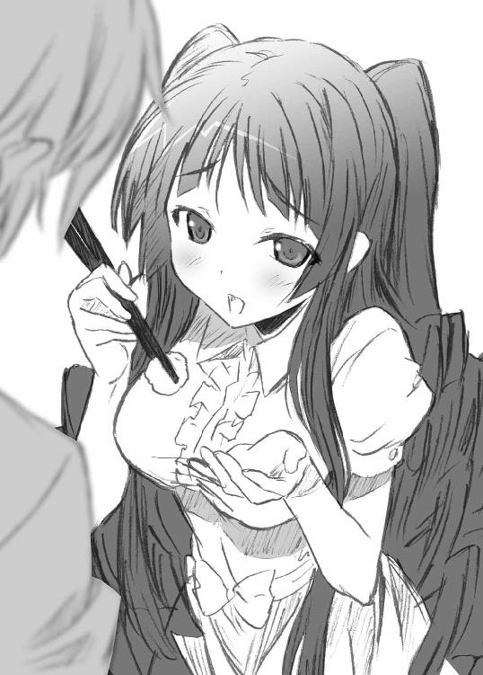

| 悪に堕ちたら美少女まみれで大勝利！！ (ＨＪ文庫) | |
| 岡沢六十四 | |
| (2012) | |

プロローグ
正義の組織ＭＩＮＯＳから除隊を言い渡された。
俺こと十王正人が五度目の入隊試験にしてやっと合格した、一週間後のことだった。
「何故です!?」
眼の前にはＭＩＮＯＳ司令である十王厳破が座っている。ＭＴ能力犯罪における第一人者にして、その専門組織たるＭＩＮＯＳの創設者。そして、俺の父親だ。
五十歳を越えながらも肉体は若者のようにたくましく、その顔は『閻魔大王に似る』と言われるほどに厳つい。全身から溢れ出す迫力は、俺みたいな若造をビビらせるには充分だ。
だが今日ばかりは黙っていられない。
「なんで一度は合格判定を受けながら、後になって取り消されたんですか!? アナタがそうしたんですね!? 隊員の人事に口出しできるような権力の持ち主なんて、アナタしかいない！」
「何故お前が......」
オヤジが口を開いた。まるで地面が揺れるような重い響きのある声だ。
「......この組織に相応しくないか、わかるか？」
「わかりません！ 俺は努力してきた！ ＭＴ能力はないけれど、それ以外の分野で活躍できるよう自分を磨いてきたつもりです！ 作戦立案、後方支援、いずれにおいても現隊員に負けない自信がある！」
「お前はまだ十五だ。勉学に励み、高校大学を出てからでも入隊は遅くない」
「姉さんは十一歳でＭＩＮＯＳに入隊した！」
血を吐くような思いで言った。
「......父さん、アナタが俺を拒否したのは、やっぱり姉さんと比べてのことですか？ 俺は姉さんのような優れた能力者じゃない。姉さんみたいに役に立たないし、世間から脚光を浴びることもない」
「............」
「自分の傍にいるのは天才の姉さんだけでいいと。凡人の俺は目障りだと。そういうことですか!?」
「お前がそう思っている限り、ＭＩＮＯＳはお前を必要としない」
＊ ＊ ＊
それ以上食い下がることもできず、俺は司令室を出た。そのまま階段を降り、出口へと向かう。
司令の息子でありながら、入隊試験に落第。しかもこれが初めてのことではない。五度目だ。毎年一度実施される新隊員の入隊試験に、五年連続の不合格。
でも前の四回と違い、五度目の今年は受かっていたはずだった。長年の努力が実を結び、家のポストに合格通知はたしかに届いていた。しかしそれは儚くも消え去った。最高権力者であるオヤジの鶴の一声によって。
実際そうに違いない。隊員の人事にいちいち口出しができて、俺ごとき有象無象を気に掛ける人物と言えば、オヤジ以外に心当たりがない。
四度も試験に落ちるような不肖の息子などいらないということか。オヤジにとって自分の子供は、優秀すぎるほどに優秀な、姉さんだけで充分なのだ。
「マーサーくん！」
いきなり後ろから抱きつかれた。背中に感じる二つの柔らかさ。いつもだったら慌てて引きはがすところだが、今日はそんな元気もない。
「..................あてなさん、本部の中で遊ばないでください」
「こーら、他人行儀なこと言っちゃダメよ。私はＭＩＮＯＳの隊員である以前にマサくんのお姉ちゃんでいるつもりなんだから、マサくんも遠慮しないで？」
などと言って胸を押し付けてくる女は、たしかに俺の姉だった。
アーモンド形の大きな瞳に、小さくて高い鼻。ほんの少し厚めの唇には人懐っこさげな微笑みが浮かんでいて、この人のことが苦手な俺ですら、危うく引き込まれそうになる。
十王あてな。
正義の組織ＭＩＮＯＳの女性隊員。十一歳の若さで入隊し、それから十六歳になる今日まで数多くの実績を上げてきたベテラン。
そして司令・十王厳破の実の娘であり、俺の姉でもある。
「マサくん聞いたよ。また試験に落ちたんだってね」
............ズキリ。
「残念だったね。でも気を落とさないで、マサくんはやればできる子なんだから。努力は、続けていればいつか報われるときがくるわ。大切なのは諦めないことよ」
........................うるさい黙れよ。
「でもマサくんは本当に偉いよね。五回不合格になってもまだ諦めようとしない。その不屈の闘志があれば、いつか必ず試験にも通るわ。神様は、最後まで諦めない人を見捨てたりしないもの」
もういい。
俺はアンタに慰められるほど落ちぶれてなんかない。試験だって受かった。本当は受かったんだ。それなのにあのオヤジがすべてを台無しにしやがった。......そう大声で叫びたかったけれどできなかった。言えば、自分がますます惨めになるような気がしたから。
千年に一人の天才と言われた十王あてな。
弱冠十一歳というＭＩＮＯＳ史上最年少で合格し、それから経験を積み、数ある事件を解決し、美しく成長した今は実力も実績もナンバーワンとなっていた。
ＭＴ能力者としての実力は、前人未到のＭＴ値二五一五。
千を越える、過去最高の数値だ。
ただ今現役の女子高生。隊員職務の片手間で通っている高校の成績はトップらしい。明るい性格で人当たりもよく、学校では生徒会長。ＭＩＮＯＳでは機動部第一アタックチームの隊長をしている。上からは信頼され、下からは人望がある。人柄と実力がともなって、隊内では早くも次の司令候補と囁かれるほどだった。
「ほら、沈んだ顔をしないで。元気出して？ また来年がんばりましょう？」
ベタベタまとわりついてくる姉のことが本当にうっとうしくなってきた矢先、建物の奥からＭＩＮＯＳの隊員らしい女性が駆け出してきた。
「探しましたよあてな隊長！ シャーウッド壊滅作戦の会議が始まります。その後はテレビの取材も入ってるんですから急いでください！」
「えっ、もうそんな時間？ ......ゴメンねマサくん、お姉ちゃん戻らないと。今日は一緒に夕ごはん食べよ？ マサくんの試験の残念会！ イタリア料理の美味しいお店に連れていってあげるから、ね？ 楽しみにしててね！」
姉さんが背中を押されて消え去っていこうとする最中、連れ去り役の女性隊員が俺に耳打ちした。
「隊長の弟さんですね？ 隊長はとても忙しい方なんです。私的な立場を利用して、隊長の職務を妨害しないでください」
エリートである正規の隊員から部外者への通告。見下し、見下されるには当然の間柄だと、向こうは思っているのだろう。
たしかにその通りだ。俺が努力して、努力して、それでも通ることのできなかったＭＩＮＯＳの入隊試験に、ここに勤める人間は全員通っている。
ここにいる全員が、俺を見下す資格をもっているんだ。
思えば、俺のこの劣等感まみれの人生が幕開けしたのは、姉がＭＩＮＯＳへの入隊を決めてからだった。
『姉が受かったのだ。弟だって受かるはず』なんて何の根拠もない考えで、母や親戚やその他大勢の大人が俺にＭＩＮＯＳへの入隊試験を受けさせた。当時十一歳の子供だった俺は初めての試験を受け、そして当然のように落ちた。
十二歳になって落ち、十三歳になって落ち、十四歳になっても落ちて、大人たちは次々と俺に失望していった。
オヤジだって、きっと真っ先に失望していたんだろう。四回も試験に落ちた無能者。自分の息子と名乗らせるのも恥ずかしい失敗作と。だから十五歳にしてやっと手にした合格通知を、俺から取り上げた。
....................................もうイヤだ。
「アンタらに......」
「え？」
「......そんなことを言う資格があるのか？ アンタらなんぞ姉さんの実力に頼ってるだけの腰巾着だろう。敵と戦って、倒して、逮捕するのもゼンブ姉さん任せで自分らは後ろで見てるだけ。世間が知らないとでも思ってるのか!? 姉さん以外のＭＩＮＯＳ隊員は立ってるだけのハリボテだって！」
「え？ あ、あの......？」
姉さんはもう遥か向こうへ歩き去っていて、この悶着に気付いてない。そうであろうとなかろうと、俺の憤激はもう止まらない。
「よくそんなザマで正義の味方を名乗れるもんだな！ アンタたちは本当に必要なのか!?バカみたいに強い姉さんさえいれば、他の隊員はＭＩＮＯＳにいらないんじゃないのか!?」
俺と同じように、とまでは言えなかった。
姉さんの部下の女性隊員は、反論など予想だにしなかったんだろう。目を白黒させて返す言葉も浮かばないようだった。
そんな彼女に俺は、スマートフォンを取出し向ける。液晶の表示を見てニヤリとすると、俺は踵を返してその場を去った。
............実験は成功だ。やはりＭＴ能力への理論交渉の見解は間違っていなかった。
これだけの考察ができる俺は、やっぱり有能なのだ。それを理解できないＭＩＮＯＳの方が無能なんだ。
「なら、無能なＭＩＮＯＳになんか誰が入ってやるか。俺はもっと、俺に相応しい、俺の才能を生かせる場所に入ってやる！」
自然、足取りが早くなる。歩みはいつしか駆け足になり、ＭＩＮＯＳ本部の玄関を性急にくぐる。こんな正義の巣窟に一秒だっていられるかと。
俺は考える。本当の、俺の才能を認めてくれる場所は何処にある、と。正義が認めない俺を認めてくれる場所、正義とは反対の場所、そこは......。
「............悪の組織」
そうかわかった。悪の組織こそ、俺の本当の居場所だったんだ。だから俺は正義に拒否られ続けてきた、いつの日か悪の組織に入るために。
「そうだ、悪だ！ 悪の組織に入るぞ！」
悪の組織に入れば、それを取締ろうとするＭＩＮＯＳと戦うことになるだろう。当然そのトップメンバーである姉・あてなとも。
「......丁度いいじゃないか。姉さんに勝って、俺が無能でないって証明してやる！」
笑いが止まらない。こんなに楽しい空想は生まれて初めてだ。
「......俺は悪の組織に入る！ そして俺の能力を、才能を、全世界に知らしめてやるんだァァァー―――――――っっ！」
新生・十王正人、始動の瞬間だった。
第一章 スポーツ尻は弾力が命
自信はあった。
なにせ五年越しとはいえエリート組織ＭＩＮＯＳへの入隊試験に合格した俺だもの。途中で取り消されたけどさ。それなりに知識もあるし、能力もある。
学力だって東大生相当の水準をキープしており、語学は四カ国語に堪能、法律は国際法まで習熟、軍事や作戦立案の勉強も重ね、ネットで行われた兵棋演習では、プロの軍人に勝ったこともある。社会科学やＭＴ理論における論文をイギリスで発表したこともあり、知識だけに偏ってはいけないと空手や柔道など格闘技もやった。いずれも段もちだ。
俺は、正義の組織へ入るためにこれだけのことをやった。血を吐くような努力だった。それらを使えば、悪の組織に入り込むぐらいわけない。
正義の組織がＭＩＮＯＳ一つだけであるのに対し、悪の組織はアンダーグラウンドであるだけにピンからキリまで無数にある。その中に一つくらい俺を受け入れてくれるところがあるだろう、そうタカを括っていた。
しかし現実は非情だった。
不採用。
不合格。
落選。
サクラチル。
今回は縁がなかったということで。
貴方のますますのご栄達をお祈りしています。
「何故だァー―――――――!?」
自宅である学生寮の部屋に、無数の不採用通知がバラまかれた。
「俺は......、俺はこんなにも役に立たない人間だったのか......!?」
絶望で立っていられねえ。ガクリと両手を床に着ける。
一つぐらい受かるだろうと思っていた悪の組織への入団申し込みは、一言で言うと全滅。
すべて不合格だった。
この事実は、自身有能であると思っていた俺にとって想像以上のダメージだ。
ＭＩＮＯＳに入りたい一心で、青春を捨てて打ち込んだ試験勉強。第一目的を達成することはできなかったが、そのために積んだ努力は、血肉になってちゃんと生きていると思っていた。
それらの努力はまったく無駄だったのか。
「......メシ食いに行こう」
しばらく何も考えたくない。この受け入れがたい現実を受け入れるには、脳ミソを空白にするためのいくらかの時間が必要だった。
＊ ＊ ＊
自室から出て、向かうのは寮の食堂。
俺は今現在、在学する高校での寮暮らしだった。オヤジや姉さんのいる実家での暮らしに耐えがたくなったからだ。
食堂に着く。夕飯時はとっくに過ぎ、俺の他に利用者は一人もいない。自販機で菓子パンを買い、ボソボソと食った。
手持無沙汰にテレビをつけると、そこには今俺が一番見たくないものが映し出されている。
『――今日は、特別ゲストに正義の組織ＭＩＮＯＳのトップ隊員・十王あてなさんをお迎えしております。あてなさんは前年の単独検挙数が五百件を越え、ＭＩＮＯＳでもっとも優れた隊員であることが証明されていますが、それだけ大活躍するための秘訣などは、おありになるのでしょうか？』
『単独検挙数と言っても、そのすべては隊の仲間と協力して成し遂げたことですから、けして私一人の功績とは言えません。そして何より、悪を倒すことに必要なのは正義を愛する心、市民の皆さんを守ろうとする思いだと認識しています。......秘訣と言えば、まさにそれでしょうね』
『なるほど、大切なのは気持ちであると？』
『そうです。司令・十王厳破を始めとし、ＭＩＮＯＳ隊員の全員。そして我々を支援してくださる都知事さん、都内各所に勤めておられる警官や教員など聖職につかれる方々も、その気持ちを有しています。だからこそ今この街は平和を保っていられる。私の望みは、この国に住む人々全員に正義の心をもってもらうことです。そうすれば皆が幸せになれる世界が作り出せると信じています』
『なんと崇高な理想でしょう！ ......私、感動で涙が出てきました。それでは、次からはあてなさんの理想を実現するためのＭＴ能力者ＧＰＳ追跡条例、悪の組織に対するメール通信傍受条例などの必要性について......』
プチッ。
げんなりとしてテレビを消す。味気ない食事がさらに砂を噛んでる気分になった。
自分もいつか、あんな風にインタビューを受ける日が来るのかなあ、と思った時期もある。試験に合格し、ＭＩＮＯＳに入隊し、順調に経歴を踏めばそういう未来もあったろう。
しかしそれは夢物語であることは確定した。俺は正義から締め出されたのだ。そう思えば何を食べても砂の味しかしないのは当然だ。
食べ終わったパン袋をクシャクシャと捨て、食堂を後にする。
「..................これからどうするかな？」
と自問しても、どうしようもないことはよくわかっている。正義の組織もダメ、悪の組織もダメ。俺の進むべき道は完全に閉ざされてしまった。
「どんづまりか......」
食堂から自室までの帰り道。その途中に掲示板があった。掲示板には、さまざまな部活動の部員募集が張り紙してある。
「............部活ねえ」
華やかな色合いの掲示板。野球部、剣道部、陸上部、文芸部、茶道部、美術部。色々あるもんだな。
『野球部で鍛えて正義の組織に入ろう！』
『剣道部の鍛錬は悪を倒す力を生む！』
『茶道部の礼儀作法で正しい心が宿ります』
......なんでこんなところにまで正義の宣伝が入ってるんだよ？ 何のプロパガンダだ？
このよくわからない浸透っぷりに戦慄しつつ、それでもなんともなしに流し見していると、その中の一つに目を引かれた。
悪の組織 団員募集。
「なんと!?」
悪の組織が広告を出していた。
この正義礼賛一色の学校の掲示板に、悪の組織勧誘。恐らくは今日張り出したばかりの、そして明日には剥がされてしまうだろう悪の広告に、どうしても目が行ってしまう。
～～～悪の組織 団員募集～～～
私たちといっしょに楽しく悪の活動をしてみませんか？
私たちおしり団は、悪の頂点をめざす組織です。
まだまだ小さな組織ですが、いつか悪の星になろうと一生けん命がんばっています。
私たちといっしょに、ものすごい悪になりたいと思っている人。
月曜日から金曜日までの放課後に、社会準備室まで来てくださいね。
あ、あとお菓子も出ます。
悪の組織 おしり団
「......なんじゃこりゃああああああ？」
なんてほのぼのした文面だ。悪が募集。悪の組織が募集広告。しかも超アットホーム。なんとお菓子が出るそうな。あまりに温い。隣の野球部チラシのほうが覇気に満ちているじゃねえか。
「......いかん。これ釣りだよ、絶対釣りだよ」
食いついた途端「ウソだよバーカ！ 帰ってプレステやろーぜ！」とか言われるに違いない。こんなものにまで興味を引かれるなんて、そんなに疲れているのか俺は？
寝よう、帰って寝よう。一晩寝て気分がしゃっきりすれば、何か別のいい考えが浮かぶかもしれない。そう考えて俺は掲示板を素通りし、自室へと戻った。
＊ ＊ ＊
そして翌日。張り紙に書いてあった社会準備室の前に、俺がいた。
その心中、苦しい。
「..................くそう」
一晩経っても結論は変わらなかった。
正義の組織に入ることを目指し、多くの努力を積み重ねてきた。その過去を一切なかったことにするには、どうしてもできない。
その上で、悪の組織にまで袖にされた俺の最後の行き場は、ここしかなかった。
高校を拠点にしている悪の組織、名前は......。
「......なんだっけ？」
掲示板の張り紙に書いてあったはずだが、いまいち思い出せない。
まあいいか、このドアを開けて直接話をしてみればわかるだろ。
「失礼しまーす」
俺は控えめな勢いで社会準備室のドアを開けた。
社会準備室は平たく言うと物置だ。江戸時代の年表とか、遺跡のレプリカとか、そんな年に一度使うか使わないかの教材がホコリを被っている。
そんな死蔵品でごったがえした教室に、比較的開けたスペースが二畳分ほどあった。そこに机と椅子を置いて、二人の女子生徒が座っていた。
一人は、背の低い小柄な少女。長髪を後ろで束ねて地味な印象だ。
もう一人は逆に、髪の毛が銀色で、一目見て忘れないほど印象が強い。
「はれはれ？ どなた様ですかー？」
二人のうちの小柄な少女が応対に出てきた。思わず頭を撫でたくなるような可愛い声だ。
「せんせーに言われて社会道具を取りに来たですか？ でも一人だと大変ですよ？ 重いのもありますし、よかったら私たちがお手伝いしますけど？」
「いや、違くて、俺はそういうのじゃなくて......」
「ふぇ？ じゃあなんです？」
「あの......、寮の掲示板で張り紙見て......」
「張り紙？」
何故そこで疑問で返す？ キミらが張った張り紙じゃないんかい？
「その、悪の組織の......」
「にゃあっ！」
俺が補足情報を加えると、小柄な女子生徒は、今思い出したとばかりに目をカッと見開き、そして俺の腕をガシッと握り締めた。
「かくほぉぉぉぉー―――――！」
「えええぇー――!?」
俺、いきなり「とったどぉー！」状態。
「スカディちゃん！ やりましたよぉー!? 新団員です、記念すべき団員第三号です！」
「落ち着いてください波美」
もう一人の銀髪の女生徒が、小柄なほうを淡々と諌める。
「結論を急いではいけません。悪の組織には、厳しい入団試験が必要と聞きます。それを通過して初めて、志願者は一人前の兵士と認められるのです」
「そ、そうですね。むのーものは、いらないってことですよね」
その一言が我が胸をグサッと刺す。蘇る悪夢は、五度に及ぶＭＩＮＯＳ入隊試験落第と、悪の組織内定全滅の惨劇。
試験という言葉は、いまや俺にとって鬼門。ここでもまだ俺は試されるというのか。悪夢のメモリーがまた増えるというのか？
いや、ネガティブになるな俺。その失敗の連鎖を断ち切るために俺は今日ここに来たのではないか。今度こそ成功し、どん底だった俺の人生をひっくり返すんだ。
「では新人さん、私の質問に答えてください」
「は、はいっ」
この質疑いかんで俺の運命が決まる。運命の扉は今度こそ開くのか？
「おしりは、好きですか？」
「え？ す、好きです？」
「合格でー――――――――す！」
「えぇー―――!?」
運命の扉、チョロいにもほどがあった。
なんか反射的に「好き」って言っちゃったけど、本当にそれでよかったの？
しかし俺の混乱を無視し、少女は興奮している。喜びのあまり小柄な体でぴょんぴょんと飛び跳ねた。
「わーいっ、わーいっ！ 入団確定です！ 新戦力です！ これで私たちおしり団は、また一歩やぼーに近づいたのです！」
「おしり団!?」
なんだそのふざけたネーミングは!?
......そーだ思い出したよ、書いてあったな『おしり団』とか！ あんときゃほのぼのした文面のほうに気ぃ取られてたけど、こっちも充分なツッコミどころじゃねえか！
「私たちの仲間に入る条件は、おしりが好きなこと！ おっぱいよりおしり！ 悪の組織おしり団です！」
その宣言を聞いた瞬間、フッと気が遠くなった。
なんだよ、おしり団って..................!?
そんな変な名前の組織に入った俺は、やっぱりまんまと釣られてしまったんじゃないのか!?
＊ ＊ ＊
「ええーと、改めまして、おしり団団長の伊佐波美ともうしまーす」
「副団長のスカディ・Ｗ・東郷です」
オイ、今たった二人で団長＆副団長言ったぞ。たった二人ですべてを回すつもりか？
ポニテの騒がしい少女が伊佐波美。
銀髪の女性がスカディというらしい。
「そしてアナタが正人さん！」
「......え？ ああ、はい、そうです。俺が十王正人です」
提出した入団届の名前欄を確認しつつ、自己紹介しあう互いであった。
「私と正人さんが一年生で、スカディちゃんは二年生です！ スカディちゃんだけ学年違いますけど、仲間外れしないでがんばりましょー！」
「優しいですね波美」
そこ賞賛するとこなのだろうか？ それ以前に一年生が団長で、二年生が副団長なの？ そしてやっぱり団員二人だけっておかしくない？
「あの......、聞いていいですか？」
「はい！ なんでもドンと聞きやがれです！」
「なんでこの組織、おしり団なんて名前なんですか？」
何故そんな名前を悪の組織につけたんだ？ 人として純粋に疑問だ。
「おしりが素晴らしいからです！」
即答か。
「お尻が？」
お尻ってアレだよな。人間の体の部位だよな。
「そうです！ 新人の正人さんには一からお話しした方がいいかもですね。いいでしょう私語ります！ 正人さん是非ともごはいちょーください！」
「覚悟してください。話長くなります」
銀髪のスカディさんからの注意喚起。
「おしりはサイコーです！ 女性の体でもっとも美しい部位です！ 世の中ではおっぱいおっぱい言われてますけど、真に魅力的なのはおしりの方なのです！ 何故かって？ 考えても見てください。男の子が人生で最初にやるエッチな行為はスカートめくりです。痴漢さんは胸じゃなくおしりを触ってきます。つまり！ エロティックというものはすべからくおしりから始まるということです！ さらに、おっぱいの場合それを彩るアイテムはブラジャー一択しかありませんが、おしりはさまざまなものを装備可能です。パンツは色から形状まで千差万別ですが、それを除いてもズボンにミニスカ、スパッツにホットパンツ、タイツにストッキングにガーターベルトに、変わったものでは褌と紐！ こんなに多くの衣服で着飾れるおしりは本当に美しいと思いませんか？ そしてなによりおしりとは、生命を支える器なのです！ おしりの骨である骨盤は、妊娠時に赤ちゃんを支える受け皿となるのです！ ゆえに骨盤がしっかり大きいほどお腹の赤ちゃんは安全でいられる。そして骨盤が大きい＝おしりも大きいのです。つまり男性は、おしりの大きい女性を見て『これならオレの子供を無事に生んでくれる』と無意識に判断し、それを魅力と感じるわけです！ そう、おしりとは、女性の一番大事な役目にダイレクトに繋がった部位なのです。美しいおしりと、素晴らしい女性は同義語なのです。これによりおしりが、女性にも男性にもいかに重要な意味をもつかという......！」
「ホントに話長ぇ!?」
そしてウザい。
とりあえず伊佐波美なる少女の、お尻への並々ならぬ情熱は感じ取れた。しかし波美さんは、それだけではまだ満足できないらしい。
「むううぅ、言葉だけでは不十分な気がします。......スカディちゃん！」
「なんですか波美？」
呼びかけられ、銀髪の副団長が冷静に応える。
「ちょっとこっちにカモンして、後ろを向いてください。んでんで体を『く』の字に曲げて......」
「......？ こうですか？」
スカディさんは、波美さんの要望通り腰を曲げ『く』の字の体勢をとると、ちょうど俺へ向かってお尻を突き出す格好になる。スカートに包まれたお尻が、俺のすぐ眼前へ。
そのポーズさりげにエロくない？
「そしてスカディちゃんのスカートをめくります」
「うわァー―――――――!?」
さりげどころか直球でエロくない!?
尻！ スカートめくってコンニチハしたのは肉付きのよい引き締まった尻！ スカートめくりによってあられもなく晒されたそのお尻が、あの銀髪クールビューティ・スカディさんのものだと考えただけで俺の心臓はバクバクだ。
こんなの目の前に出されて平静でいられるか！
「お、おおおおお......！」
あまりのエロアクシデントに言葉も失う。
ここは学校だから、スカディさんは当然制服を着ていたが、制服のスカートという禁断の領域を暴かれた彼女のお尻は、紺色のナイロン生地に覆われて......、え？
「スカディさんが穿いてるのって......？」
「ブルマですよ」
スカディさんはスカートの下にブルマを重ね穿きしていた。
いや、これでスカートの下からパンツが出てきたらモノホンの犯罪行為になるため、こと無事に至って俺はホッとしたような、ガッカリしたような。
「......っていうか、何故ブルマ？」
「それは、スカディちゃんのおしりがスポーツ尻のカテゴリに入るからです！」
「スポーツ尻!?」
なんか変なカテゴライズきた。
「......波美、この体勢は恥ずかしいのですが」
現在お尻丸出しにされているスカディさんが淡々と述べる。
「スカディちゃんは、すんごいスポーツ少女なんです！ 一〇〇メートル十三秒で走るし！ 空手も剣道も超強いし、部活の練習試合じゃ助っ人に引っ張りオクトパスなんです！」
それを無視して語る波美さん。ある意味凄い。
「スポーツ万能のスカディちゃんは、おしりにも筋肉がついてるんです。その筋肉は、スカディちゃんのおしりに丸みと、ムチムチの弾力を与えるのです！ 見てください！」
と言って波美さんは、スカディさんのブルマ尻に指を押し付ける。すると指は、尻肉の素晴らしい弾力によって押し返された。
「この弾力こそスポーツ尻最大の魅力です！ ゴム鞠のような手応えは他のどんなものでも味わうことはできません！」
「......波美、恥ずかしいのですが」
「素晴らしき弾力！ こんな手応えを感じさせてくれるのはスポーツ尻だけです！ 素晴らしきスポーツ尻！ スポーツマンヒップにモッコリです！」
「波美、恥ずかしい......」
「そしてスポーツ尻にもっとも似合う装飾はブルマ！ スポーツ少女のマストアイテムです！ このブルマ、私の自作です！ スカディちゃんのために一縫い一縫いパトスを込めました！」
「波美、恥ず......」
スカディさんの訴えを完全黙殺してチビッコのフィーバーは止まらない。煙が出るくらいにブルマの表面を撫でさすってらっしゃる。
「正人さん、では正人さんもスカディちゃんのおしりを触って、スポーツ尻の弾力を実感してみてください！」
「え？ い、いいんですか？ じゃあ......」
と俺が不用意に手を伸ばしたところ、スカディさんから殴られた。
「いいわけないじゃないですか」
「ですよねー」
っていうか罠だコレ。罠過ぎる。
「しかしスカディさん、でしたっけ？ 人前でお尻見せられて恥ずかしくないんですか？」
「超恥ずかしいですが、何か」
スカディさんは超無表情に言ってきた。とても恥ずかしいようには見えなかった。
「かくもさよーに、おしりとは素晴らしきかななのです！ まさに人類の宝なのです！ しかし、だからこその問題があるのです！」
「と、言いますと？」
「知らない人のおしりを触ったり撫でたりすると、おまわりさんに通報されてしまうのです！ なんというリフジン！ 会った瞬間飛びつきたくなるおしりもあると言いますのに！」
ごめんなさい、それまったくもって理不尽じゃないです。変質者と遭遇したときの至極真っ当な対応です。
「これは、おしりを愛する権利を迫害するものなのです！ だから私たちは悪の組織をそーせつしたのです！ おしりを愛でることが悪だとおっしゃるならば！」
まあ、たしかにお尻が好きなんて大っぴらには言えないよなあ。公に知られれば変態扱い確定だ。
だから悪の組織を作る、っていうのも唐突な話ではあるが。社会的に認められない趣味ならば、いっそ本物の悪になってやろう、ということか。
「......思考が極端だなぁ」
「そんなことにゃーです！ 悪いこといっぱいしますよ！ 好きな女の人のおしり触りまくりますし、スカートもめくり放題です！」
「野望ちっちぇえぇぇー―っ！」
むしろそのささやかさに、なごんだ。
「まあ、わかりました。おしり団がどういう理屈で悪の組織やってるのかはわかりました。で、一つ聞きたいことがあるんですが......」
「はい、しつぎおーとー、しますですよ！」
「おしり団は、悪の組織としてどういう活動をやってるんですか？」
「......へれ？」
「イヤ、だから、言ってましたよね。悪の組織として大きくなってお尻触りまくるって。で、組織を大きくするために波美さんたちはどんな活動をしているんですか？」
「街に出て、行きかう女の人のおしりウォッチをしたり、雑誌のグラビアのおしりチェックをしたり......」
「それただの変態活動じゃないですか。俺が聞いてるのは悪の組織としての勢力拡大の方策ですよ」
その辺りをハッキリさせておかないと不安で仕方がない。俺の目的は、悪の組織で大きくのし上がって、俺を見下してきたオヤジや姉さんに復讐することだ。そのためにもただの変態組織に入るわけにはいかない。俺が入りたいのは正義と戦う悪の組織なのだ。
「............」
「どうなんですか、波美さん？」
「......おしりにダー―イブッ！」
「えぇー!?」
波美さんはいきなりスカディさんに抱きつき、お尻に頬ずりし始めた。
「......波美、誤魔化すために小官のお尻にダイブしないでください」
アレは話を誤魔化す手段だったのか。相当ドキドキしてしまったので効果は抜群と思うが、やっぱりスカディさんはお尻スリスリされながら無表情だ。
「よろしいでしょうか、正人軍曹」
「はい。......ていうか、軍曹？」
なんか階級ついたよ？
「実を言うと、小官たちは悪の組織について何も知らないのです。波美はただお尻を愛でたいだけですし。あいにく小官も、悪の組織に詳しい知識をもちあわせません」
「はあ......？」
「なので今日まで、おしり団はごく小規模な活動しか行ってきませんでした。ですが今日、貴官が門を叩かれた。みずから悪の組織に所属しようとする貴官なら、悪の組織の正しい活動をご存知なのではないでしょうか」
「そうですよ！」
波美さんがスカディさんのお尻から顔を離した。
「正人さん！ 正人さんは自分から悪の組織に入りたいというぐらい悪い人なんですよね！ 悪のことを知ってる人なんですよね！ だったらお願いです！ 私たちに悪の組織のイロハをごきょーじゅしてください！」
「私からもお願いします。正人軍曹を悪人と見込んで」
なんだか話が変な方向に来ていた。悪の組織に入ろうとして、逆に悪の教えを乞われるとは。
これでも俺は、つい最近まで正義の組織ＭＩＮＯＳに入隊しようとしていた人間だ。敵を知れば百戦なんたらの法則で、悪の組織についても一通り知識がある。
だから教えようと思えば教えることもできるさ。
でもだよ？
何度も言うけど、俺は正義を目指していた人間なのです。そんな人を捕まえて「悪人、悪人」呼ばわりするのって、心がえぐられると思いませんか？
見えないところで、少し泣いた。
＊ ＊ ＊
「......それでは、これから悪の組織に関する説明をしていこうと思います」
「わ～～～っ！」
「......ぱち、ぱち、ぱち」
なんだろうこの状況は？ 悪の組織に悪のことを教えている。
「まず最初から話しましょう。そもそも悪の組織ができた発端には、ＭＴ能力が大きく関わってきます」
「えむてい？ ＭＴとしたおしりのことですか!?」
「ちゃいますよ。ＭＴとはＭｉｎｄ Ｔｒａｎｃｅｒの略称です。人の信念を物理的な力に変える、一種の超能力だと思ってください。この能力をもつ人間は、何かを信じる心が強ければ強いほど、怪物のような力を発揮できる。悪用するととても危険で、これを取締るために正義の組織ＭＩＮＯＳが存在します」
「正義!? 私たちの敵ですか!?」
「......。まあ、一応アイツらの目的は悪の組織の取締りですから......」
もっとも向こうは、おしり団ごとき弱小組織などアウト・オブ・眼中だろうけど。
「ＭＩＮＯＳが正式に取締り対象とみなしている悪の組織は約百。いずれも違法ＭＴ能力者で結成されたチームです。それらは結成動機や活動内容、規模や能力まで千差万別ですが、中でももっとも危険で、もっとも凶暴な悪の組織が五つ......」
キュキュッと、ホワイトボードに黒マジックで板書する。
シャーウッド。
アザゼルバンク。
ＭＴＣメイソン。
マッドエンペラー。
黒援隊。
五つの名前が示された。
「......これらが通称・悪の五大組織と言われ、悪の世界を牛耳っている連中です。それ以外は中小規模のザコ組織。五大組織の傘下か、軽犯罪を行っているチンピラばかりです」
「ちなみに！ 私たちおしり団は......？」
「間違いなくランク外です」
「へぅ～～」
波美さんは力なく崩れ落ちた。
「でも、正人さんは物知りですね～。さすが悪人さんです！ 悪のことなら何でも正人さんに聞けよ！ って感じですね！」
「うぐおっ」
痛い痛い痛い、心の片隅がチクチク痛い！ 予想以上にメンタルの弱い俺だった。いまだ悪人呼ばわりされることにハートが順応できていない。
......いや、未練がましいぞ俺。正義に見切りをつけ、悪の頂点に上り詰めてやると誓ったんじゃないか。さっさと気持ちを切り替え、謹厳実直な悪人を目指すのだ。
「......正人軍曹、発言を許可願います」
「は、はい、いいですけど......」
だから何故軍曹？
「これまでの説明をまとめるに、悪の組織を結成するにはＭＴ能力が必要不可欠である、と解釈できます。その点について詳しく解説を聞かせてください」
「ああ、そうですね。たしかにスカディさんの言うとおりです」
理解力のある人だな。たったこれだけの説明で、鋭く要点を見抜いている。団長である波美さんが底抜けにちゃらんぽらんであるのに対し、この人は隙がなく、只者でない。
「そもそも悪の組織となる基準が『ＭＩＮＯＳの取り締まり対象とされること』なんだから、ＭＴ能力は絶対条件です。正義の組織ＭＩＮＯＳは、ＭＴ犯罪専門の治安維持組織なんだから」
「じゃあじゃあ、ムチムチのーりょくのない悪の組織は......？」
「普通の犯罪組織として、通常警察の取り締まり対象になります」
「それは困ってしまってワンワンです！」
いきなり波美さんが慌てだす。
「私、その、ムチムチのーりょく、使えません！」
「波美さん、ＭＴはムチムチの略じゃありませんよ」
「どうしましょう！ これじゃあおしり団は、ただのおしり同好会になってしまいます。正人さんは使えないんですか!?」
「つ、使えません......」
そう答える俺の顔は、きっと苦渋に満ちているだろう。
ＭＴは、いまだ科学で解明されていない未知の能力だった。その資質は生まれに大きく左右され、使える者は最初から使え、使えない者は一生使えない。
「え？ なんて言ったんですか正人さん。声がちーさくて聞こえません！」
「......使えません」
「え？ 何ですって!?」
「使えません......！」
「もー一回！」
ワザとやってんだろアンタ!?
「......大丈夫です、波美」
スカディさんが発言した。
「ＭＴ能力ならば小官が使用できます」
「「ええ!?」」
波美さんも俺も、驚いてスカディさんに注目する。
「............ちょっと、スカディさん確認させてください！」
俺はおもむろに携帯電話を取り出し、その電源を入れた。何故かというと、俺の使っているスマートフォンには、ＭＴエネルギーを計測するアプリが入っているからだ。計測アプリはスカディさんの不可視の力に反応し、その大きさを数値化して表示する。
「......ＭＴ値七九〇!?」
ＭＴ値とはその名の通り、ＭＴ能力者の強さを表す数値だ。ＭＴ値は通常〇～一〇〇〇までであり、スカディさんの数値は七九〇。かなりの高数値だ。ＭＩＮＯＳならば機動部のレギュラー。悪であれば五大組織の幹部クラスに相当する。
おかしいだろコレ！ なんでこんな実力者が、こんなお遊び組織に入ってるんだ!?
もし俺にこれだけのＭＴ能力があったら、ＭＩＮＯＳに入隊することなんて簡単だっただろうに......。ＭＩＮＯＳはＭＴ能力を専門にする組織だ。だからこそ新人選考にはＭＴ能力の有無が大きなウエイトを占める。
俺が血を吐くような努力を重ねて、それでも入隊が叶わなかった理由はたった一つ。ＭＴ能力を生まれもたなかったからだ。
ＭＩＮＯＳへの入隊試験があるのは、ＭＴ能力をもたない無能力者だけだ。能力者は、ただＭＴ値に関する測定があるだけで、一定以上の値を出せば簡単に入隊できる。
それに比べ、無能力者が受けるテストは東大受験より難しい。
もてる者ともたざる者の不平等。そして目の前のスカディさんはもってる側の人間だ。自然嫉妬の炎がメラメラと湧き上がる。それは自分ではどうにも制御できないことだ。
イヤ待てよ俺、そんなに悲観することはないだろう？
発想を切り替えればいいんだ。俺が能力をもっていないなら、もっている他人を思いのままに操ればいい。
俺がおしり団に入れば、団長はあんなお尻バカだから団運営はすぐにも乗っ取ることができるだろう。そうすれば俺は、スカディさんという優れた手駒を労せず手に入れられる。
ソイツを意のままに使えば、悪の世界で成り上がることも、ＭＩＮＯＳを倒すことも夢じゃない。
いいじゃん俺、発想が悪人ぽくなってきたぞ。
「素晴らしい！ 素晴らしいですよスカディさん！」
パチパチパチ、わざとらしく拍手を鳴らす。
「小官はお役に立つことができるでしょうか、正人軍曹？」
「モチのロンです！ スカディさんほどのＭＴ能力者がいれば、おしり団はすぐにも上位組織になることだってできます！」
「マジ!? ホントですか!? わーいスゴイですスカディちゃん！ スカディちゃんがスゴイのは、スポーツ尻だけじゃなかったんですね！」
波美さんが大はしゃぎでスカディさんに抱きつく。彼女の顔が、スカディさんのお尻にダイレクト接触するような位置から。
「波美に喜んでいただけて光栄です」
スカディさんはお尻をモゾモゾされながらも表情を崩さない。ある意味凄ぇ。
「あっ、正人さん、その携帯電話でおしりのムチムチさを測るんですか？」
「だからＭＴはムチムチの略じゃねえって言ってるだろうがっ。......まぁともかく、そうですよ。俺のケータイはスマホだから、ＭＴ値を計測するアプリをインストールできるんです」
「すごいすごいっ！ 私のことも測ってみてくださいよ！」
「え？ でも波美さんＭＴ能力ないんですよね？」
「はい！ でも実際測ってみたことはないです！ なんかの記念にぜひ！」
計測未経験というヤツか。たしかにＭＴ能力をもちながら、それに気付かないまま普通に生活している人もいる。
測っておいて損はないと、俺は波美さんへ計測器を向けてみた。
「..................」
「どうです？ どうです？」
「ＭＴ値三、常人並ですね」
「うぇ～～？」
ＭＴ値三程度では、下敷きに発生した静電気ぐらいの力しか出ない。だから無能力者である一般人と区別されることはない。
まあ、それでも訓練を積むことによってＭＴ値が上昇する可能性はある。ＭＴ値ゼロの無能力者と決定的に違う点は、そこにあるが、スカディさんがいる以上はそこまで地道なことはやらなくていいだろう。ＭＴ値一ケタなんてＭＩＮＯＳでも面倒くさくて放置するレベルだ。
「へぅ、残念無念また来週ですぅ～」
「ご安心ください波美、アナタのことは小官がお守りします」
にょろーんとなっている波美さんをスカディさんが慰めていた。
..................。
......ちなみに俺はこっそり自分にも計測器を向けてみた。ＭＴ値ゼロ、哀しかった。
「と、とにかく大丈夫です波美さん、いや団長！ これからは俺が参謀になって、おしり団をじゃんじゃん盛り立てていきますから！ 上位組織のシャーウッドやマッドエンペラーにも負けない。正義のＭＩＮＯＳだって倒せるような組織にして見せます！」
「おお！ なんと頼りがいのある正人さんです！」
伊佐波美、スカディ・Ｗ・東郷、それにこの俺、十王正人が加わることによって悪の組織おしり団がスタートした。
そして、俺たちがまず行うべき活動は......。
＊ ＊ ＊
「我が忠実なるしもべ、正人さん！」
「ははっ！」
なんとなく悪人っぽく入ってみた。
「正人さんの好きなおしりについて語ってください！ ......もとい！ これから悪の世界で頑張る作戦を語ってください！」
「そうですね......」
考えをまとめるために一呼吸置く。
「まずは、他の組織に戦いを挑むべきですかね。もちろん悪の組織に」
「えっ、ケンカするんですか？」
「平たく言うとそうなりますが」
「でも、ケンカは悪いことなんですよ？ 相手に怪我させちゃうし......」
「団長......、俺たちは悪の組織でしょう？」
そう言うと、団長は『目から鱗が噴出した』顔をした。はなはだ不安を誘われた。
「......ですが正人軍曹」
発言したのはスカディさんだ。
「他組織に戦いを挑む......、ということは内部抗争になるのでしょうか？ 悪が正義と戦うならともかく、悪同士で抗争するのは不条理のように思えるのですが」
「それにはちゃんと理由があります」
「と、言いますと？」
「悪の組織におけるルールとして、悪同士で戦った場合、勝った方は負けた方を自分の傘下に加えることができるんです」
つまり吸収合併するということだ。先に挙げた悪の五大組織も、数多くの抗争を繰り広げ、ライバルたちを吸収して大きくなった。
「今の俺たちに足りないのは、組織としての大きさです。そのためにもまずは戦って、勝って、他組織の人員を奪い取っていかなければいけない」
そしてゆくゆくはＭＩＮＯＳとも戦える一大組織を作り上げるのだ。ＭＩＮＯＳを倒し、オヤジや姉さんに吠え面をかかせてやることが俺の真の目的なのだから。
「大丈夫です、スカディさんのＭＴ値なら大抵の相手には勝つことができます！ 俺も作戦を考えますし、大船に乗ったつもりでいてください！」
「でも......、相手の人に怪我させちゃったらヤだし......」
団長はまだ乗り気でないようだった。お尻関連を除いては、良識をもった女の子であるらしい。
「......大丈夫ですよ、波美」
「スカディちゃん？」
スカディさんが、団長の手を優しく握る。
「巷間には、こんな諺があります。――――タイマンはったらダチぜよ、と」
それ諺じゃねぇー。
「人は、拳と拳で語り合うことができる生き物なのです。そうして心通じた者たちには、言葉でわかりあうより何倍も強い絆が生まれます」
「そうか、悪の組織同士で戦うのってそういう意味があるんですねっ？」
「そうです、戦いで心通わせるニュータイプなのです」
「スゴイですスカディちゃん！ 戦いましょう、戦ってたくさん友だち作りましょう！ 百万人のおしり好きを集めましょう！」
スカディさんは意外にもスポ根だった。しかも団長はいともたやすく感銘を受け、目をキラキラさせる。
「じゃあ団長、スカディさん、これから他の組織に戦いを挑むって方向でいいですね？ だったらこれから敵対するのにちょうどよさそうな組織を探しておきますよ？」
「じゃあ正人さん！ 私たちも探します。正人さんに任せきりなのもなんか悪いですし！」
何言ってんだこの子は？ 今日の今日まで悪の組織を何も知らなかった女の子が、どうやって悪の対戦相手を探し出すっていうんだ？
しかし、ま、そういうのは言うだけ野暮だ。せっかく女の子が健気に頑張る気持ちを見せているのだから、それを尊重してやりたいようにさせてやろう。
「ハハハ......、じゃあ、お願いしましょうか」
「正人さん、ありがとうございます！ 正人さんが来てくれたおかげで、私たちも立派な悪の組織になれそうです！ がんばって、おしり団を世界一の悪にしましょうね！」
＊ ＊ ＊
......俺の、ダメダメだった人生に転機が訪れた。
学校の片隅で見つけた、同好会と紙一重の弱小組織。それでも磨きようによっては大化けしそうな可能性に俺の心は躍る。
しかし現実はそう甘くはなかった。
野望を胸にレベル上げの対戦相手を物色していたある日。団長が、とんでもない対戦相手を見つけ出してきたのだ。
そいつは悪の中でも最強最悪、現在実力ナンバーワンといわれる悪の組織・シャーウッドだった。
第二章 巨尻は女性にとって悪口らしい
俺の『ＭＩＮＯＳへの復讐計画』は、早くも頓挫の危機を迎えていた。
俺を受け入れなかった正義の組織ＭＩＮＯＳと、その中核に座す父と姉。
ヤツらを見返すために俺は、悪の組織おしり団に入った。
そこは悪というよりは、お尻を愛でる変態集団みたいなものだったが、入ってみたら意外に人材が充実している。これらの手駒を駆使していけば、いずれ巨大な悪の組織を作り出せる。正義とも戦える。洋々とした前途が広がっていた。
しかし、だ。
昼休みに教室でパンを食べていると、おしり団団長である伊佐波美さんがやってきた。
「正人さん、決まりました！ 決まりましたよ！」
何が決まったのか詳しく教えられないまま俺は団長に手を引かれ、午後の授業も残ってるのにどこかへ連れていかれる。学校を抜け出し、途中でスカディさんと合流しつつ電車に乗り、バスに乗り。
着いてみたら、そこは中世ヨーロッパだった。
「は？」
いや、本当にヨーロッパに来たわけじゃないよ。俺が元々いたのは極東の島国・日本だし。そして俺はそこから海を越えた覚えはないし、ついでに言うと時を越えた覚えもない。
なのに、眼前に広がるのは中世ヨーロッパなのである。
具体的にいうと、銀色の西洋甲冑を着けた騎士たちが俺の前にゴマンと居並んでいる。「どちらのエルサレムに十字軍遠征ですか？」と問いかけたくなるような集団だった。
ここは、都心部から三〇キロほど離れた山岳地帯。森ばっかりの山奥ということで、滅多に人の出入りのないこの場所は、悪の隠れ家としては格好だ。
その森の中に西洋騎士の集団。
数百年前のヨーロッパからタイムスリップしてきたかと疑うようなコイツらは、全身を覆うプレートアーマーに、剣や槍など、二十一世紀の日本のどっから調達してきたんだと問いただしたくなる装備で身を固めている。
その人数ざっと百人。たとえ百人乗っても大丈夫な物置でも、この重武装どもが百人乗ったらきっと潰れる。
そんな鎧騎士たちが、しかも全員殺気に満ちている。殺気たっぷりに鶴翼の陣で俺たちのことを半包囲している。これから百年戦争でもやんのかコラと言わんばかりの緊迫感だ。
「あ、あの、この人たちは............？」
震える指でこの人たちを指さす。すると団長・波美さんがあっけらかんと答えた。
「シャーベットの皆さんです！」
「波美、シャーウッドですよ」
スカディさんからの訂正を聞いて、......え？
「うえぇぇー―――――――――!?」
シャーウッド。
それは数ある悪の中でもっとも凶悪、もっとも凶暴、最強の呼び名も高い有名組織じゃないか。
旗揚げされてからの歴史も長く、既にリーダーは二代目。正義の組織ＭＩＮＯＳと何度も激突しているが、それでも勢力は衰えず、猛威を振るい続けている。
野球でいえば王・長嶋時代の読売ジャ○アンツ。戦国時代でいえば武田騎馬軍団。ワン○ースでいえば白○げ海賊団ぐらいのレベルなのだ。
それが駆け出しもいいところのおしり団と、なんでガチバトってんの？
「私たちおしり団が、シャーベットさんに挑戦を申し込んだからです！」
「......波美、シャーウッドですよ」
スカディさんからの二度目の訂正。
「挑戦!? なんで!?」
「やだなあ正人さん、忘れたんですか？ おしり団を大きくするために、他の悪の組織さんとケンカして『タイマンはったらダチぜよ』をやってお友だちになろうって。こないだ決めたじゃないですか」
「たしかにそうですが......。えっ？ じゃあ団長、もしかして対戦相手にシャーウッドを選んだってことですか!? よりにもよって!?」
なんでそんな大冒険に踏み出しちゃうの!?
こんなもの俺の予定にはない。俺はもっと、おしり団の対戦相手には同ランクの弱小組織をチョイスしていき、少しずつ規模を拡大していくつもりだったのに。
なのにいきなりシャーウッドと対戦だとは。
「なんでですか団長!? なんで俺に一言の相談もなしにこんな重要なこと決めちゃったんですか!?」
「え？ だって正人さん言ったじゃないですか。スカディちゃんと正人さんの友情パワーがあれば、これで勝つる、って」
「それにも限度があるわぁぁぁぁぁ！」
勝てない。勝てるわけがない。レベル一の勇者がいきなり大魔王と戦うようなもんじゃないか。だからといって既に両軍対峙しあっている今「もう少しレベル上げしてきます」とも言えない。まさか「大魔王からは逃げられない」という言葉の重みをリアルで実感するハメになろうとは。
大魔王ならぬ最強組織の皆さんは、当然俺たちを逃がすつもりなどない。
「なんだいボーヤ。魔女の宴から中座しようって言うのかい？ ......残念だけど、ソイツは無理な相談だ。なにせ今宵の主菜はアンタたちなんだからね」
鎧騎士団を掻き分けて、一人の女性が姿を現した。
全身黒尽くめのドレス。まるで喪服みたいなその服装は、しかし豪奢な刺繍やフリルがしてあり、その上色っぽい。
だがそれよりも目を引くのが、長い黒髪。
......イヤ、長いなんてもんじゃない。長すぎる。
彼女の後ろ手から流れる髪は背中、腰、ふくらはぎ、踵まで下りてもまだ終わりが見えない。そんな異常に長い黒髪を三つ編みに編んでまとめ、一本のロープのようにして体に巻きつけている。
首に、肩に、細いウエストに、その体を何周もしながらそれでも終わりの見えない長い髪。
真っ直ぐに伸ばせば一〇メートルに達するのではないか。太く長い三つ編みの黒髪。その姿は、女性の体に黒いニシキヘビが巻き付いているように見えた。
まるで黒い蛇をまとう魔女。その背後にひかえる西洋騎士たちは、王様にでも従うみたいに魔女へかしずく。そう、彼女こそが、騎士たちを束ねるリーダーだった。
「......魔女モリガン」
俺がその名を言えたのは、彼女が有名人であるからだ。最強組織シャーウッドの二代目リーダーとして、幾多の抗争を血で彩ってきた魔女。
彼女に敗れた者の末路は、ペンチで前歯を抜かれただの、足の裏に焼きゴテ押し付けられただの、凄惨な噂が絶えない。
その魔女が、カラスみたいな目つきで、俺たちを見下す。
「おやおや、今回の獲物はまた随分と貧相だねえ。ウズラみたいに可愛い娘が二羽と、カカシのボーヤが一本かい。これじゃあ晩餐に使うバター一カケラ分にもなりゃしない。......そうだろ？ わらわの可愛いヒキガエルども！」
ウォオオオオオオオォォォ！
魔女の号令に、後ろに控えたシャーウッドの武装メンバーが叫び返す。
ある者は兜の内から咆哮を放ち、ある者は剣と盾を楽器のように打ち鳴らし、またある者はランスの柄を地面に叩きつけて音を鳴らす。ともかく津波のような大轟音だ。
......人間の精神というのは、思ったより脆いんだなあということを知る俺。
「うりゃあああああ！ 逃げろぉぉぉぉ！」
前後もなく遁走しようとする俺を、首根っこから引っ掴んだのはスカディさんだ。
「見苦しいですよ正人軍曹。シャーウッドと戦うことは波美が下した決定です。上官の命令ならば兵卒は黙って従うのです」
「従えませんよ！ 団長が下した決定つってもどうせテキトーなんでしょ!? 大体こないだまで悪の組織の何たるかも知らなかったのに、どうやって最強組織のシャーウッドに挑戦状送れたんですか!? 軽いミステリーですよ！」
「そう思うのは、アナタが波美のことを舐めているからです」
「え？」
「舐めていいのはおしりだけです！」
多分ノリだけでそう宣言したんだろう団長が、魔女モリガンと対峙する。一応リーダー同士の睨み合いということになるが、迫力のバランスがまったく整ってなかった。
モリガンが、哀れむように微笑む。
「おやおや、これは可愛いお嬢ちゃんだね。でもここは魔の森、アンタみたいな小娘が出歩く場所じゃないよ。狼のエジキになりたくなかったら、さっさと帰りな」
「そうは行きません！ 私たちは、アナタたちと戦いに来たんです！ 勝たないと帰れません！」
「......ふっ、イキのいい赤ずきんちゃんだねぇ」
モリガンは表面上笑ってはいるものの、瞳の奥にイラつきが見える。
「舐められたもんだねえ。まさかこんなお嬢ちゃんが、わらわのシャーウッドにカチコミ入れる日が来ようなんてね。それで、お嬢ちゃんは何がお望みだい？ 悪の頂点でも狙ってるのかい？」
「そんなことはありません！」
アレ？
団長の発言に、モリガンも、他のシャーウッドメンバーも、俺すらも虚を突かれた。
悪の頂点は目指さない。じゃあ何故シャーウッドに挑むのか。っていうか俺の目的はそれなんですけども？
「私たちの目的は、――――――――アナタです！」
ズビシッ、とモリガンを指差す。
「アナタの素晴らしいおしりです！」
......え？
「「「「「ええええええええぇぇぇぇぇー―――――――!?」」」」」
全員が驚きの声を上げた。モリガン本人はもちろん、シャーウッドメンバーたちも。そして俺も。
「だから言ったでしょう、波美を舐めたらいけません、と」
なんでスカディさんだけ冷静なんだ？ あ、団長の奇行に慣れちゃってるからか。
「たしかに波美には悪の組織に関する知識はありません。しかし、波美にはそれなど問題にしないほどの、お尻に関するデータをもっているのです」
スカディさんは持参していたノートＰＣを開き、「これを見てください」と言った。
「波美が運営している個人サイトです。この中に波美がチェックした女性のお尻データが記載されています」
「えーと、どれどれ......。なんですかこの膨大な人数!? 一万は越えてますよ!?」
「波美はすでに、都内の十五歳～三十歳までの女性すべてのお尻をチェック済みです。このサイトは、その膨大なデータを整理して閲覧しやすくしたもの。ちなみにメンバー登録しなければ閲覧はできません」
「スッゲー！ 団長思った以上にスッゲー！」
「そして、ここを見てください」
スカディさんが、このお尻データ満載のサイトから、ある一人の項目をクリックする。
読んでみると、それは今目の前にいるモリガンのデータだった。
「なになに？ ......シャーウッドのリーダー・モリガン。本名・橘美夜。年齢十六歳で......、うわっ、お尻の評価五つ星!?」
「ちなみに最高評価です」
「コメント欄には......なになに？ 『巨尻カテゴリ最高級。大きさと美しさが同居した極上のお尻。ヒップサイズ九二センチという圧倒的なボリュームは、まさに安産型と呼ぶに相応しい』......？」
俺の声で読み上げられるお尻評価に、シャーウッドのメンバーからもドヨドヨざわめきが起こる。
「その通りです！」
団長がバーストした。
「モリガンさんは、私の知る限りでもっとも大きなおしりの持ち主なのです！ 巨尻です！ 安産型なのです！ そのくーぜんぜつごなおしりをもった人と、是非にもお友だちになりたいのです！」
言われてみれば、たしかにモリガンは極めて魅力的な体つきをしていた。今まで怖い雰囲気で気付けなかったが、豊満なバストは黒いドレスからはみ出さんばかりだし、そのくせくびれた腰はコルセットで締め上げているのかってほど細い。
ドレスのスカート部はパニエで膨らんでヒップラインを隠しているが、その下は見事な巨尻があるに違いない。あれだけの男好きするバストとウエストを備えているのに、ヒップだけ貧相なんてありえない。してなきゃ詐欺だ。是非ともしてほしい。
......イカン、なんか俺まで妙なテンションになってくる。
「つまり団長がシャーウッドと戦うのは、大勢力を吸収合併したいからではなく......」
「......巨尻をもったモリガン女史とお近づきになりたかったからです」
なんと恐ろしい団長のお尻への執念。彼女は、おしり団を強化拡大するのではなく、いいお尻と友だちになることを企てていたのか！
「聞いてくださいモリガンさん！ アナタのおしりは大きいです！ 悪の組織の全女性メンバーの中で一番大きなおしりです！」
「大きい!?」
さすがの魔女も悲鳴を上げる。
「ですがそれはなんら恥ずべきことではありません。世の中には引き締まった小尻がよいとする風潮がありますが、そんなものは偏見です！ 巨尻にも巨尻の良さがあるのです！ おしりとは、妊娠時に赤ちゃんを支える大切な器。それゆえにおしりが大きいほど胎児は安定し、安全な出産ができるのです。巨尻とはこんなに機能的なのですよ！ 安産型といわれるわけです！ 安産確実なおしりなのです！ だからモリガンさんの大きいおしりは、まさしく母のおしり！ その大きなおしりには、いずれお母さんとなるための子供への愛がいっぱいなのです！ しかもなおかつ美しい！ ウエストの細いモリガンさんは、巨尻のボリュームを最大限生かすことができるじゃないですか！」
「ああ、また始まったな」
「しばらく止まりません」
俺たちはもう走り出したら止まらない団長のお尻トークも慣れっこだが、初めて接するシャーウッドの面々は圧倒されて声も出ない。特に評価を受ける張本人であるモリガンは、赤面して今にも火が出そうな顔をしていた。
「......というわけで、アナタの巨尻に頬ずりさせてください！」
「イヤです！」
モリガンは怒鳴り返した。背後に控えた鎧騎士たちも堪えきれないのか、プクク、と忍び笑いを漏らしている。
「............誰だい、今笑ったのは？」
ざわり、と魔女の黒髪が波打った。
モリガンの大蛇のように長い髪が、まるで彼女の感情に反応するかのようにチリチリ蠢く。
アレ？ 目の錯覚か？ そう思って目をゴシゴシ擦って見直す。でも違う、モリガンの編まれた三つ編みが、ひとりでに解けていく。
その怪奇現象に、いかつい鎧で武装したシャーウッドのメンバーたちが震え上がる。幾多の修羅場を潜り抜けてきたであろう荒くれ者たちが、ヘビに睨まれたカエルみたいに。
「......あの、リーダー、オレたちは......」
「おやおや、ヒキガエルどもがゲコゲコ鳴くねえ」
三つ編みが完全に解けた。そして一〇メートルはあろうかという黒髪が波打ち、誰にも触れられていないのにひとりでに動き出した。
うねり、跳ね、踊りだす。まるであの黒髪自身が生き物であるかのように。
もはや比喩とか、目の錯覚とか、そんなレベルじゃない。魔女の髪は現実に、みずからの意志で動いている！
「まさか......!?」
常識では計り知れない現象。人智を超えた力。その正体に、俺は一つだけ心当たりがある。
ＭＴ能力。
正義の組織ＭＩＮＯＳが取締る超能力。
「リーダーであるわらわが侮辱されながら、それを笑う腑抜けがシャーウッドにいるなんてねえ。誰だい、出てきなよ。ハーブの葉のように摘み取ってやるからさ！」
「ま、待ってくださいモリガンさん......っ」
「アンタかい!?」
ヒュンと黒髪がしなる。カメレオンの舌を思わせる素早さで、黒髪の一房が鎧騎士に絡みついた。そのまま哀れな鎧騎士を情け容赦なく締め上げる。
「ぎゃああああー―――！」
金属鎧がひしゃげ、ベコリベコリという不気味な音が聞こえてくる。
どんだけ強く締め上げてるんだよ？
「それともアンタかい？」
ヒュン、ヒュン、ヒュン。大量の黒髪は枝分かれして次々騎士を捕まえ、強力で締め付ける。
「リーダー！ リーダー！ オレは笑ってません本当です！」
「助けて！ 助けて！」
「腕がぁぁぁ！ 腕が変な方向に曲がるぅぅー――！」
森林に、耳を塞ぎたくなるような悲鳴の合唱が響き渡った。恐ろしい光景だった。無数に枝分かれした黒髪が人々を捕えるシルエットは、まるで吸血樹木が多くの獲物を貪っているみたいだ。
その光景を、俺と団長はガクブルしながら見詰めていた。
「正人さん、なんでしょうあの髪の毛!? 巨尻パワーが奇跡を起こしたのでしょうか!?」
「そんなわけあるか！ アレが魔女モリガンのＭＴスキルですよ！」
ＭＴスキル。
みずからの精神を物理的な力に変換するＭＴ。それを具体的に運用する方法をＭＴスキルという。能力者の信念が強ければ強いほど、ＭＴ値も高く、強力な能力を使うことができる。
ＭＴスキルは能力者によって千差万別。モリガンが使うＭＴスキルは髪の毛を強化し、自在に操るものなのだろう。
「これがわらわのＭＴスキル『鴉羽衣』。魔女を彩る黒マントだよ！」
『鴉羽衣』と名付けられた動く黒髪は、さながら黒い大蛇が群れをなすようだ。
「さあお嬢ちゃん。魔女を怒らせたお姫様の末路を、その身に刻みつけてやるよ！ ヒキガエルども、手出しはいけないよ。コイツらはもうわらわの獲物なんだからね！」
黒髪に拘束されていた鎧騎士たちが、もう用はないとばかりに一斉に振り落とされる。「はいっ！ リーダー！」と引きつった返事。シャーウッドは恐怖によって完全に統率されていた。
ともかくこれでおしり団VSシャーウッドの火蓋は切って落とされた。もはや引き返すことはできない。
「......あれがＭＴ能力」
教材から学んではいたものの、実際にこの目で見るのは俺も初めてだった。
アレがあるからこそ悪の組織は、悪でありえる。正義の組織ＭＩＮＯＳでしか対抗できない脅威の集団になるんだ。
「驚いてるようだねえ。わらわのＭＴ値は八四〇。この黒髪に捕まれば、鋼鉄だって真っ二つだ。お嬢ちゃん、蛇王子に嫁いだ哀れなお姫様のように、両腕をもぎ取ってやるよ！」
「......させません」
襲い掛かろうとするモリガンに立ちはだかる者がいた。
それはスカディさんだった。
そうだ、ＭＴ値七九〇のスカディさんがいたよ！ その実力でモリガンを迎え撃ってくれ！
「ここから先は、小官の任務です」
スカディさんは手に、長い金属製の棒をもっていた。太陽の光をギラリと反射する銀色のシャフトだ。
それを槍のようにモリガンへ突きつける。
「おやおや、そういえばもう一人いたっけねえ」
モリガンが手の甲を口に当てて嘲笑う。
「でもねえシンデレラ、アンタはこの舞踏会にゃ呼ばれてないよ。大人しく引っ込んで、お嬢ちゃんの断末魔でも聞いてるんだね」
「それを阻むのが小官の任務です。波美を守る。それが小官に課せられた最優先事項」
スカディさんはシャフトを構える。その体勢は中国拳法の達人のように整っていた。息を、吸って、吐いて、吸う。美しいリズム。そしてまた吐こうとした、その寸前に......。
「ふっ......！」
......一撃、二撃、三撃四撃五撃。嵐のようにシャフトが舞い狂う。あまりの速さに、真っ直ぐなはずの金属製のシャフトがムチのようにうねって見えた。
ダダダンッ！ と目にも留まらぬ連続攻撃を食らい、モリガンは後ろへ吹き飛ばされる。
「くっ？」
瞬時にしてモリガンから余裕が消えた。
「なっ、何だいコイツ!? まるでお遊び組織とは思えない強さじゃっ......？」
「波美のお尻にかける情熱はお遊びではありません」
凄い！ 凄すぎるぞスカディさん！
最強の悪の組織のリーダー相手に、スカディさんはまったく引けをとらない。むしろ息もつかせぬ連続攻撃で相手を押してすらいる。
「あの強さは何なんだ......？」
「スポーツ尻の強さですかね!?」
「それは違う、断じて違う」
絶対にスポーツ尻VS巨尻という対決カードじゃない。
......だが、それでもスカディさんの強さにはビックリだ。それと同時に疑問だ。何故あんな逸材が今日まで埋もれていたんだ？ 何故おしり団なんて珍妙な組織に所属しているんだ？
「団長、スカディさんはどういう経緯でおしり団に入ったんです？」
「私が、あんまりにもよいおしりだったのでスカウトしました」
「いや、その辺りは予想通りなんですが、スカウトされる前は何をやってたんですか？」
「......？」
団長の頭脳は、お尻以外には極めて低スペックだった。
そうしている間にも、スカディさんVSモリガンの勝負はヒートアップしていく。
モリガンのＭＴ値は八四〇。スカディさんは七九〇。この程度の数値差は技術や作戦でなんとでもなる。
「このっ、チョコマカとっ......！」
モリガンはＭＴスキル『鴉羽衣』を最大限に発揮する。こぼれた墨汁みたく無秩序に伸びていく黒髪は、まさに巨大な黒ムチだ。その強撃が、スカディさんへ直撃コース。
当たる？ と思って俺は目を瞑ったが、恐る恐る開いた目に惨劇は映らなかった。
スポーツ尻の引き締まったスカディさんがいた。体には傷一つない。
「......避けた？」
あの黒髪のムチを完璧に見切ったのか？
「くそぉぉぉぉぉぉ！」
モリガン怒涛のラッシュ。伸びた黒髪は何本にも枝分かれし、さながら黒いヤマタノオロチみたいになった。その黒蛇の群れでデタラメに乱れ撃つ。あれだけやれば一発ぐらいは当たりそうなのに、スカディさんは訓練されたフットワークで的確に攻撃をかわし続けた。
「所詮はケンカ闘法ですね。体系化された格闘技術の前では児戯に過ぎません」
「............ゼェ、ゼェ」
「無駄な動きが多いからスタミナ切れも早い。そんな戦い方では、いかに強力なＭＴ能力をもとうとも宝の持ち腐れ。新兵が乗るエイブラムス戦車のようなものです」
追い詰めているよ、悪の最強を。スカディさんはそこまでの力を隠しもってたのか？
コレ勝てる？ もしかして勝てる？
「......モリガン女史、貴官に対して私怨はありません。そもそも戦士は、個人の感情によって戦うべきではありません。ですが貴官は波美を傷つけようとした、それは小官にとって許せざる敵対行為です」
銀色の瞳が、冷たく輝いた。
「ゆえに貴官を極刑に処しましょう。――ＭＴスキル『飛天杖』」
その瞬間、スカディさんの手からシャフトが消えた。イヤ、あまりにも速く動くために視覚で捉えられなくなったんだ。
ダダダダダダダダダダダダダダダダダダダンッ！
見えないシャフトはハチドリの翼のように反復しながら、左右からモリガンを滅多打ちにした。
あまりの速さに、摩擦によって魔女の体から煙が上がる。
「スゲェ......」
感嘆するほどに鮮やかなＭＴスキルだった。
この戦いを見守ることでわかった。スカディさんの能力は、肉体の瞬発力を高めるものなんだろう。筋肉が伸びたり縮んだりする、その一瞬一瞬の力を爆発的に高める。
それによって彼女の手足は弾丸のようなスピードで動くことができる。単なる肉体強化を越える、一点集中型の上位能力だ。しなりによって攻撃力を高めるシャフトは、スカディさんのＭＴスキルを最大限活かせるベストチョイスな武器だ。
渾身の連続攻撃は、敵に決定的なダメージを与える。倒木のように身を傾けるモリガン。
「やった！ スカディちゃんが勝ちましたよ正人さん！」
団長が喜びにピョンコピョンコと飛び跳ねる。たしかに勝ったかに見えた。モリガンは意識を失い、沈もうとしている。
だが敵は、悪の中でも最強といわれた組織のリーダーだ。一手や二手で沈んでしまうほど脆い相手なのか？ そんなに簡単に勝ててしまうほど悪の最強はチョロいのか？ そんな俺の不安を見透かしたかのように......。
......ガシリと。
崩れ落ちるかに見えたモリガンが、スカディさんの肩を掴んだ。
「つーかーまーえーたぁ！」
やっぱり！ と思った時にはもう遅かった。モリガンは呪われた笑みを浮かべ、ＭＴエネルギーの宿った黒髪をスカディさんの体に巻きつける。
「がっ......!?」
さすがのスカディさんも逃げるひまがない。
マズイぞ！ モリガンのＭＴ値はスカディさんより上。アレに一度でも捕まったら......！
「アハハハハハ！ すばしっこいアンタは、こうでもしないと捕まえられないと思ったよ！ 仕留めたと早とちりして油断した一瞬にね！」
「貴官は、そのためにあえて攻撃を受けて......!?」
だが待て、おかしいぞ？ モリガンは、あのスカディさんの必殺技を受けて何故まだ立っていられるんだ？ 隙を作るためにワザと食らったって言っても、あの凄まじい連撃には大の男も即ＫＯの威力がこもっていた。間違っても女性のモリガンが耐えられるわけがない。
「フッ、悪魔を出し抜こうとするビリーのように浅はかだね」
侮辱の笑いが木霊する。
「ＭＴ能力による戦いは、アンタたちが考えてる以上に奥が深いのさ。わらわのこのドレス、何故黒いのかおわかりかい？ 別に黒が好きってわけじゃないんだよ。たしかに黒は汚れが目立たず便利だけど、要は素材の問題さ」
「まさかっ......？」
モリガンの黒髪と、黒いドレスを交互に見て、俺は一つの結論に行き着く。
「その通り、このドレスはわらわの黒髪が編みこまれているのさ。わらわのＭＴスキルの媒介たる黒髪がね。一度切り離した髪は、直接肌に触れなければＭＴエネルギーを通せないが、通しさえすればその防御力は段違いだ。......これでも防弾チョッキ並みの強度があるんだよ？」
スカディさんの攻撃を防げた理由はそれか。
「これがＭＴによる戦いってもんさ。この銀髪娘もまぁいい線をいっちゃいたが、シャーウッドの首領たるわらわには一歩及ばなかったね。......アンタみたいなスピードタイプは、一度捕まえたら！」
「ぐあぁぁぁー―――!?」
スカディさんの足に、腰に、首に、絡みつく黒髪。大蛇のようにスカディさんを絞め殺そうとする。ヤバイ。肉体の瞬発力のみを高めるスカディさんのＭＴスキルは、肉体そのものを強化するものではない。防御力は常人並みな彼女は、あのホールドに耐えられない！
「スカディちゃん！」
「待て、行くな！」
仲間を思う団長の気持ちはわかるが、行かせられない。
今こちらが飛び込んだら、シャーウッド側の戦闘員たちも雪崩れ込んでくるだろう。百人単位の勢力差。そうなったら俺たちもどうなるかわからない。
「アハハハハハハハハハ！ 楽しいねえ！」
「やめてっ、やめてくださいっ！ なんでそんなことするんですか!?」
団長が必死に訴えるも、モリガンは無論やめようとはしない。
「何故こんなことをするかって？ そりゃわらわたちが悪だからさ！ 敵は殺す、弱いヤツは潰す！ わらわたちはそうやって生き残ってきた。でなきゃ正義に潰されるからね！」
「なにっ......？」
その言葉に、俺は反応した。
「どういうことだ、それは？」
「おやおやボーヤ、興味がおありかい？ アンタだって知らないことはないだろう。自分自身を正義だなんていう、お高くとまったヤツら。権力を振りかざし、人々を支配しようとするＭＩＮＯＳどものことさ！」
ＭＩＮＯＳ。ここでその名を耳にすることになろうとは。しかしそれもある意味必然なのかもしれない。悪の頂点に君臨するモリガンにとって、正義こそがもっとも憎むべき敵なのだろうから。
「アイツらはね。わらわたちが目障りなのさ。自分以外にＭＴ能力を使える奴らが目障りなのさ。何故ってアイツらは、ＭＴ能力を自分たちで独占したいからだよ。だから自分らの思い通りにならないＭＴ能力者が、悪の組織が許せない！」
モリガンが言いたいことを俺は、かつてＭＩＮＯＳの門を叩き続けた者として理解できた。
ＭＴ能力に関するこんな条例がある。
『都内すべての高校は、その生徒にＭＴ能力の測定を義務付ける。ＭＴ適性Ｂ以上の生徒は例外なくＭＩＮＯＳへ入隊すべし』というものだ。
その理由は、強力なＭＴ能力を扱うための技量や道徳心を学ぶため。ＭＴ能力がないがためにＭＩＮＯＳに入れなかった俺から見れば羨むような条例だった。しかしながら......。
「わらわたちにとっちゃぁいい迷惑さ！ ＭＴ測定？ そんなモンの結果次第で自分たちの運命がガラリと変わる。合格なんて言われた日にゃあ、ＭＩＮＯＳ直属の訓練所行きさ。そこがどういう場所か知ってるかい!?」
魔女から告げられる。ＭＩＮＯＳによるＭＴ能力者勧誘の実態。
ＭＩＮＯＳへの入隊が決まった未成年のＭＴ能力者は、まず都内のどこかにあるという訓練所に入所することから始まる。
「そこで行われるのはＭＩＮＯＳ万歳の洗脳教育さ。ＭＩＮＯＳのやることは全部正しい。ＭＩＮＯＳ以外はゼンブ悪だ。それを認めないことには訓練所から出られない。ずっと塀の中って意味じゃあまさしく刑務所さ。わらわたちは何もしてないのに、ＭＴ能力者ってだけで横暴がまかり通る。ＭＴ能力は危険、管理すべきだってお題目でね」
そんな事実は、無能力者の俺には知る由のないことだった。
「まして訓練所を出たとしても、待っているのはＭＩＮＯＳの隊員になるって道だけだ。他に将来の夢があっても、そんなものは認められない。わらわたちＭＴ能力者には、生き方を決める権利なんてないってわけさ。......ふざけるんじゃないよ！」
魔女は吠える。
「だからこそシャーウッドは存在するのさ！ 自由に生きたいヤツ、自分で自分の道を決めたいヤツ、そんなヤツらの砦となることがシャーウッドの役目さ！ ＭＩＮＯＳなんかに入りたくないヤツが、わらわの下に逃げ込んでくる。ＭＩＮＯＳが追ってくるなら正面から迎え撃つ！」
もはやここはモリガンの独壇場だ。
「そのための武力。悪の中でも最強と言われる荒くれどもの群集！ 自由の守り手、権力への反逆者。それがわらわたち！ アウトローの隠れ住む森だ！」
シャーウッドのメンバーたちから、割れんばかりの歓声が上がる。
正義には正義の信念があるように、悪にも悪の信念がある。だからこそモリガンは強い。信念がそのまま力になるのがＭＴなのだから。
「......で、でもＭＩＮＯＳはそこまで横暴なのかな？ ＭＩＮＯＳは正義の組織だ。市民を守るために必要なことをしているだけじゃないのか？」
おずおずと口を挟む俺に、モリガンは露骨に眉をひそめた。
「あぁん？ なんだい？ ＭＩＮＯＳの味方をするような口ぶりだね？」
「だって、ＭＴ能力が使いようによっては危険だってのは事実だし......」
こういうことを言われて、悪が不快になるのは当たり前。
そんなことはわかっている。わかっている上で口に出しているんだ。
「正人さん......？」
団長が不安そうに見上げてくる。
心配ないですよ団長。
「大丈夫......考えがあるんだ。俺に任せてくれ」
スカディさんはいまだモリガンに捕まって身動きが取れない。周囲にはシャーウッドの荒くれ者が百人近く。おしり団は圧倒的に不利だ。
「答えてくれ魔女モリガン。アンタは自由を謳うが、それでもアンタたちは悪の組織だ。犯罪行為を行い、それに迷惑をこうむってる人は実際いる。それをアンタたちはどう思っている？ 自分たちを棚上げしてＭＩＮＯＳだけを非難できるのか？」
「......ハッ、勘違いするんじゃないよ。汚いやり口でカタギさんに迷惑かけてんのは、マッドエンペラーみたいな他組織の連中さ。アイツらは仁義ってモンがない。それに引き換え、わらわのシャーウッドは自衛のためにしか戦わない。カタギさんを傷つけないことが、わらわたちの誇りなんだよ」
「ＭＴ能力者を不当に拘束する、ＭＩＮＯＳとしか戦わないと？」
「ああそうさ。あと、アンタたちみたいに自分から突っかかってくるヤツだけさ」
得意満面に言うモリガン。そんな彼女に、俺は言葉の毒針を打つ。
「だがおかしいな。情報によると、ここ数か月シャーウッドが起こしている暴力事件は格段に多くなっている」
「えっ？」
「いろいろと調べたのさ」
それは、俺がＭＩＮＯＳ試験勉強中に収集した情報の一部だった。
ここで一言断っておく。俺はもうＭＩＮＯＳに未練なんかないし、ヤツらを擁護しようなんて気はサラサラない。俺は、この情報によってモリガンを追い詰めようとしているのだ。
そして思惑通り、モリガンは顔色を変えている。
「アンタ、何を言って......？」
「事件の内容は、ほとんどがケンカだ。ＭＩＮＯＳの隊員や、悪の他組織を標的にして、突然襲い掛かり、リンチする。一般市民まで巻き込む事例も多いな。とてもアンタが言うような、独立不羈を貫くアウトローのやり口には見えないね」
「正人さん凄い......。なんでそんなこと知ってるんですか？」
団長が感心している。
そこまで素直に言われると、ちょっと照れるぜ。
「もちろんシャーウッドも結成当初はそんな組織じゃなかった。自由を守り、売られたケンカしか買わない。さっき語ったとおりのポリシーをもっていた」
それが変わったのはいつか？
「モリガンさん、アンタが新しいリーダーになってからだよな？」
「なにをっ......？」
「アンタは二代目リーダーだ。初代リーダーは半年前ＭＩＮＯＳの十王あてなによって逮捕され、その穴を埋めるようにしてアンタがリーダーになった。シャーウッドが荒れ始めたのはそれからだ。誰彼かまわずケンカを売り、所かまわず暴れまわる」
「え？ え？ そうなんですか正人さん？」
「そうなんですよ団長。モリガンは、誇り高いシャーウッドをただの暴力集団に変えた極悪人なんですよ」
「違う！ 違う！」
モリガンは声を荒げて反論する。
「た、たしかに混乱はあったよ。でもそれは初代がＭＩＮＯＳに逮捕されたからだ。それで色んな組織がシャーウッドを潰そうとしたからだ！ だから......だからわらわは示さなきゃいけないんだよ！ シャーウッドにはこのモリガンがいる。わ、わらわがいる限り、シャーウッドは潰せないって！」
「力を示そうと？」
「そうです！ ......じゃなくて、そうだよ！ ......私は、じゃなくて、わらわは......！」
なんだ？ モリガンの口調がおかしい。......まあどうでもいいか。重要なのは、彼女が、面白いくらい俺の思惑にハマッているということだ。
「私は、そこまでしてでもシャーウッドを守らなければならなかった！ アナタにはそれがわかっていない。私たちにとってシャーウッドがどれだけ大事かということを！」
「......どういうことだ？」
「私もまた、シャーウッドに救われた一人だから！」
そしてモリガンが語りだしたのは、魔女と呼ばれる前の一人の少女の話だった。
彼女もまた最初は普通の少女だった。多少裕福な家庭に生まれ、家族に愛され、人並みに勉強もして、ごくありきたりの人生を途中まで歩んできた。
すべてが変わったのは、高校に入ってから。
都内のすべての高校ではＭＴ値の測定が義務付けられている。彼女の入学した高校も例外ではなかった。そこで彼女は、ＭＴ適性ＡＡを叩きだしたという。
ＭＴ適性というのは、ＭＴ値に並ぶ、能力者をランク付けするもう一つの指標。実際のＭＴ値に加え、心理テストによって計られるＭＴ値上昇の期待値。肉体的な運動能力。社会への恭順性などを総合して付けられる値打ちだ。
適性ＢでもＭＩＮＯＳ隊員として立派に通用するレベル。その中でＡＡは天才中の天才と言ってもいい逸材だ。
それを知った彼女の親は、この結果を最大限利用しようとした。国家のＭＴ関連機関で高いポストをもつ一族に彼女を嫁がせようとした。政略結婚だ。
まだ恋も知らない少女が、突如発現した力のために人生を狂わされる。
好きでもない男と結婚させられそうになった彼女は、しかし救われた。偶然にも彼女の不遇を知った悪の組織シャーウッドによって。
「あの人たちが助けてくれなかったら、私は顔も見たことのない男とムリヤリ結婚させられていた......。わかりますか、私のような人間にシャーウッドは必要なのです！ ＭＴ能力によって望まない道を歩まされる人たちに！」
「......ふーん、アンタの言いたいことはわかったよモリガンさん。でもさ、アンタさっき、自分の部下たちを力で押さえつけてたよね？」
「え？」
「さっきだよ。ウチの団長からお尻のことでとやかく言われたとき、笑ったのは誰だーってね。アンタは恐怖で部下たちを統率している。そういう組織運営もあるんだろうけどさ。でもそれ、アンタをムリヤリ政略結婚させようとした連中と何が違う？」
ＭＩＮＯＳは権力で人々の自由を抑圧する。
モリガンの親は権力に取り入るために娘に結婚を強いた。
それらに反発してシャーウッドに入ったモリガンが、今度は自分たちの部下を力で押さえつけている。
権力と暴力、人をムリヤリ押さえつけることに変わりはない。
「わらわは......、私はっ......！」
結局彼女のしていることは、彼女の嫌っているヤツらがしていることと同じなんだ。そう気づいたモリガンは顔を蒼白にした。目が虚ろとなり、どこを見ているかもわからない。
「......さて、そろそろいいかな？」
罠を張り終えた狩人のような気分だった。
「スカディさん！ 脱出してください！ 今なら拘束から抜け出せるはずです！」
スカディさんはいまだ、モリガンの黒髪に捕らわれたままだった。しかし......。
「......外れる？」
「やった！ え？ どういうことなんですか正人さん？」
喝采をあげる団長。俺も思わずガッツポーズだ。
「ＭＴは、信念をパワーに変える能力なんですよ。能力者のもつ信念が強ければ強いほど、そのパワーも増す。逆に信念が弱ければパワーも落ちる」
そして信念の元は人それぞれに違う。モリガンの場合は、シャーウッドに掲げられた理想。自由と独立。
しかしその理想は、たった今俺から意見され、批判され、論破された。それによって生じた疑念は、信念を弱らせる。
「今モリガンのＭＴエネルギーは、さっきより弱くなってます！ チャンスだスカディさん！」
「はああああぁぁぁぁぁぁぁー――――ッ！」
とどめは彼女の役目だ。再びスカディさんの手からシャフトが消え、高音が唸った。
「――――ＭＴスキル『飛天杖』！」
ズドドドドドドドドドドドドン！
「ぐあはぁ！」
決まった！ 今度こそクリーンヒットだ！
前にモリガンが攻撃を耐え切ったのも、ＭＴスキルによる黒ドレスがあったからだ。しかし今のモリガンは、ＭＴエネルギーを弱体化されている。黒髪によって編まれたドレスも、今は攻撃に耐える防御力はなかった。
今度こそ崩れ落ちるモリガン。膝が折れ、手も支えきれず、その全身が大地に倒れ、沈黙した。
モリガンを見下ろして、スカディさんはシャフトを杖代わりにして大きく肩で息をした。からくも拾った勝利だった。
「スカディちゃん！」
そのスカディさんに、団長が駆け寄る。俺も後に続いた。
「大丈夫ですか、スカディさん？」
「............見事です、正人中尉」
「え？」
なんか俺、軍曹から中尉に昇格した。
「......理論的な話術で相手の信念を解体し、ＭＴを弱体化させる。教本にも見当たらぬ戦術です。シャーウッドの内部情報にも驚くほど精通していた。あのような知識をどこから？」
「あ、......いやぁ」
言葉を濁すしかなかった。俺が正義の組織ＭＩＮＯＳへ入隊しようとしていたこと、ましてＭＩＮＯＳ司令やトップエースの親族がいることなど、まだ秘密にしておきたい。
俺が今モリガンのＭＴ能力を弱らせたペテンまがいの話術も、そのとき研究したものだ。こんなところで役立つとは思わなかった。
「スゴイスゴイ！ スカディちゃんも正人さんもスゴイですよ！」
団長が小っちゃい体をぴょんと跳ねさせ、俺たちにもろともに抱きついてきた。助かった。これで気まずい空気がうやむやになる。
おしり団が勝利の余韻に酔いしれている一方で、真逆の衝撃に凍り付いている人たちがいた。リーダーの敗北をまざまざと見せ付けられたシャーウッドだ。
「モリガンさんが......、やられた......」
「ウソだろ......？」
魔女が倒れる。その光景は、自分たちの無敵を信じる悪のメンバーにとって、受け入れがたいに違いない。
「ダメだ......シャーウッドは負けちゃならねえ......」
「まだ負けてねえ！ オレたちであのガキどもをボコればオレたちの勝ちだ！」
「そうだよ！ 最初からそうすりゃよかったんだ！ かかれぇぇぇ！」
そう叫び、堰を切ったように殺到してくる鎧騎士集団。
せっかく知恵を絞ってモリガンを倒したのに、そりゃねえぜ！
群集心理の暴発。たった三人しかいない俺たちには、当然対抗するすべがない。どうしようもないまま一方的な集団リンチが始まるかと思えたその時......。
「やめなさい、アナタたち！」
満身創痍のモリガンが立ち上がり、手下たちを止めた。まだ起きる力があったのか。しかしモリガンはそれが精いっぱいらしく、立った体もフラフラしている。
リーダーの命令に荒くれどもは押しとどまる。
「勝負はつきました。見苦しいマネはおよしなさい」
「......でも、リーダー......」
「......どちらにしろ私が負けた以上、シャーウッドは終わりです。今のシャーウッドは、私の強さだけで成り立っていたのだから」
辛くも部下たちを統率できたモリガンから、ついさっきまでの威圧感は消えていた。
俺にもわかる。魔女にかけられた『無敵』という魔法は、もう解けてしまったんだ。
言葉遣いすらただの少女に戻っている。
「......あの人の言うとおりです。私は力ですべてを押さえつけていた。組織を維持するのも、他組織から守るのも、全部力によって。私がもっとも憎む方法で、私は一番大事なものを守ってきた」
「リーダー......」「モリガンさん......」
鎧騎士たちから昂ぶりが抜けていく。力による支配を続けてきたシャーウッドが、力によって敗れた瞬間だった。それはシャーウッドの終焉を意味していた。
「それでも私はシャーウッドを守りたかった。私を救ってくれた初代、あの人の理想を失いたくなかった。そのためにとった方法が、自分のもっとも嫌っていたものだなんて皮肉ですよね。......でも、それも今日で終わり」
俺たちのような高校生に敗北した今、そんなリーダーを誰が恐れるだろう。魔法を失った魔女は、もうシャーウッドをまとめられない。バラバラになるしかない。
「いっそ清々しいです。力のない私には何も残ってない。私も、シャーウッドと一緒にもう終わりですね」
「そんなことはありません！」
俺の隣で団長が吠える。
「モリガンさんは何も失ってなんかいません。力なんかなくったって、アナタは素晴らしいものをもってるじゃないですか！ アナタのその素晴らしい、素晴らしい......」
素晴らしい？
「......巨尻！」
またその話かっ!?
凄い勢いで話の腰が折られた。それでも団長は猪突猛進で、自分の情熱をぶつけること火の如し。
「モリガンさんはぜんぜん終わりじゃないです！ 負けたって何度でもやり直せますよ！ だって、その大きくて綺麗なおしりがあるんですから！」
「え？ あ、あのー......？」
「私たちと一緒に行きましょう。おしり団は、いつでもモリガンさんを歓迎しますです！」
何のこと？ と目をパチクリするモリガン。ああ、これは俺がフォローするしかないな。
「あー、悪の組織同士が戦ったときのルールありますよね？」
「勝った方が負けた方を従わせるってアレですよね？ ......アナタたち、そんなの狙ってたんですか？」
モリガンは笑った。魔女であったときの余裕が少し戻ってきた感じがした。
「いいですよ。私はもう考えるのが面倒になってきました」
「わーい！ わーいっ！ 巨尻が仲間になりましたー！」
団長、嬉しさのあまりぴょんこぴょんこ跳ね回る。巨尻じゃねーよ名前で呼んでやれよ、とツッコミたくもなるのだが、団長があまりにも心から喜ぶために何も言えない。
「あの......いいんですかモリガンさん？ 団長の目的、あからさまにアンタの尻ですよ」
「アナタの目的とは違って、ですか？ アナタのお目当てはシャーウッドそのものみたいですしね」
「うっ」
負けたとはいえ、やはりモリガンは大組織を束ねてきた逸材だ。この少ないやり取りで、もう俺の魂胆を見透かしている。
「じゃあモリガンさん！ この勝負、私たちの勝ちでいいですねっ？」
「ええ、もう何もかもどうでもよくなってきました」
「では、おしり団勝利の儀式を執り行おうと思います！」
「勝利の儀式？」
そんなものがあったのか。
「おしり団にも何か個性が必要だと思って、昨日の晩に考えました」
「ずいぶんと即興ですね。んなこと考えんでもウチは悩ましいほど個性的だと思いますが」
「我々おしり団は、倒した相手からあるものを記念品としていただくことにしました」
でん！ と団長は時代劇に出てきそうな巻物を出してきた。ただデカい。超デカい巻物だ。巨大なカエルでも口寄せできるんじゃないかってほどの。
......そんなもん今までどこに隠してた？
「尻拓をもらうのです！」
「は？」
聞き慣れない単語が出てきた。なんぞそれ？ 漢字に変換すると『知りたく』だろうか？
「意味がわからん。何を知りたいんだ？」
「違いますよ！ シリタクは、尻拓です！ 尻に拓るのです！」
「だから何なんですかそれは？」
「モリガンさんの美しい巨尻に墨を塗って色紙にハンコして、みらいえーごー残すのです！ それが尻拓なのです！」
「魚拓みたいなもんですか？」
やっと意味がわかって同時に脱力した。
恐るべし尻フェチ。俺はまだ団長のお尻に対する執着を侮っていたのかもしれない。
「この巻物は、今日のためにがんばって作ったのです。ハンドメイド・メ○なのです！ これから、皆で力を合わせて倒したおしりさんたちを、この巻物に捺印していくのですよ。最高のコレクションなのです」
団長が巻物を広げると、そこにはポイントカードに駆逐されて最近とんと見なくなった商店のスタンプカードのように、碁盤目状の線が規則正しく引かれてあった。
ここに一つずつ、尻拓をスタンプしていこうというのか？
「気分はネプ○ューンマンなのです！」
「俺たちは悪行超人ですか？」
まあ悪の組織だけどな！
「波美、尻拓を取る準備ができましたよ」
いつの間にかスカディさんが硯に墨を磨っていた。硯の中にはたっぷり黒い液体が。
「グッジョブですスカディちゃん！ モリガンさんは栄えある尻拓第一号です！ 安心してください、尻拓に使用する墨は、総天然の油煙墨です。化学薬品など一切使用していませんから、おしりの肌を痛めません！」
「......ッッッ！」
モリガンの顔が超真っ赤になり、次いで超真っ青になった。まあそうなるわな。自分の尻が一生残るとか言われたら、恥ずかしくて死ぬ。
「というわけでモリガンさん、ちゃっちゃとスカートを脱いでくださいね～。墨をおしりに塗り塗りしますので～」
「......いやっ、いやです！ そんなことされたら恥ずかしくて死んでしまいます！ 助けて！ さっきのダメージで体がうまく動かないぃぃー――！」
「まぁそー言わずに。えっと、このドレスどう脱がすんですか？」
「波美、面倒なのでスカートはめくっちゃいましょう」
「ジャストアイデアですスカディちゃん！ ではガバッと！」
団長がモリガンのスカートを、テーブルクロスの隠し芸みたく一気にめくる。その下から素晴らしく大きくて丸いお尻が現れるかと思いきや、
「これ以上は機密事項です。許可なく閲覧した者は銃殺刑です」
ドスの利いた声が俺の注意をそれどころでなくした。スカディさんだった。
多分本気と受け取るべきその宣言に、俺は慌てて目を背けた。俺はまだ団長ほどにお尻にすべてを賭けてない。お尻より我が命だ。
そうして俺が一八〇度反転すると、目の前に鎧騎士たちの背中がズラッと並んでいた。
ああ、この人たちまで......。
「お前、振り向くなよ？ 絶対振り向くなよ？」
「わかってるよ......。リーダーの、丸出しの、お尻なんて......」
......チラッ。
「ほあたぁ！」
「あべしッ!?」
互いを牽制していらっしゃる。
彼らにとってモリガンは敗れてもリーダー。そんな彼女の恥ずかしい場面を見ることなど禁忌なのだろう。
でもそんな気遣いするくらいならウチの団長の狼藉を止めればいいのに。
「おおっ、なんて見事なおしりです！ 剥きたてたまご肌ですよ！」
「やめてぇー―！ この変質者ぁー――！」
「では早速この巨尻に墨を......。おおぅ大きなキャンバスです、塗り甲斐がありますぅ」
「いやぁー！」
「ぬーり、ぬーり、ぬーり......」
「ひゃうっ!? やだぁ、墨が冷たいぃ!? およ、お嫁に行けなくなっちゃうぅぅ......！」
............。
「お、お前絶対振り向くなよ？」
「わ、わかってるよ？ お前こそ振り向くな？」
だから止めたらいいのに。
ナマ尻露出。墨汁塗布。公開処刑と言ってよいこの仕打ちに、モリガンのプライドは耐えられるか？ それだけが心配だった。
こんな極悪の所業を行うおしり団は、やっぱり悪の組織でいいだろう。俺は今日初めて、自分は悪の組織に入ったんだなあ、と実感できた。
こうして勝利した俺たちおしり団だが。だからと言って俺たちの戦いはここで終わったわけではない。
むしろ逆だ。強豪組織シャーウッドが倒された報は、瞬く間に広がって多くの人が知るところになるだろう。
悪を倒すことを使命とした正義の味方たちもまた、そのことを遠からず知ることになる。
次の敵は............。
第三章 長時間座るとお尻が蒸れる
「............忙しい」
私こと十王正人でございます。今週の十王正人は『忙しい、忙しい、忙しい』の三本でお送りいたします。じゃんけんポン。んっふっふっふ。
とか言っちゃうくらい俺がテンパってるのは、イヤ本当に忙しいからだ。
現在俺がいるのは、かつてのシャーウッドのアジト。先日悪の最強組織を下した俺たちはそのアジトまでも乗っ取ったというわけだ。
そこは都市部から離れた山間にある民宿だった。経営難で倒産したのを、なんか色々悪い手段で借り受けているらしい。なんにしろ電気は通ってるし水道も出るし、元民宿なだけに温泉もついていて住むとなったら快適だ。
この、殺人的な忙しささえなければ。
「..................忙しい！」
激闘の末シャーウッドに勝利し、見事その組織力を取り込むことに成功した俺たちおしり団。これでやっと俺たちは悪の組織と名乗れるほどの勢力を得たわけだが、それはいいことばかりじゃない。
巨大な組織を手に入れたということは、当然それを管理運営する義務も生じるというわけで、それらの仕事が今俺に、おっかぶさってきてるのだ。
「組織の再編成とか、資金の確保とか、トラブルへの対処とか、やることが多すぎて死ぬー―――！」
団長の波美さんは当然のように役立たず、スカディさんも実戦担当で政略値は低い。ゆえにそういう仕事を引き受けられるのは俺一人しかいないわけで。
ＭＩＮＯＳに復讐するため巨大な組織を欲した俺だが、それを維持するのがこんなに大変だったなんて......！
「あーもー！ モリガンさん、モリガンさーん！」
なかばヤケ気味に、元シャーウッドのリーダーを呼ぶ。数日前までこの巨大組織を牛耳っていた人物なのだから、その彼女に助けを求めようというのもムリからぬことなんだ、けど......。
「モリガンさーん。お昼ごはんはまだですかー？」
「はいはい、今できますから待っててくださいね」
そのモリガンさんは、団長に纏わりつかれながら昼飯の支度をしていた。
黒衣の魔女。残虐非道、冷酷無比。逆らうヤツは敵だろうと味方だろうと黒髪でギチギチ絞め殺す、あのモリガンさんがだ。
鼻歌交じりに火にかけたお鍋をかき回している。
「モリガンさん？ 料理中すみませんがね。仕事手伝って......！」
と言って俺が駆け寄ると、モリガンさんはアットホームな微笑で迎えてくる。
「あっ、参謀さん。丁度お肉が煮えたところなんです。お味見してくださいな」
「えっ......？」
菜箸から普通の箸にもちかえて、モリガンさんは醤油色に染まった鶏肉を差し出す。
「はい、ア～ン」
「あ、あ～～ん？」
パクリと食う。美味しかった。なんと言うか家庭の味がした。......つか「ア～ン」とかされたことに率直な驚きだ。
「............あっ」
モリガンさんもそれに気づいたらしい。即座に顔が真っ赤になった。
「す、すみません私ったら！ 殿方のお口に直接食べ物を運ぶなんて、はしたないですよね......！ ごめんなさい！ ごめんなさい！」

と大層狼狽する。
こ......、こっちまで恥ずかしくなるじゃないか！
「......モリガンさん、なんか感じ変わりましたよね？」
「そ、そうでしょうか？」
「黒ドレス、今日は着ないんですか？」
「あれは戦闘用の装束ですから。日常着るにはやっぱり不便ですし......」
「言葉遣いも違いますし」
「アレはっ......！ り、リーダーとしての威厳を出すための一環だったので......！」
もはや詐欺レベルの変わりようであった。
一時は『尻拓などという陵辱行為によって精神が崩壊したか？』と本気で心配されたが、どうやらこちらの方が地らしい。かつてゴスロリな黒ドレスに身を包んだ彼女は、今ではベージュのロングスカートに藤色のブラウスを着ている。相変らず髪は物凄く長いけど、基本的に、淑やかお嬢様系の美少女と化していた。
「ナイスです！ グッジョブです！ モリガンさんの劇的ビフォーアフター！ ディ・モールト（非常に）よいです！」
そんなモリガンさんは団長的に大フィーバーだ。
「このギャップ萌えこそが巨尻をますます引き立てるスパイスとなるのです。モリガンさん予想以上の人材でした！ ゲットして嬉しいおしり、即ち嬉しりです！」
「え？ はい？」
深く考えないでモリガンさん。多分アナタ褒められてます。
「そんなモリガンさんを讃えるために、......こ、これから一緒にお風呂に入りませんですか!?」
俺はこんなに下心ミエミエな提案を初めて聞いた。
「モリガンさんの、服の上からでも眼福な巨尻、生で見られたら眼福々なのです。だからこそお風呂。お風呂では裸になるのがマナーなのです。けしてやましい気持ちはないのです！」
「そうですね。団長さんって耳の後ろが汚れていますし、ちゃんとシャンプーしてあげなきゃって前から思って......」
「戦略的撤退です！」
団長は、ハヤテのごとく部屋から飛び出していった。シャンプーが嫌いとかマジで子供かあの人は。
しかし、あの団長を戦わずして退散させるとは、さすが元シャーウッドのリーダーだ。
..............................はっ。
「そう、その元シャーウッドのリーダー・モリガンさん。その肩書きを見込んで是非書類仕事を手伝って......！」
「あ、あの......、すみません」
モリガンさん、心から申し訳なさそうな顔で言う。
「私、リーダーだったころも団運営にはあまり関わらなかったんです。私は戦いがメインで、事務的なことは部下の人たちに任せきりで......」
「はあ......」
本当に申し訳なさそうにしているので、もはや何も言えなくなる。仕事の手伝いを頼むとしたら、他を当たるしかない。
..................あの人たちに頼むか。
「わかりました、じゃあちょっと出てきます」
「すみません、本当にすみません......っ」
平謝りするモリガンさんに見送られて、俺は部屋を出た。
＊ ＊ ＊
「すいませーん、失礼しまーす」
アジト内をちょこちょこっと移動して、ある一室に到達した。そこでは数人の男たちがテレビを鑑賞していた。
元シャーウッドのメンバーたち、おしり団との抗争時に西洋鎧を着ていた人たちだ。今は普通のシャツやジーンズで、極めてラフに寛いでいる。
百人以上のメンバーを擁したシャーウッドは、毎日数人がアジトに詰めるよう決められていて、今日いるのは最古参メンバーらしい三人の男性。それぞれ佐藤さん、田中さん、鈴木さん。
俺の訪問に反応し、各自テレビから視線を離し、振り返る。
「お、参謀きた。ジャストタイミング」
「ちょうど参謀に聞きたいことがあったんよ。まーちょい来なさい。そして座せ」
つい先日まで敵であったというのに、態度は極めてフランク。
「なんですか？ 俺も皆さんに頼みたいことが......」
「いーからいーから！ シッダウン！」
と強引に座らされたのは、四二インチの大画面プラズマテレビの前。
「見てもらいたいのは、コレだ！」
という断りの下、テレビ画面に映し出されたのは、妙齢の女の子が水着でキャピキャピやっているお色気シーン。
どこぞのアイドルのプロモーションビデオだった。
「......貢物ですか」
「そうそう、今日中にこのビデオチェックしてチビッコ団長に提出しなきゃなんだが、どうこのアイドルの尻？ 参謀にも意見もらおーとね......」
おしり団団長の波美さんは、現実だろうとメディアだろうと、よいお尻を探す努力を惜しんだりしない。新人アイドルも、デビューと同時にチェックする入念さなのだ。
おしり団がシャーウッドを乗っ取ってから、団長はそういう作業を下に回してきやがった。なのでおしり団傘下となった元シャーウッドのメンバーは、アイドルビデオや写真集が発売されるたび尻品質をチェックして、よいものを団長に献上しなければならなくなった。まったくなんて世の中だ。
そんな彼らから判断を託され、俺は再生中のアイドルビデオを凝視。画面の中で水着少女が戯れている。アイドルとしてデビューするだけあって可愛い女の子だが、注目するのはもちろんお尻。肉付き、丸み、肌の艶、水着の食い込み、いずれも申し分ない。
佐藤さんたちの審美眼もなかなかのものだ。......しかし。
「この部分......」
ピッと一時停止ボタンを押す。
「......アイドルのお尻に何かありますね、赤い斑点みたいな」
「斑点？」
「そう、まるで掻きすぎた汗がホコリなどと混じって汗腺を塞ぎ、皮膚に炎症を起こしたような......」
「あ、あせもか！」
意外な事実を突きつけられて、佐藤さんたちは悄然とした。
「お尻って、パンツとズボンと二重に包まれてるから蒸れやすいんですよね。しかも長時間イスに座ると益々蒸れる。事務系の仕事は、あせもに要注意ですよ」
「なるほど......、奥が深いな」
「さすがおしり団の参謀は、一言の重みが違うねぇ......！」
そんなことないよ？ 毎日団長のお尻トークを聞かされたお陰で、望んでもない知識が豊富になっただけだよ？
「......っていうかアンタら断っていいんですよ？ 悪の組織に所属して任された仕事がアイドルのお尻チェックなんて、普通に考えたら反逆モノでしょう？」
「イヤ、これはこれで楽しい」
「フツー男は、女の子のお尻大好きだ！」
男たちは正直だった。
意外なことに、おしり団に吸収されてからのシャーウッドは、俺たち制圧者に対してすこぶる好意的だった。
無論全員がそうだったわけではなく、吸収後シャーウッドから離れていったメンバーも多数いる。その理由は負けたモリガンに失望したとか、おしり団なんてふざけた組織に従えるかとか様々ある。しかし残留したメンバーによると去る者を追う必要はないという。
「そういう連中てさ、結局シャーウッドの強さ目当てで寄ってきたコバンザメなんだよね。大樹の陰に入ってれば、好きに暴れられるみたいな？」
「そんな連中が出てくってんなら、逆に助かるくらいだぜ」
意外な言葉だった。負けて恨まれている、てっきりそう思っていたから。そんな考えが顔に出ていたのか、俺は佐藤さんたちからカラカラと笑われる。
「別に恨んでなんかない。むしろ感謝してるぐらいだな。モリガンを倒して、アイツを楽にしてくれた」
「倒して......楽に？」
「モリガンが二代目リーダーだってのは知ってるだろ？ シャーウッドは初代が旗揚げしたチームなんだけど。その初代が、まぁ、スゲェ人でな」
「ＭＴ能力のせいで政略結婚させられそうになったモリガンさんを、助けたんですよね？」
先日の対決で語られたことを思い出す。
「......初代は、あの人は、いわゆる義侠ってヤツでさ。困ったヒト見かけると、考えるより先に体が動いちゃう人なんだよね」
「モリガンのときもそうだったし、オレんときもそうだった。オレは実家が豆腐屋でな。ガキんころから家継ぐって決めてたんだけど、ＭＴ能力が覚醒した途端センコーどもが寄ってたかってＭＩＮＯＳの訓練所に入れようとするんだよ」
「そしたらガッコーは特別評価を受けられるしね。点数稼ぎになって、勉強のできない問題児も片付けられる。一石二鳥かな」
「センコーども言ってたよなあ。『......人が法に従って生きる、それが社会のあるべき形なんだよ。そのために正義の組織ＭＩＮＯＳが悪の組織を取り締まる。実に真っ当じゃないか......』てよ。教育委員会かどっかの受け売り丸わかりだっての」
「でも、あの時言い返せなかったでしょ佐藤君？」
「言い返せるほど口先器用なら不良なんかやらねえよ。......それで、ま、初代に助けてもらって、シャーウッドに入って。シャーウッドがなかったら今頃どうなってたのかなあ......」
「お前みたいに反抗的なヤツは、一生訓練所で囚人暮らしだろ？」
佐藤さんたちは過去をしみじみ語る。
「シャーウッドはそんなヤツらが集まってできた組織なんだ。それが半年前、初代がＭＩＮＯＳにパクられて狂い始めた。残されたオレらは組織を維持するのに必死だったよ。......モリガンにもムリさせてな」
「一番ＭＴ値が高いからって二代目リーダーに祭り上げて。悪い魔女演じさせて、変な魔女語まで喋らせて。巨大勢力を維持するためにコバンザメまで引き止めようって体たらくだ」
「ホント、何やってんだろーね、ボクら」
先ほどの淑やかで物静かなモリガンさんが思い出される。残忍な魔女の姿など、リーダーの威厳を出すための演技でしかなかった。
恩人に報いるために、自分に似合わぬことまでしてその理想を守ろうとする。そういう風に他人のために必死になれる悪の組織は、俺の抱いているイメージとだいぶ違っていた。
「だからよ、お前らには感謝してるんだぜ。なんか初心に返るチャンスをくれたっつーか」
「えっ？」
意外なことを言われて、俺は間抜けな声を出した。
「そうそう。長いこと悪党やってるとさ、最初のころと同じよーにやる、なんてどーにも難しいんだよね。知らないうちに、持ち物が増えちゃってさ」
「アレも手放したくない、コレも手放したくないとか言って。考えることが複雑になる。それで結局『オレが我慢すればいいか』で落ち着く。そんなものはただのその場しのぎにすぎんのにな」
「でも、こないだ参謀たちに負けて、色んなものを手放した。強いシャーウッドの看板とかコバンザメとか。余計な荷物が減って、久しぶりに白か黒かだけで物事決められそーだよ」
そう言って、悪の先輩たちは笑った。俺ごときには、彼らの歩んできた道の険しさなどわからない。わからないけど、その笑顔には、俺みたいな若造など一言も挟み込めない何かがあった。
「そう考えたら、俺ら参謀にスゲェ助けてもらってるよな。組織の建て直しとかも含めてよ」
組織の建て直しというのは、シャーウッドがおしり団の傘下に入ってから、俺が駆けずり回ってこなしてきた仕事のことだろう。
他にやる人もいないので仕方なしに引き受けたことだし、ＭＩＮＯＳに復讐したい俺にとってシャーウッドの再編成は必要なことだ。自分のためにやってきたことで、感謝される謂れなんてない。
それなのに、佐藤さんたちは次々に温かい言葉を吐き出してくる。
「正直ボクさあ、コバンザメたちが抜けたらシャーウッド潰れるって思ってたんだけど、実際そうならなかったよね？ それってほとんど参謀のおかげだよね」
「命令系統を整理したり、資金やりくりしたり。それでコバンザメが抜けた穴を綺麗に埋めてくれた。ただの学生とは思えん手際だ」
「参謀はよく働いてくれるし、スポーツ尻の姉ちゃんはモリガンとタメ張れるぐらい強ぇだろ？ ホントお前らって、シャーウッドが生まれ変わるために来てくれたようなもんだぜ？」
「それ考えたらチビッコ団長のシュミに付き合うことぐらい、どうってことねえ」
「むしろ団長のシュミは御褒美だ」
「いやっ、いやいやいやいや......っ」
なんだよ俺、なんでこんなに動揺してるんだ？
「そんなことないですよ、俺が組織管理をちゃんとできているのは、皆さんがアドバイスしてくれるからで、管理マニュアルも初代さんて人が残してくれてたから、俺はその通りにしてきただけです」
「お、なんか照れてるぞコイツー！」
クソッ、なんか笑われた。
「し、仕事に戻ります！」
その雰囲気に耐え切れなくなり、俺はその場から走り出してしまった。ニフラム食らった雑魚モンスターの気分だった。
「うん、今度休みのときにでも一緒に遊ぼうねー」
「酒とかバイクとか麻雀とか、悪いコト色々教えてやるからなー」
結局、仕事の手伝いは頼めなかった。
＊ ＊ ＊
「何やってんだ俺......？」
そういえば、ああいう風に他人から賞賛されることなんて初めての体験だった。
それより前、俺にはヒトから見下された記憶しかない。姉の足元にも及ばぬ弟、父の期待に添えない息子、役立たずと。
それを思うと不思議だった。最初に目指した正義の組織、そこへ入れないとわかった途端ヒトから褒められるようになるなんて。
「......どうしたのですか。廊下でニヤニヤなどして」
「うわは!?」
ビックリした......！
気づくとスカディさんが、いつの間にか隣にいた。相変わらずクールな無表情の、おしり団副団長。
しかしなんで音もなく忍び寄るかね？ サイレントキラーか？
「スカディさん？ 今までどこにいたんですか？」
「どこも何も、ずっと波美の側にいましたが。最近波美はモリガン女史のお尻に構うこと夥しなので、小官の発言率が低くなっているだけのことです」
彼女が何やら寂しげなのは気のせいだろうか？
「それよりも正人中尉......」
だから俺はいつの間に中尉に昇進したのだろう？ 以前は軍曹呼ばわりされてたから四階級特進だ。二回殉職したのか俺？
「......小官は貴官と、二人きりでお話ししたいことがあるのです。そのために波美をモリガン女史に頼み、出頭いたしました」
「え、俺と......？」
もしかして艶っぽい話!?
思えば、俺がおしり団に入ってから数日、子犬のようにじゃれてくる団長とはイヤになるほど話す機会はあったが、スカディさんと話した記憶はそれほどない。
まして二人きりの会話など皆無だった。そんな彼女から、どんな話が聞けるのか。
「ええ、アナタです。ＭＩＮＯＳ司令、十王厳破のご子息であるアナタに」
艶っぽさとは程遠い話題だった。......イヤ、そんなことより！
「ど、どこでそれを知って......？」
「『十王』などという珍しい苗字を聞けば、おのずとわかることです。正義の親玉というべき存在を父親にもつアナタが、悪の組織に所属する。興味深いことです......」
そう、まぎれもなくＭＩＮＯＳ司令・十王厳破は俺の父だ。俺はオヤジの重圧に何年も苦しめられ、その挙句に捨てられた。
しかしその事情を彼女は知らないだろう。知らなければ俺のことをどう見るか、考えるまでもない。
下手なリアクションをすればスパイとして抹殺されかねない。彼女もまた、まがりなりにも悪の組織に所属しているのだ。正義への警戒心は高いだろう。だがここで取り乱すのは愚かなことだ。クールに、こちらも一枚カードを切れ。
「......アナタだってヒトのことは言えませんよね、スカディ・Ｗ・東郷さん」
「............どういう意味です？」
「アナタの苗字ですよ。『東郷』といえば乃木、児玉、山本と並ぶ四大軍人家系の一つだ。それを通じてアナタの正体を探り出すのは、けっこう簡単でした」
「......!?」
「ていうかアナタ有名人じゃないですか。第二防衛軍幕僚長の娘にして、有能なＭＴ能力者。そのため軍のＭＴ研究部門で注目を浴び、ＭＴ能力と白兵戦技術の統合研究に大きく貢献。ＭＴ能力者であるため正規の大会には参加できないけど、空手やレスリングのチャンプを何人も倒したって記録もある。あの超人めいた強さもこれで頷けます」
「自分の周囲を、嗅ぎ回られるのはキライです......」
スカディさんの殺気で、周囲の温度が一〇℃も二〇℃も下がっていく気がした。
だがそれでも慌てない。背筋は凍りついても、顔はぬるく微笑み続けろ。
「いいえ、ただ褒めてるだけですよ。スカディさんは優秀な人間だ。ＭＩＮＯＳの入隊試験を五回も落ちて、挙句放り出された俺とはまったく違う」
「え？」
冷気が緩む。
「五回？ そんなに不合格になったんですか？」
「そこ確認しないでくださいよ。......それよりも俺は、幕僚長令嬢であるアナタがここにいるほうが不自然だと思いますがね」
既にＭＩＮＯＳから放逐扱いの俺と違い、スカディさんは東郷家の娘として軍人のエリートコースに乗っかっている。それが、お遊びみたいなものとはいえ悪の組織に属していると知れれば、将来が台無しになりかねない。
「そのことならば問題ありません。小官も貴官同様、既に見放された人間なのです」
「え？」
スカディさんの口から出た言葉は、意外なものだった。
彼女は語る、彼女の半生を。
国内屈指の軍人家系に生を受け、武術とＭＴ能力、二つの才能を与えられた彼女は、家族の期待を一身に受けて育てられた。
『お前は、世界最強の軍人となるのだ』というのが子守唄代わりだったそうだ。ある程度成長し、ＭＴ能力を見込まれて軍の研究施設に入る。彼女の父兄から示された『世界最強の軍人』を目指して。
「しかしそれが突然幻となって消えました。十王あてなという存在によって」
十王あてな。イヤな名前が出てきた。
軍とはまた別系統でＭＴ研究を続けてきた正義の組織ＭＩＮＯＳ。その隊員である十王あてなの名は、その内外に轟きわたっていた。何故なら姉さんはＭＴ能力の常識を一つ打ち破っているからだ。
姉さんのＭＴ値は二五一五。
現在のＭＴ能力において一つの壁とされているＭＴ値一〇〇〇を越えるたった一人の能力者だ。姉さん以外に一〇〇〇以上のＭＴ値をもつ能力者はいない。
その驚異に対し、競争相手ともいえる軍がどういう反応をしたか。自分たちもＭＴ値一〇〇〇の能力者を作り出そうとしたのだそうだ。その研究対象になった本人が、俺にそう語る。
「......ですが小官は期待に応えられませんでした」
「............」
「いかなるトレーニングを積んでも、招聘された世界チャンピオンと試合をしても、小官のＭＴ値は七九〇からまったく上がらなくなりました。そうしているうちに軍はＭＴ研究から撤退するという決定が下され、チームも解散に追い込まれました」
結果が出せないがゆえの見限り。
「......それで、どうなりました？」
「父や兄の勧めで、小官は学校に通うようになりました。小官ほどの年齢なら勉学に励むのは当然のこと、と。ですが普通の学生として生きることを命じられても、それは困難なミッションでした。小官は、軍人としての生き方しか知りませんでしたから」
ＭＴ能力者にして優れた軍人。そんなスカディさんは、普通の高校生にとっては近寄りがたい者だろう。
ヒツジの群れに交じろうとするオオカミ。学校でのスカディさんはきっとそんなだったはずだ。スカディさんは一人でいるしかない。
「ですが、小官は一人ではありませんでした」
スカディさんが高校二年生になった春、スカディさんに話しかけてきた生徒がいた。
『アナタのおしりスッゴイ綺麗ですね！』
と言う、とっても元気な一年生がいた。
「......団長ですね」
言われんでもわかる。
「それまで小官は、ＭＴ能力者としての強さ、それ以外で評価されたことはありませんでした。小官にとって波美の言動は、一から十までが新鮮でした。波美はそれからも積極的に小官に接触してきました」
まあ目当てはスポーツ尻なんだろうけど。
「共に登校し、昼食を摂り、放課後に寄り道し、休日は遊興に出掛け。......波美はあの旺盛な行動力で、小官を多くの場所へ連れていってくださった。波美への恩義には、必ず報いなければいけない。波美の望むことならば、小官は何でもしようと心に決めています。それが悪の組織を立ち上げることであっても」
「スカディさんが、おしり団に所属している理由はそれですか」
「そうです。そのおしり団に、かの十王あてなの弟である貴官が現れた。小官はその事実に少なからぬ戸惑いをもっています......」
スカディさんの氷の視線が、こちらを向く。
彼女にとって十王あてなは、自分をエリートコースから弾き出した相手。さぞかし憎いことだろう。それは今の話から充分察することができた。
その弟が仲間として自分の前に現れたら、いったいどんな気分だろう。少なくともいい気持ちであるはずがない。
「......勘違いしないでくださいスカディさん。俺は、姉のことが大嫌いだ」
「？」
それが俺の素直な気持ちだった。スカディさんに取り入るための、その場凌ぎのウソじゃない。
「アナタの気持ちはよくわかりますよスカディさん。姉は天才だ。だから才能のない人間の気持ちなんてわからない。わからないから平気で踏みにじる」
「正人中尉......？」
「アナタも姉の被害者なんでしょう？ 俺だってそうだ。俺の夢を、俺の努力を、あの人はいつも見下してきた。何でもできるあの人にとって、何もできない俺はただの失敗作なんだ！」
「待ってください正人中尉」
なんだよ？ せっかくヒトが溜め込んでいたものをブチまけてるっていうのに。
「肉親に対して、そのような言葉遣いをするものではありません。彼女はアナタの姉ではありませんか」
「何を言ってるんだ！ アンタだってあの人に迷惑してきたんでしょう。アンタも俺も、あの人さえいなければ道を歪められることもなかった！ いいや、アンタはまだいい方だ。最初からＭＴ能力をもっていて、ある程度までチヤホヤしてもらえたんだから！」
この人にはあるＭＴ能力が、俺にはなかった。それ故に俺の人生は止まった。ＭＴ対策専門であるＭＩＮＯＳにとって、ＭＴ能力のない人間なんて必要ないからだ。
「恵まれたアンタに俺の気持ちがわかるはずがない！ アンタも姉さんと同じだ！ 俺を見下してるんだ！ アイツと同じ穴の狢のくせに、わかったような口を利くな！」
「......小官は、十王あてなを憎んでなどいません」
「えっ？」
「小官が研究チームから外されたのは、小官の力が至らぬからで、あてな女史を恨む理由にはなりません。あてな女史は、余人に行えぬことを達成した偉大な人物だと思っています。......そして貴官に対しても、同じ評価をもっています」
「おっ、俺っ......？」
わけがわからず戸惑う。
「先日のモリガン女史との交戦の際、正人中尉は見事に状況を処理しました。ＭＴ能力がないにもかかわらず、機転を利かせ、敗勢に傾いていた戦況を一変させました。......そして正人中尉が、かの十王あてなの弟であると判明し、小官は驚くと同時に納得したのです。さすがあてな女史の弟である、と」
「なっ......」
「小官はそれを伝えたかったのです」
じゃあ彼女は、スパイの嫌疑を掛けに来たのではなかったのか!?
『さすが十王あてなの弟である』。そんな言葉をかけられたことは一度もなかった。むしろその逆、なんでこんなヤツが十王あてなの弟なんだ？ 才能を全部姉にもっていかれた出涸らし。そんなことばかり言われてきた。
「......ですが小官は、正人中尉にそのように思われていたのですね。小官が、正人中尉のことを見下していると」
「えっと......、イヤ、その......」
「小官は、正人中尉こそ畏敬すべき人物であると判断しております。これから先、正人中尉の智謀こそが、おしり団の要になるであろうと。そんな正人中尉からの信頼を得られぬのであれば、それは小官の不徳の致すところです」
「そんなことは......。や、そのですね......」
「こんなとき、潔き軍人が取るべき道は一つです」
「は？」
「腹を切らせていただきます」
「......は？ うわああぁぁぁぁぁぁ!?」
スカディさんは宣言通り、軍刀を取り出した。
って、どっから出したのソレ？ いや違う、そんなこと気にしてる場合じゃない！ スカディさんは迷わず自分の腹をかっさばこうとしている。このままじゃヤバイ！
「ホントに切腹するつもりかぁぁぁぁぁぁ!?」
俺はノーモーションでスカディさんに飛びかかり、その手をキャッチ。
「なな、なんで？ 何でいきなりハラキリなんですかスカディさん!?」
「武人が、この身の誠心を証明する方法はたった一つです。我が命をもって正人中尉への敬意をお察しください」
「察した！ 見事に察したからやめてくれぇぇぇぇぇぇぇ！」
軍刀をお腹に突っ込もうとするスカディさんと、断固阻止せんとする俺。二人は揉みあいになりながら、足をもつれさせて床に倒れこむ。
ドタン、ガシャーン、ゴロゴロ、ニャー！
その騒ぎを聞きつけたのか側にあったドアがガチャリと開く。
「参謀、まだいんの？ だったら今度は、この人妻モノの......」
廊下に出てきたのは、元シャーウッドメンバーの佐藤さんだった。実は彼らの部屋の前からほとんど移動していなかった俺らだった。
そしてドアから顔を出した佐藤さんから見た景色は、結果だけ言うと、スカディさんのことを押し倒している俺の図。
揉みあっているうちに衣服は乱れ、息も乱れ、特にスカディさんなんかは切腹未遂だったために上着の裾がペロンとめくれて、可愛いおへそが丸見えだ。
......違うんです。これはスカディさんの命を救うために俺が奮闘した結果なんです。
けれど、神ならぬ佐藤さんがそれを察することはきっとムリ。
「さ、参謀？ たしかにオレたちは悪だけどサ？ なんつーの？ そーいう女性の意志を尊重しない行為はっ、ムリヤリな行為はっ......」
「違う！ 佐藤さんがどういう想像をしているか手に取るようにわかるけど、そういうことじゃない！ 話を聞いて！ ムリヤリとか、性欲をもてあますとか、そーいうことでは一切なく......！」
「えっ、じゃあ合意？」
「違うわー―――！」
「......えっと、ならば参謀にコレを上げよう！ いつか使うと思って三年以上、肌身離さず携帯していたコンドーム！」
「そんな切なくなるモノいるかぁー―――！」
「だって家族の量産化計画は大事だよ？」
「そんな気遣いもいらぁー――ん！」
などとギャアギャア言い合っている隣で、一人平静なスカディさんが、佐藤さんから渡された一辺三センチほどの正方形に梱包されたゴム素材の何物かを、興味深く見詰めて、言った。
「......これは何をするためのモノなのですか？」
「えっ？」
「えっ？」
＊ ＊ ＊
「......なるほど、これは、そのような目的のために使用される道具なのですね。見聞が広まります」
コンドームの機能概要を説明されて、スカディさんは素直に感心している様子だった。
でも女の子にそんなこと説明するこちらの身にもなれよ。佐藤さんも横で見守ってるうちに照れて部屋に戻っちゃうし。
「しかし、この装備は正人中尉には必要ありませんね」
「どゆことそれ!? 俺にはそーいう機会に一生恵まれないってことですか!?」
「否定であります。正人中尉は傑物であらせられるのですから、その血統を出来うる限り次代に残し、未来の国家を支える人材を増やさなければなりません。つまり、生殖行動を抑制する必要性はない、産めよ増やせよ、ということです」
ちょっ！ 女の子が何あけすけに言うですか！
「イヤでも......。俺別にケツブツじゃねーし......。相手がいねーし......」
「ならば僭越ながら、小官にその任をお命じください」
「は!?!?!?!?!?!?」
今日のスカディさんは立て続けに何を言い出すんだ!?
「イヤあのスカディさん？ そそそ、それはどーいう......？」
「正人中尉のお子を産みたい、と申しております」
「プロポーズ!?」
おいおい、俺何処でフラグ立てた!? 全然心当たりがないんだけども!?
「否定であります正人中尉。小官は軍人として、国に身命を捧げた身です。個人の幸福は元より放棄しています。まして恋愛感情など、かのごとき軟弱なものは我が心に一ミリたりとも存在しえません」
「え？」
じゃあさっきの『まさあか（※正人中尉の赤ちゃん産みたい）』宣言はいかなる意図で？
「小官は、正人中尉の副官にしていただきたいのです」
副官？
「そもそも本日は、そのお願いに参ったのです。正人中尉が十王あてな女史の弟だと確認した上で、是非とも小官を正人中尉の副官にしていただきたい。軍人にとって、有能な上官に巡り合うことこそ本懐なのです」
「......イヤイヤ、副官ってもスカディさんはおしり団の副団長じゃないですか!?」
「それは、形式上のものでしかないと理解しております」
「やっぱりそーなんだ......」
「その上で、有能なる正人中尉の副官として、正人中尉のお世継ぎを産みたいのです」
「ハイそこ！ そこがよくわからない！ なんで副官とお世継ぎが繋がるかな!?」
キバ○シもビックリ論理の飛躍。
「ではご説明いたしましょう。そもそも我が母も、結婚以前は父の副官を務めておりました」
「スカディさんのおとーさんて第二防衛軍の幕僚長でしたよね？」
つーことは職場結婚か、イヤどうでもいいが。
「その母からの教えなのです。副官とは、縁の下から上官を支え、補佐する者だと。日常における様々な雑務を代行するものであると。代行すべき雑務とはスケジュール管理、文書の作成、来客の対応、電話やメールの受付............」
「それって副官つーより秘書の業務......？」
「......そして何より、上官の子供を産み育てることだと」
「騙されてる！ アナタはお母さんに騙されてる！」
「何故です？ そもそも人類の構造上、男性は己が後継者の育成を、女性に委託せざるをえません。なおかつ正人中尉のごとき傑物は多忙でありますので、なおさら次世代の育成を、誰かしらに任せざるをえますまい」
「イヤ、あの......!?」
「さすれば、上官の日々の雑務を代行する副官こそ、その役目にうってつけではないですか。かく言う小官の母も、父の副官として小官含め、五男六女を生み育てたのです。副官の責務をまっとうしたと言えましょう」
子沢山だなオイ。
「それただスカディさんのお父さんお母さんがラブラブなだけじゃないですか!?」
「つまり、副官の使命は上官とラブラブすることなのですか？」
「ちげーよ！ なまらちげーよ！」
混乱しすぎて口調も変わる。
それ多分、スカディさんのお母さんが、スカディさんが結婚相手をゲットできるように教え込んだウソだ。お父さんやお兄さんが「世界最強の軍人になれよー」とか言ってる横で、きっとスカディさんの女性としての将来を心配していたに違いない。
しかしですね、ウソの吐き方が剛腕すぎますよお母さん！
「正人中尉。幸いながら小官も女性としての機能を搭載しておりますので、妊娠出産は可能です。あとは正人中尉の承認さえいただければ」
承認ってなんだよ!? ファイナルフュージョンか!?
「ご決断いただけぬのですか。......まさか」
「今度は何です!?」
「正人中尉は、ご自身の優秀な遺伝子を託すのに、小官では不適格とお考えなのでしょうか？ 先日の交戦の折、小官はモリガン女史に敗退しました。それゆえ、小官の性能に不満があるということなのですか？」
さっきから言うことが『機能』とか『搭載』とか『性能』とか、スカディさんはガン○ムみたいだな？
「つまり、正人中尉からの信頼を勝ち取れぬのも、すべては我が身から出た錆。やはりここは切腹することで己を罰するしか......」
「わー！ やめやめらめらめぇー――――！」
またもや軍刀を取り出すスカディさんを、必死に取り押さえる。ヤバイ、さっきから全然生きた心地がしない。
「そそそ、そんなことないですよスカディさん！ 前の戦いでもスカディさんはよく頑張ってくれました。スカディさんの活躍がなかったら、俺らはシャーウッドに負けていたでしょう。イヤホント、マジホント！」
「真実でありましょうか正人中尉？」
「マジですってば！ 副官云々の件は置いとくとしても、何か御褒美を上げたいくらいですよ！」
「......御褒美？」
「そうですよ！ 何がいいっすか!? 多少値が張るものでもシャーウッドの予算で購入しますから！」
これを世に横領というのだが、職業倫理を気にしている場合じゃない。スカディさんの切腹フィーバーを回避するためなら、組織の皆もきっとわかってくれるはずだ。
スカディさんは、さっきまでの自滅的勢いをひとまず収め、むう、と考え込んでいた。
「......では、頭を撫でていただけますでしょうか」
「え？ 撫でる？ そんなんでいいんですか？」
「はい。幼少のころ、父から頭を撫でてもらっている母の姿を目撃したことがあります。その際の母の表情が、日ごろ見ぬ満ち足りたものだったので、いかなるものであろうかと日々夢想しておりました」
......おい幕僚長、諸士諸将の上に立つ幕僚長！ ......聞いてはいけないことを聞いてしまった気がする。
まあいいや、その程度で切腹ルートを回避できるのなら安いものだ。
「それでは失礼しますよ......？」
「は、よろしくお願いいたします」
スカディさんの頭に手を乗せた。色的に鋼質な印象のする銀髪だが、触ってみると柔らかい。ワシャワシャと手を左右にすると、手触りが心地よかった。
スカディさんは気持ちよさそうに目を細める。
「....................................くぅん」
「え？ 何今の声!?」
物凄く蕩けたような、イヌっぽい鳴き声は何ぞ？
「............いかがいたしましたか、正人中尉？」
手を離すと、もうそこにいるのは何の変哲もないスカディさんだった。
まあいいか、当面の問題はこれでクリアできたみたいだし。
「正人中尉から褒美を頂き、自信も回復いたしました。これで後は、正人中尉より副官の拝命を頂くのみです」
「問題クリアしてねえぇぇぇぇ―――――!?」
彼女はまだ俺の副官の座を諦めていなかった！
世間一般における副官とは違い、スカディさんの言う副官とは、多分スカディさんのお母さんが嘘八百で吹き込んだ、上官のところへ永久就職する副官だ。
............俺は逃げることにした。
「部屋に戻ります」
「どうしたのですか正人中尉。小官の話はまだ終わっていません」
踵を返し、ツカツカと廊下を進む。その後ろを、スカディさんが追いかけてくる。さながら忠犬のように。『お散歩行こう！』的なノリで。
「お待ちください正人中尉。どうか小官に、正人中尉のお役に立つ機会を」
などとスカディさんが後ろから声をかけてくるが、俺は聞こえないふりをした。
たしかにスカディさんは美人だし、性格も悪くない。彼女と結婚できる男は幸せ者だろう。
けど重いわ！
スカディさんの好意から逃げるようにして団長室のドアの前に立った。先ほど、団長とモリガンさんのいた部屋だ。性急にドアノブを回す。
「団長！ モリガンさん！ ただ今戻りましたー！」
ノックも忘れてドアを全開。
そこで俺は信じられないものを見た。
尻があった。
雑誌の尻でもテレビの尻でもない、立体的な丸みと温もりをもった正真正銘の生尻だ。しかもパンツも穿いてない裸の尻。
何故こんなものが室内にあるのか？ また団長の仕業か？ あのロリ娘は尻好きをこじらせて、とうとう美尻の女の子でもさらってきたか？
だが、よく見てみると、その尻は他でもない、団長の本人尻だった。小柄な団長が一糸まとわぬ丸裸で、こちらを見返り硬直している。
「まま、まままままま、正人さん？」
「だ、だだだだだだだ、団長？ なんで裸......？」
互いに口調がスクラッチ！ そりゃー自室にまっぱの女の子がいたら誰だって驚くだろう。しかし、何故団長は部屋の中で丸裸なんだ!?
あの小柄な身長に似つかわしい未発達な尻。扁平で、薄くて、なおかつ生硬い。そんな幼さを残す尻の表面には無数の水滴が張り付いて、しかもまるでほんの数分前までお湯で温めていたかのように赤く火照っている。
「......て、風呂上り？」
俺の中で思い出される、部屋を離れる間際の団長とモリガンさんとのやり取り。『一緒にお風呂に入りませんかー!?』って......。
「まさかホントに風呂入ったんですか団長!?」
「当たり前ですよ！ モリガンさんの生巨尻を拝むためならシャンプーだってヘッチャラです！ 肉を切らせて尻を割る！ ですよ！」
お尻の何がそこまで団長を駆り立てるんだ!? しかしかく言う俺自身も、団長のロリ尻から目が離せないでいる。
「ましゃとしゃん！ 一体何を見ているですか!? 女の子をそんなヤラシイ目で見ちゃめーですよ!?」
「......どの口が言いますか」
スカディさんやらモリガンさんの尻を、散々触ったりガン見したりした人が。
「私のおしりなんて見てもしかたがないですよー。見るならモリガンさんやスカディちゃんみたいな、ムッチリエロエロなおしりを見るがいいのですよ！ あうあうー、見ないでくださいー」
そう言ってお尻を押さえてうずくまる団長。こんなしおらしい団長は初めてだ。おかげでこっちまで調子が狂って、団長のお尻から視線が外せない。
..................。
..................。
......喋るの忘れてガン見しちゃった？
「やぁー、正人さんが変態さんですぅー！」
この場に限っては反論の余地もございません。
そこへ、室内の別のドアがガチャリと開く。
「......団長さん、何処です？ 体を拭かないまま部屋に上がったらいけないって......」
モリガンさんだった。彼女もまた風呂上りらしく、その豊満な裸体が惜しげもなくさらされている。パンツもブラもしていない。濡れた髪が、しっとりと肌に張り付いていた。尻もデカいが胸もデカい。Ｈカップはあろうかという魔女のおっぱいは、まさしく魔法のおっぱい、魔乳だった。
また良いものを見てしまった！
そしてぶつかる互いの視線。
「き、きゃあああああー―――!?」
「おぶげら!?」
しずかちゃんのように可愛い悲鳴を発したモリガンさんは、タイムラグなしで『鴉羽衣』を発動して俺のことを吹き飛ばした。
束ねられた黒髪のムチは、生身の俺には効果絶大。
「いやっ、なななんで参謀さんがここにいるんですか!? 見ないで、コレは、私が嫁ぐ人しか見ちゃいけないんですぅー!?」
「ごっ、ごめんなさい、ごめんなさい。スイカみたいなおっぱい見てごめんなさい......！」
本当はムチ喰らった衝撃で視界がチカチカするんだけど、とりあえず謝っておく。誠意を示すことは大事だ。
「正人中尉、機密の無断閲覧は軍法会議です」
背後からスカディさんの声がして、羽交い締めにされる。っていうか腕が痛い、痛い痛い！
「正人中尉。貴官が小官の申し出を受諾してくださらないのは、そういうことですか？ 波美の、未発達で平坦な体つきがお好みということですか？ しかし波美は、小官にとって大切な存在。それを児童ポルノの犠牲にするならば、たとえ正人中尉であろうと......」
「ちょっと待って！ 俺もしかして条例でしょっぴかれる人種と思われてる!? んなことない！ 俺、団長の幼児体型に何の興味もないですから！」
「波美は可愛くないとお言いですか？」
じゃあどう答えろってんだよ!?
「............」
「どうしたんですかモリガンさん？ そんな恨めし気な目つきで俺のことを睨んで？」
「参謀さんが、私をお嫁に行けなくしました」
「えぇぇぇぇぇー――――!?」
ちょっと待って！ 事態はそれほど深刻なの!?
「裸見ただけなら、こないだ団長たちがやった仕打ちのほうが鬼畜外道でしょう!?」
「団長さんたちは女性ですけど、参謀さんは男性です！ 参謀さんに肌を見られて、参謀さんの手垢のついた身で他の方に嫁ぐなんて、不義です！」
そんなこと言われても！
黒魔女だったときには想像もつかないぐらいモリガンさんは貞操観念が硬かった。古風だ。そんなモリガンさんにお許しいただくにはどうすればいいのか!?
「参謀さんが私を貰ってください！ 一点でも色を付けたなら、最後まで参謀さんの色に染め上げてください！」
「またフラグ立ったぁー――――!?」
くっそぅ、俺はクールな智謀キャラを目指していたはずなのに、日常パートの難易度高すぎだ！
誰か助けて！ クールでニヒルな俺を助けて！ とテンパりまくっていると、
「その無防備なおしりへダー―イブ！」
「きゃあああああっ!?」
いまだに裸だったモリガンさんのお尻へ団長がいきなりダイブしてきた。思わぬところから救いの手。モリガンさんにとっては泣きっ面にハチ。
「何するんです団長さん!? って！ この子もう服を着てます!?」
「モリガンさんが皆を引き付けてる間にです！ ありがとうモリガンさんバリアーです！」
団長の要領のよさ。
つるりと剥き出しだった幼尻はしっかりスカートの中に収め、俺の膝の上をソファ代わりにストンと座り込んだ。
「うあ、団長......」
俺の膝の上に、団長のお尻の感触が伝わってくる。今さっき生で拝見しただけに、その感触にドキドキしてしまうのだが。
「いやー、楽しいですねー」
こんな大混乱で何が楽しいというのか。しかし団長は心から楽しそうだった。モリガンさんやスカディさん、皆が側にいてくれることが、この上なく貴重であるかのような笑顔だった。
「だって、皆とおしり合いになるまでは、こんなに楽しい人たちいませんでしたもん」
「どういう意味ですか？ 他のお二人とは、古くからのお付き合いじゃないんですか？」
モリガンさんが服を着つつ尋ねる。
「そーでもないですよ。スカディちゃんとは入学してからのおしり合いですし、正人さんと初めて会ったのはこないだです。お二人と会うまで、私の言うことをフツーに聞いてくれた人いませんでした」
「え？」
「小学校でも中学校でも高校でも、ヘンなヤツだーって笑われてました」
どうせ今と同じように「おしり、おしり」言ってたんだろう。
子供だから警戒心もなく口に出す。誰彼かまわずカミングアウトする。そしたらどういうことになるか、それも簡単に想像できた。
「小学校のころ、わたしおしり好きだーっ、て喋っちゃったんですね。そしたら皆私のこと変な目で見ました。女子は口をきいてくれなくなって、男子たちは私のおしりを叩いて遊ぶようになりました」
子供特有の残酷さというヤツか。自分たちとは異質なものを見つけたとき、それを攻撃することに子供たちは悪いなんて思わない。
「......正人中尉、そのガキどもを虐殺する許可をください」
「落ち着いてスカディさん。これ昔話ですから」
団長の話に皆が聞き入ってしまう。
「それでですね、担任の先生がすぐに来て、波美ちゃんをいじめるのはやめなさい、って言ってくれました。どうして波美ちゃんをいじめるの？ って聞いてくれました。それで事情を話したら、私職員室に呼ばれたんです。なんでおしりが好きなんて言うの、それは頭のおかしい人が言うことよ、って」
「............」
この世の中では、常識を無視する方がおかしい。マイノリティな思考をもつ団長に、社会は酷薄だった。ヒトとは違う考えをもつのが罪だと言わんばかりに教育、矯正が施される。
――勉強しなさい、ちゃんとした常識を学びましょう。
――体を動かさないから思考が歪むんです。スポーツで青春の汗を流しましょう。
――本を読んで、正常な価値観を知りましょう。伝記などがよいです。野口英世、ヘレン・ケラー、モーツァルト。過去の偉人の素晴らしさを知りましょう。
――そうすれば、狂った考えから脱出できますよ。
そんな、寒気を催すような教育風景を、俺たちは団長の口から聞かされた。
「先生の教えてくれたこと、とてもためになりました！ スポーツのことを教えてもらったときは、陸上のクラウチングスタート尻とか、テニスのアンスコ尻とか、新しい発見をいっぱいできました！」
「団長は知識に選り好みがないですね」
「偉人さんの伝記も超面白かったです！ 知ってますか？ 音楽家のモーツァルトさんは、おしりジョークが大好きだったのです！ 『俺の尻を舐めろ！』とか言ってたのです！ 尊敬に値しますモッつぁん！」
「俺は今の話で尊敬できなくなりましたよモッつぁん......」
団長のお尻好きは、『教育』に打ち勝ったらしい。先生のおせっかいな教育も、団長の思考を矯正することはできなかった。
すると教師はどうしたのか？ 団長を『教育』できなかった小学校教師は何を言ったのか？
『この子は発達障害です。病院で診てもらったほうがいいですね』
そう言って教師は幼い団長から逃げた。病気だから、障害だから自分が受け持つ義務はないと。
そんな過去の出来事を、団長はニコニコ笑いながら話すのだ。俺も、スカディさんも、モリガンさんも、言葉を失ってしまった。なんと答えていいのか？
皆が沈痛な表情をしているのに、やっぱり団長だけが笑っている。
「だから、今が嬉しーんです！ 正人さんもスカディちゃんもシャーベットの皆さんも、私がおしりおしり言っても私を仲間外れにしません！ だから嬉しいんです！」
「............っ」
最初に耐えきれなくなったのはモリガンさんだった。堪らないという表情で団長のことを抱きしめた。その目尻に涙が溜まっていた。
「ダメですっ......。私、こういう話ダメで......！」
「あはは、モリガンさんいい人ですー。さすが巨尻ですね！」
いい人と巨尻にどういう因果関係があるのか？
ひしっと抱き合っている二人を、スカディさんがうずうずと見詰めている。
「正人中尉、小官に命令してください」
「え？ 何を？」
「波美を優しく抱きしめてあげろと命令してください」
「......はあ、まあいいですけど、スカディさん、ゴー！」
「サー、イエッサー」
スカディさんは超素直に団長へと特攻した。
「えぇー!? なんですかスカディちゃんまで!? やめて、苦しいですぅー！」
モリガン＆スカディ両名から挟まれる団長。その団長の座椅子代わりになっている俺までもみくちゃにされて、なんだかわからない状況になってしまう。
なんとなくわかった。ここは、悪の組織という場所は、社会から爪弾きにされた者たちが逃げ込むための場所だと。モリガンさん、スカディさん、団長、彼女らは皆、一般社会にいられなくなった理由がある。そんな彼女らを守るために、悪の組織という場所が存在するのだ。
「だから私、正人さんにすっごく感謝してるんです！」
「え、お、俺!?」
団長が、俺の胸に背中を預ける。
「だって、この場所を作ってくれたのは正人さんなんですもの！ おしり団が大っきくなったのも、モリガンさんたちがお友だちになってくれたのも、全部正人さんが来てからです！ ディ・モールト（非常に）ありがとうです正人さん！ アリアリアリアリありがとうです正人さん！」
「い、いや、俺は......」
俺がおしり団に入ったのは、姉さんやオヤジを見返したいという個人的欲望からに過ぎない。だから礼を言われる筋合いなんてまったくない。それなのに感謝を伝える団長は真っ向勝負に純粋だった。
その目をまっすぐに見ていられず、たまらなくなって目をそらした。
そして、そのときだった、ドンッとけたたましい音がしたのは。
建物全体を揺らすような、平穏の終わりを告げる音。この場にいる全員に緊張が走る。
「何だっ!?」
ガンッ、とドアが破られる。あまりに強い衝撃で吹き飛ばされたのか、鍵と蝶番が一度に壊されたドアはただの板切れとなって床に転がった。そのドアと一緒に、一人の男性も半死半生で倒れている。
「アレは......田中さん!?」
元シャーウッドの最古参メンバーだった。まさかドアが破られたのは、あの人の体が叩きつけられたから？
「田中さん!? どうしたんです、何があったんですか!?」
「大変だ......、み、ＭＩＮＯＳのヤツらがカチコミに......」
田中さんは、弱々しく人差し指を上げた、ドアのなくなった出入口へ向けて。
その指差す先には、一人の女性が立っていた。その姿を確認して、息も止まるような衝撃を受ける。
「......ね、姉さん!?」
それは正義の組織ＭＩＮＯＳの隊員にして、最強のＭＴ能力者。
十王あてな。
俺の姉だった。
第四章 近くて遠い近親尻
正義の組織ＭＩＮＯＳ。
警察庁試験特務隊『特能一課』を前身として結成されたこの組織は、ＭＴ能力の管理を目的として、ＭＴ能力をもって違法行為を行う犯罪者を取り締まる。
結成より二十年を数え、創設者にして司令である十王厳破の指揮の下、その治安維持能力はもはや警察をも凌駕していた。
そのＭＩＮＯＳにおいて現在最強と謳われるエース隊員。
十王あてな。
十一歳でＭＩＮＯＳに入隊するという最年少記録をもつ。そのまま訓練場を経ずに一軍入りし、現在までの五年間、第一線に居続ける。彼女の手で解決された事件、逮捕されたＭＴ犯罪者、潰された悪の組織は数知れず。
強さと美しさ、両方を兼ね備えた天才。
「十王あてなっ......！」
襲撃者に対してモリガンさんが唸る。彼女にとって十王あてなは先代リーダーを逮捕した張本人。いわば親の敵のようなものだった。
「あてな女史......」
スカディさんもまた当惑の様子だった。かつて軍のＭＴ部門に所属していた彼女は、ＭＩＮＯＳとの研究競争に負けてリストラされた過去がある。そのＭＩＮＯＳ研究の花形であったのが、あの姉さんだ。
「......だれですか？」
団長はまったくの無関係だった。
一部の例外を除いて、こんなにもの人間が十王あてなと因縁をもつ。それもまた姉さんという存在が巨大であるからか。
しかし姉さん本人は、周囲にいる誰にも構う様子はなくこちらへ駆け寄ってきた。
「............マサくん！」
ガバリ、と柔らかい感触が俺の顔面を襲った。
俺、姉さんに抱きつかれた!? するとこの柔らかいのは、おおおお、おっぱい!?
「ホントにこんなところにマサくんがいるなんて......！ 報告聞いたときは何かの間違いだと思ってたのに!?」
「え!? ちょっ、離せっ！ 何だよ!?」
「諜報部から緊急連絡があったのよ。五大組織の一つであるシャーウッドを倒した新興組織にマサくんがいるって聞いて、私心臓止まるかと思った！」
心臓止まるのはこっちだよ！ おっぱいを押し付けられることによる呼吸困難で！
ヤバイ！ こんなところで姉さんに抱きつかれる絵面がヤバすぎる。こんなところ、悪の組織の仲間たちに見られた日には......！
「な、なに......？ 参謀さん、アナタはその女と一体どういう間柄なのですか!?」
モリガンさんの震える声。そりゃ声も震えるだろう、仲間だと思っていたヤツが、敵と仲良く抱きあってれば。
「マサくんは私の弟よ！」
「弟!?」
皆の衝撃が俺にもはっきりわかる。
「弟を悪の道に引きずり込もうとするなんて、卑怯なマネをするわねシャーウッド！ これが初代リーダーを逮捕されたことへの報復？ だったら私本人を狙いなさい。家族には手を出さないで！」
「姉さんっ、ちが......わぷっ？」
弁明しようとするも、姉さんのおっぱいで口を塞がれる。
「姉さん......？ じゃあやっぱり参謀さんとその女は姉弟......？」
余計なことだけが聞き取れてしまう。
モリガンさんは、かつての魔女に戻ったかのように黒髪を波打たせる。ＭＴスキル発動の前兆だ。
「私たちを......、わらわを騙していたということかい。あの女の関係者を仲間と思っていたなんて、耐え難い侮辱だよ！」
魔女語で激昂するモリガンさん。
迂闊だった。悪の世界で活躍すれば、当然それを監視するＭＩＮＯＳのアンテナにかかる可能性も高くなるというのに、それへの対策をまったく怠っていた。
それはシャーウッドの組織再編作業に忙殺されていたせいか、団長やスカディさんたちと過ごす日々が愉快すぎたせいか。しかし原因が何であれ、ＭＩＮＯＳの重鎮である姉さんはここへ現れた。
「マサくん安心して。お姉ちゃんが必ずマサくんを救い出してあげる！」
勝手なことをっ......！
俺を置き去りにして、事態はドンドン悪化していく。
姉さんの前に、モリガンさんが立ちはだかった。十王あてなが正義の最強とすれば、モリガンは悪の最強。
二人の最強が火花を散らす。
「......シャーウッドの二代目リーダー・モリガン。アナタとはもっと違う形でぶつかると思ってたわ。でもアナタを倒して正義を示すことに変わりはない」
「黙りな！ 初代をしょっぴいたアンタこそここで会ったが百年目だ！ 生かして帰すつもりはないよ！」
ドッ、とモリガンさんから黒色の竜巻が起こった。ＭＴスキル『鴉羽衣』による黒髪の渦だ。モリガンさんのＭＴ能力は、ＭＴエネルギーで髪の毛を強化し、自在に操ること。髪が長ければ長いほど、それは武器として有効になる。
だからモリガンさんは、生活の不便を承知で一〇メートル近くも髪を伸ばしているのだ。
「だっ、ダメですよモリガンさん。すぐ近くに正人さんが......！」
「知るかいそんなこと！ 姉弟揃って押し潰されな！」
襲いくる黒髪のムチ。ＭＴエネルギーで強化されたそれはコンクリートも砕くだろう。
ソイツはどんどん迫ってきて俺の視界を覆いつくし、......まずっ、当たる!?
ドンッと突き飛ばされる。一瞬重力を忘れてしまうほど強い衝撃だったが、黒髪のムチによるものではなかった。アレが直撃したらそんなものでは済まなかったろう。
「一体何が......なっ？」
上下がちゃんと確認できるまでに多少かかり、やっと顔を上げた俺が見たのは、粉雪のように舞い散った黒髪のムチだった。
刃物で何べんと切り刻まれたように、黒髪のムチは砕け散っていた。
「甘く見られたものね。この程度の攻撃で私を倒そうだなんて」
姉さんが、威圧的な声で言った。
モリガンさん渾身の一撃を、あそこまであっさりと......。
「......姉さん、何をもってるんだ？」
姉さんの手に握られたあるものに気づく。それは巨大な斧だった。木を切るためでなく、人を斬る武器としての戦斧。その表面には古代ギリシャを思わせる彫刻がしてあり、表面は金色に輝いている。
「......ＭＴアームズ『裁きの斧』」
髪の毛の濁流は、この斧によって細切れにされたのか。しかし姉さんは、どこから斧を出したんだ？ 姉さんは当初、武器を携帯している様子はまったくなかったし、隠し持つにはあまりに大きい斧だ。
「この斧は、具現化したものよ。私のＭＴエネルギーで」
「何ですって!?」
「アナタたちのような低レベルのＭＴ能力者は、希薄なＭＴエネルギーを体にまとわせて強化することしかできないけれど、私ならエネルギーそのものを固定し、物質として扱うことができる」
バカな！ モリガンさんのＭＴ値は八四〇だぞ!? 一〇〇〇を越えないとはいえモリガンさんは屈指の高位能力者なのに、それを低レベル呼ばわりなんて......？
しかもＭＴエネルギーの物質化ってどういうことだ!? そんなこと聞いたこともないぞ!?
「私のＭＴ値は二五一五。ＭＴ値一〇〇〇を越えるたった一人の能力者」
そう、姉さんこそが唯一人の例外なのだ。しかも限界値である一〇〇〇を二倍以上も越える。
突如、黄金色の風が巻き起こり、姉さんを包み込んだ。
ＭＴエネルギーそのものであろう黄金色の風は、姉さんの体表面で形を成していく。
そうして具現化されたものは、まさに鎧だった。
黄金色の鎧が、姉さんの体に装着された。
「―――ＭＴアームズ『正義の鎧』」
やはり古代ギリシャを思わせる鎧。黄金色に輝く胸当てやショルダーパッド、その上から絹のローブをまとい、兜には真っ赤な羽飾りが付いていた。まるで戦争の女神かと思われる姿だった。
どれもこれも、以前見たスカディさんVSモリガンさんの戦いからは想像もつかない現象だった。俺は今、ＭＴ能力のまったく新しい領域に踏み込んでいる。
「くっ......、それが何だってんだい！」
モリガンさんが『鴉羽衣』を駆る。しかし黄金色の鎧の前に、黒髪のムチはあまりに無力だった。鎧が発する金色の風は黒髪鞭をことごとく跳ね返し、姉さんに届くことはない。
「ここまで差があるなんて......」
悪の世界に名を轟かせたシャーウッドの魔女モリガン。しかしそれも正義の女神あてなの前では赤子も同然じゃないか。
これがＭＴ値二五〇〇を越える者と、一〇〇〇以下の者との差。
無造作に振られる戦斧。それによって起こる黄金の風が、モリガンさんを苦もなく吹き飛ばす。
「きゃあああー―――――っ！」
枯葉よりも簡単に、モリガンさんは舞い上がって壁に叩き付けられた。壁面に細かい亀裂が無数に走る。モリガンさんは呻きつつ床に倒れこんだ。
「......私とアナタの間で、何故ここまでの差があるかわかる？」
黄金の鎧をまとう姉さんが問いかける。
「それは私が正義だからよ。ＭＴは人の信念を源にする力。正義の心から生まれる力は何よりも強く、絶対に負けない。正義は必ず勝つからよ」
モリガンさんは一撃で行動不能。そうなると彼女以外で戦えそうなのはスカディさんしかいない。が、スカディさんは動かなかった。
どうしたんだ？
「スカディちゃん？ どうしたんですかスカディちゃん？」
団長がゆすっても、スカディさんは一向に応えない。
「......そうよスカディ・東郷さん、そのまま動かない方がいいわ」
姉さんの視線がスカディさんを捉える。
「軍独自のＭＴ研究施設、通称『柏』。その秘蔵っ子だったアナタがこんな場所にいるなんてね」
「......っ、小官のパーソナルデータを......！」
「バカなマネはしないでね。『柏』は解体されたとはいえ、アナタは今でも有望なＭＴ能力者よ。ここで将来を台無しにしてしまうことはない。アナタのことは既にご実家に連絡してあるわ。今回は初犯ということで公的には扱わず、処分はご家族に委ねます」
スカディさんの無表情が、初めて動揺にひび割れた。
彼女の実家は日本有数の軍人家系。その一員が悪の組織に所属していると知られれば格好のスキャンダルだ。スカディさんの家族が、それを許すはずがない。
「............」
スカディさんは戦うことなく膝を折った。こうしておしり団は、戦う者が誰もいなくなってしまった。
「......終わったわね。全員その場を動かないで、逮捕します！」
「な!?」
「当然よ。悪は必ず裁かれる。今日はマサくんを助けるついでみたいになっちゃったけど、本来はそれがＭＩＮＯＳの仕事だもの。五大組織として市民の安全を脅かすシャーウッド。そのシャーウッドを取り込んだ、お......」
少し顔を赤らめた。
「......お、おしり団を、全員検挙します！」
「待ってください！」
誰も止められないかと思われた姉さんを、一人の声が押しとどめた。
団長だった。小さい体で、何の能力もないのに姉さんの前へ踏み出す。
「私は、おしり団団長の伊佐波美です。よろしくお願いします」
「......よ、よろしくお願いします？」
思わず返事をしてしまう姉さん。団長は何をしようというのか？ 彼女の表情は、いつもの能天気な様子はなく、だが怯えの色もない。
「お姉さん、私をタイーホしてください。んで、他の人たちは助けてあげてください」
「団長!?」
「お姉さんのお仕事は、世界の平和を守ることでしょ？ なら、団長の私をタイホすれば悪は止まります。平和を守るためなら、それでジューブンじゃないですか」
「何言ってるんです団長！ 逃げて、逃げてください！」
団長へ駆け寄ろうとする俺を、黄金色の腕が遮った。
姉さんだ。黄金の鎧を着た姉さんはそのまま俺を拘束し、荷物のように小脇に抱える。たったそれだけなのにＭＴ能力による強さだろうか、どんなに暴れても振りほどくことができない。
「クソッ！ 離せ姉さん！ 俺に触るな！」
わめきちらす俺を無視し、姉さんは毅然と団長の方を向いた。
「............わかったわ。そんなに逮捕してほしいなら、してあげる」
「姉さん！ よせ！」
「......でも、今日のところはマサくんを無事連れ帰らなきゃいけない。アナタたちの処分は明日以降に持ち越してあげる」
「......？」
「明日、私たちＭＩＮＯＳは、このアジトへ対して総攻撃を掛けます」
姉さんの宣言に、その場に居合わせた全員の表情が凍った。悪の組織を滅ぼすために、国から全権を任された巨大組織ＭＩＮＯＳが、その総力をもっておしり団を潰すと言っているのだ。
「私は、弟を悪の道に引き込んだアナタたちを絶対に許さない。......でも、私は正義の味方。どんな人間にも更生の機会を与えなければいけないわ。もしアナタたちが心を入れ替えて、悪を捨てるというのなら、明日もここで待ってなさい。特別に自首扱いで逮捕してあげる」
「ふざけるんじゃないよ！」
魔女が金切り声をあげる。
「弟を使ってわらわたちを引っ掻き回した卑怯者が、何を偉そうなことを言うんだい！ 許さないよ、お前たち絶対に許さないからね！ アンタもその弟も、まとめてわらわの黒髪で絞め殺してやる！」
「できもしないことを声高に言うものじゃないわ」
モリガンさんなど路傍の小石のごとくにして、姉は踵を返す。目的を遂げた以上、こんな汚い場所には一秒もいたくないという態度だった。
姉に捕まった俺もワンセットでその場を去りゆく。それを追う者は誰もいなかった。当然だ、いまや俺は仲間をたばかった裏切り者なのだから。
「..............................ちくしょう」
悔し紛れの悪態が漏れる。
こうしておしり団は、正義の女神・十王あてなによって数分足らずで壊滅した。
＊ ＊ ＊
「マーサーくん。お湯加減はどう？」
「............」
シャーウッドのアジトから拉致られた俺は今、風呂にいた。
ここは姉さんが住んでいるマンションのバスルーム。ＭＩＮＯＳの隊員として給料を貰う姉さんは、十六歳にして独立を許されていた。
実家から出て、自身の給料からマンションを借り、一人暮らししている。俺の学生寮暮らしと比較すれば、夢のような生活だ。
「お着替えはここに置いとくから、マサくんは何も考えないでゆっくり温まりなさい。ここにさえいればマサくんは安全なんだから」
曇りガラスの向こうから聞こえる姉さんの声。何故姉さんは、ここまで俺に構うのだろう？ その思惑を見通しきれずに、俺は心が暗くなる。
しかしながら、全身をひたすお湯が心地よいのもまた事実だった。シャーウッドの再編作業に忙殺されていた昨今の疲れが、お湯に溶け出ていくようだ。
「さって、マサくんもくつろいでくれたところで、お姉ちゃんもお風呂に入ろっかなー？」
「うん。............え？」
バスルームの曇りガラスのドアがバッと開いた。現れたのは一糸纏わぬ全裸の姉さん。
「うえぇぇぇぇぇー――――!?」
お風呂で裸！ 裸でお風呂！ ......イヤ普通か。
とにかくも姉さんは俺が入浴中にもかかわらず、自分も風呂場へ突入してきたのだ！ グラドル顔負けのプロポーションが光り輝く。なんでも完璧なウチの姉さんは、体つきだって完璧だった。
しかしそれは、俺にとっては血を分けた姉の全裸なのであって......！
「うぎゃああー――――!?」
「こーら、マサくんたら何叫んでるの？ 昔は一緒によくお風呂入ったじゃない？」
「それは俺らが四歳とか五歳とか！」
「あー寒い寒い。お姉ちゃんもお風呂入るからスペース空けてー？」
弟に裸を見られるのは羞恥にならないのか。とにかくも俺の意志そっちのけで湯船に裸体を押し込んできやがる。
「なんか窮屈ねー。昔は二人で入っても、結構暴れたり遊べたのに」
所詮マンション設置のユニットバス、二人が入るには超キツイ。湯船の中で向かい合うように座ると一〇〇％の確率で足がくっつきあうので、俺は限界まで身を縮めなければならなかった。
「ホラ、こっち来なさいマサくん。お姉ちゃんがギュッとしてあげるから」
来ないよ！
しかし抵抗むなしく俺は引っ張り込まれ、姉さんにギュッとされてしまった。
「ぎゃあああぁぁぁぁー――――――す！」
「可哀想なマサくん。悪の組織でよっぽど怖い目にあったのね。いいよ我慢しないで。マサくんが落ち着くまでギュッとしててあげるから」
違うわ！
俺がテンパってる原因はまったく別のところにあるのだが、姉さんはまったく構わず抱きしめる手に力を込める。
「......ゴメンね、マサくんを一人にさせて。マサくんが危険な目にあってるのに気付けなくて。お姉ちゃん、マサくんを救うのが遅れちゃってゴメンね」
「............」
「......聞いたよマサくん」
「今度は何だよ？」
「マサくん、ホントは試験に通ってたこと」
その一言に俺は息が詰まった。
「お姉ちゃんそんなことぜんぜん知らなかった。マサくんがちゃんと試験に受かって、それをお父さんがムリヤリ取り消して。......ひどいよねあの人。なんでそんなことしたんだろう。マサくんはたくさんたくさん頑張ったのに」
何だよ急に？ アンタが今言ってるのは、俺が心の奥底に仕舞いこんで、誰にも知られずにいた感情じゃないか？
やめろ。なんで成功者のアンタが、負け犬の俺の心情を知ってるんだ？
「無能力者がＭＩＮＯＳに入るのは、とてもとても難しい。こないだなんか、無能力者用のテストを軍の士官候補が受けて、合格ラインにかすりもしないで『落とすための試験じゃないか』って騒がれてたのに......」
俺の苦しみを理解してくれる人がいる。喜ぶべきことなのに、それがよりにもよってこの姉さんであることが、ひどく、ざわめく。
「だからマサくんは、自分を見失っちゃったんだよね。一時的とはいえ悪の誘いに乗っちゃったんだよね。でも大丈夫、お姉ちゃんがマサくんを助けてあげるから、もう寂しい思いはさせないよ」
「......姉さん、おしり団は......？」
心配事の一つを姉さんに尋ねる。団長やスカディさんたちのことが気がかりなのは事実だが、今の話題がこれ以上続くことにも耐えられなかった。
背後から、姉さんの不機嫌そうな気配が伝わってくる。
「悪は倒さなきゃいけないわ、人々の平和を守るために。その準備は進めてる。ＭＩＮＯＳのアタックチーム五百人が、ヤツらのアジトを制圧するわ」
「五百人......!?」
元シャーウッドのメンバーをかき集めても百人行くか行かないかなのに。姉さんは本気でおしり団を潰すつもりなのだ。波美団長も、スカディさんも、モリガンさんも、俺とつながりのある悪は、一つ残さず抹消するつもりなんだ。
「マサくんは、何も心配しなくていいのよ。お姉ちゃんがマサくんの進む道をしっかり照らしてあげる。誰よりも清く正しい、マサくんの光り輝く人生を」
そう言うと姉さんは湯船から上がり、出口へ向かう。
その後ろ姿、姉さんの隠すそぶりもない真っ白なお尻。
......べ、別に目で追ったりしてないんだからな!?
それはともかく姉さんは一度脱衣所へ入り、何かを手にして戻ってくる。
「んふふ、実はマサくんにプレゼントがあるのよ」
俺の目の前に、白い衣を広げる。
「じゃーん、これがマサくんのお着替えでーす」
「それ......、ＭＩＮＯＳの制服!?」
紛れもなく正義の組織ＭＩＮＯＳの男性用制服だった。清純なる白を基調にして、左胸の部分にはそのシンボルマークである剣と天秤が刺繍されている。
「マサくんは明日からＭＩＮＯＳの隊員になるの！」
「な!?」
「入隊試験はしっかり合格してるわけだし。これぐらいの便宜はお姉ちゃんの立場なら図れるわ。お父さんなんかに文句は言わせない。あの人なんかにマサくんの人生に口出しさせない」
「姉さん、それは......」
「マサくんは、ＭＩＮＯＳに入るために、たくさん、たくさん、たくさん頑張ってきた。それがやっと報われるのよ！ おめでとうマサくん！ これでマサくんの望みがやっと叶ったね！」
姉さんは、俺の成功を、自分のことのように喜んだ。
俺の成功だと？ 何から何まで姉さんがお膳立てをしたこの状況がか？
俺はかつて、気も狂わんほどにＭＩＮＯＳへの入隊を望んだ。それが今叶おうとしている。なのに何故、俺の心は華やがない？ 敗北感で満ち溢れているのは何故だ？
風呂のお湯は、すっかりぬるくなっていた。
＊ ＊ ＊
風呂上り。
髪を乾かすと言って部屋にこもった姉さんと別行動を取り、俺はベランダへと出てきた。
「......七階か」
手摺りの向こうの遠い地面を見下ろす。これでは飛び降りて逃げることも不可能だ。
しかもこのマンション、半ばＭＩＮＯＳ専用の官舎みたいになっており、入居者は隣も上下もＭＩＮＯＳ隊員だ。窓を伝って逃げようにも、発見されたら終わりだろう。
「......何考えてんだ、俺は？」
無意識に脱出の方法を模索している自分に気づき、乾いた苦笑を漏らした。
敗北はもう決定しているのに。ここから逃げ出すことはできないし、よしんば逃げられたところで俺にはもう行く場所がない。
姉さんのせいで、俺はおしり団の仲間から裏切り者とみなされたのだ。今さらどのツラ下げて戻れるのか？
「............」
なんともなしにポケットをまさぐる。携帯電話が出てきた。普通、逮捕者の所持品なら真っ先に押収されそうなものだったが、まったく手を付けられなかった。そのことから見ても姉さんは、俺のことを『逮捕した』のではなく『悪に囚われていたのを救出した』つもりなのだろう。
だが、今さらこんなものを取り出してどうしようというのか。頭脳がその不毛さを訴えるが、指はまったく別の動きをした。アドレスを開き、その中の一項目を選んでタッチ。ほどなくスピーカーから、呼び出し音が鳴る。
トゥルルルルル......。トゥルルルルル......。
ピッ。
『ハイもしもし！ 今日も元気だおしりが美味い！ おしり団団長、伊佐波美です！』
「なんですかそのキャッチフレーズ!? てか俺です。身内相手にアピールがんばらんでくださいよ。着信欄であらかじめわかるでしょう!?」
『......え？ 正人さん!?』
どうやら本当に着信欄を確認していなかったらしい。団長らしいと言えばらしいが、そう、電話の相手は団長、すなわち波美さんだった。
『正人さん、正人さん！ ......よかった、無事なんですね！ 今どこですか!? 駅前ですか!? もうお店出たとこですか!?』
「出前ですかっ。......残念ながら、そっちに戻れる状況じゃないですよ。囚われの身です。でも幸いケータイは没収されませんで、こうしてＴＥＬってる次第です」
『ケータイ取られなかったんですか？ よかったですねぇー。私も、盗撮したおしり画像十万三千枚が入ってることを思うと、ケータイは絶対渡せません！』
こういう時でも軽い団長のノリが、今はありがたかった。自然、俺の口調にも力が戻る。
「......そんなことより、団長たちの方はあれからどうなりました？ モリガンさんとか、だいぶダメージを受けてたようですし、スカディさんも......」
『あの二人は大丈夫です！ モリガンさんは巨尻のおかげでケガが軽くなったって言ってました！ スカディちゃんもスポーツ尻だから大丈夫です！』
「............」
何か言おうと思ったが、やっぱりやめた。
「......じゃ、じゃあＭＩＮＯＳの総攻撃の方は？ 対策は取れてるんですか？」
『あ......』
途端、受話器の向こうで沈黙が起こる。その一瞬の空白で、何かがあったと悟った。
『あの......、正人さんが連れて行かれてから、揉め事が起こりまして......』
「揉め事？」
『正人さんが、正義のおねーさんの弟だったってことで......』
「......モリガンさんですね」
シャーウッドの初代リーダーを逮捕したのは、俺の姉である十王あてなだ。姉さんと直接対峙したときも、モリガンさんは敵意を剥き出しにしていた。アレが、創始者を奪われたシャーウッドの総意と言っても過言ではないだろう。
『はい......、それで、モリガンさんも他のシャーベットの人たちも、裏切られたーって......』
「俺のせいですね」
『そ、そんなことないですよ！ ......えっと、あの、時代が悪いというか、政治が悪いというか！』
しどろもどろにフォローしてくれる団長が、ありがたかった。
なんだ俺、この電話一本でメチャクチャ救われてねえか。
しかし、それとはまったく別問題で事実は冷酷だ。結局のところ、俺のせいで、せっかく味方にしたシャーウッドが、戦力として見込めなくなってしまった。
「..............................スカディ、さんは？」
『スカディちゃんは、お家に帰っちゃいました......』
スカディさんまでもが去ったというのか。
思い出されるのは、連れ去られる寸前の、姉さんとスカディさんのやり取り。
姉さんはスカディさんの正体を知っていた、日本有数の軍人家系・東郷家の息女であるということ。そしてその当家には既に告げ口されてある。
軍人という家柄を考えれば、悪の組織に所属したスカディさんの行状は許しがたいものであろう。そしてあのスカディさんが、親の言うことに逆らえるとも思えない。
「............団長、逃げてください」
そういう結論に達した。
「ＭＩＮＯＳは、明日総攻撃を仕掛けるって言ってます。わざわざ予告されておいて、律儀に待ち受ける必要なんてない。団長、とにかく逃げてください。逃げて......」
『......イヤです』
「なっ!?」
『正人さん、私たちは正義の味方さんと戦います』
「なんでですか!? 絶対に勝ち目はありませんよ。団長も見たでしょう、ウチの姉のバカみたいな強さを！ しかも今のおしり団にはスカディさんも、モリガンさんもいないんです。それでどうやって勝つって言うんですか!?」
『それでも私たちは勝たなきゃいけないんです。勝って、取り戻したいものがあるから』
「なんですかそれ!? まだお尻がどうとか言うんですか!? そんなことのために国家権力に歯向かって、逮捕されるって言うんですか!?」
『違います、この戦いに勝って取り戻したいのは、正人さんです』
「えっ？」
『正人さんを、取り戻したいんです。正人さんは、これまでいっぱい私たちを助けてくれました。私たちに悪の組織のことをレクチャーしてくれたり、ピンチのスカディちゃんを助けてくれました。だから今度は私たちが正人さんを助けます！』
言葉が出なかった。
団長はそんなことのために勝てない戦いに挑もうとしているのか。敵は巨大すぎ、味方もいない。そんな絶望的な戦いをしようというのか。
「やめてください......、団長......！」
声がかすれた。目元が何だか湿っぽい。
「俺は、団長たちを利用してただけなんだ。自分のプライドを守るために、おしり団に入って、おしり団を意のままに操ろうとしてたんですよ！ 俺は、団長に助けてもらうほど価値のある人間じゃないんです！」
『そんなことないです。私も、スカディちゃんも、モリガンさんも、他の人たちも、皆正人さんのことが大好きです』
「............違う」
俺はもう、耐えられない！
「違う、違う違う違う違う違う違う違う違う違う違うッッッ！」
『ま、正人さん......？』
「団長、俺はＭＩＮＯＳに入隊するんです」
『えっ？』
「姉さんが席を用意してくれたんですよ！ わかりますか！ だからもう俺はアンタたちなんかに助けてもらわなくてもいいんだ！ 俺のことなんか放っといてくださいよ！ だから、だから......！」
一刻も早くそこから逃げてくれ、という言葉を繋げられなかった。
電話口から沈黙が流れてきた。きっと団長は絶望していることだろう、信じていた人間に裏切られたことによって。
しかしそれでいい。失望してくれ、見限ってくれ。俺のことなんか見捨てて、一刻も早くそこから逃げてくれ。
『......おめでとうございます、正人さん』
「なっ!?」
『スカディちゃんから聞きました。正人さんは、正義の味方さんになるのが夢だったんですよね。それでずっと頑張ったんですよね。夢がかなったってことですよね。ホントに、すっごくいーことです！』
「......あ、イヤ、そうじゃ......」
団長は、俺のもくろむ方向とはまったく別の答えを返してきた。団長はいつだってそうだった。俺の思うとおりに動いたことなんて一度もない。
『でも、私は戦いますです。バラバラになってもこの場所は、私とスカディちゃんと正人さんと、たくさんの皆が一つになった場所ですから、私にはとてもとても大事なんです』
「団長......、団長......！」
ひどく無様な声しか出ない。彼女を助けたいのに、災難から遠ざけたいのに、すべてが裏目に出てしまう。
自分の不甲斐なさに、どうしようもなく苛立ちを抑えきれない。
『それじゃあ正人さん、明日からは正人さんと敵同士ってことですね？』
「あっ......」
『すぐ負けちゃうかもですけど、お手柔らかにお願いします。それじゃあ――』
ピッと、通話は一方的に打ち切られた。
俺にとっては何も伝えられないままの会話が、ただ空転するだけで終わってしまった。
「......あ、あ」
俺は何を言った？ 団長に、あんなに純粋で人を疑うことを知らない団長に、何故俺はあんなことを言った？
「..................ああ、あ」
俺は団長を助けたかったんじゃないのか!? なのに何故こうなるんだ!?
やったことがいつも裏目に出る。一つも自分の思い通りに進まない。
なんで、なんでいつも俺はそうなんだ!?
「ああああああぁー―――――――！」
俺はベランダの手摺りに足をかけた。高層マンションの、七階のベランダ。日はもうとっぷりと暮れ、眼下には黒い闇が広がっている。
地表からここまで、二〇メートルはあるだろう。落ちれば確実に死ぬであろうその高さから。
俺はいともたやすく飛び降りた。
＊ ＊ ＊
......何も知らない人が見れば、ただの投身自殺にしか見えなかっただろう。
実際死んでもいいと思った。あのままマンションに軟禁されて腐っていくよりは遥かにマシだったから。
しかし、七階から飛び降りた俺は、生きていた。
階下が公園になっていて、植えられた木や芝生がクッションになったのが幸いだった。全身が打ち付けられて死ぬほど痛かったけれど、奇跡的に骨折すらなく動くことに支障はない。
衝動的に飛び降りたにしては上出来だった。
日ごろから知恵のまわる頭を自慢にしている俺だが、何も考えない方がうまく事が運ぶのかもしれない。
「......いっつ」
などと考えていたら、また強く打った腰が痛んだ。腰だけじゃない、夜通し歩いて膝もガクガクだし、靴も履かずに飛び出したせいで足の裏は血まみれだ。
なんやかやで姉さんのマンションから脱出できた俺は、考えるまでもなくおしり団のアジトへ向かった。
ただしバスも電車も使えなかった。いきなり連れ去られて財布はもっていなかったし、今さら携帯電話で誰かに迎えに来てもらうこともできない。車やバイクを盗んだとしても運転なんかできないし、そしたらもう歩くのみだ。
正義からは逃げ出し、悪からは裏切り者扱い。
それでも俺は、おしり団のアジトを目指した。姉さんのマンションからアジトまでは軽く見積もっても二〇キロ。徒歩しか移動手段のない俺にとっては、夜が更け、朝日が昇ってもまだたどり着けない。
「急げ、俺......」
もう太陽はだいぶ高くなっている。ＭＩＮＯＳの総攻撃が始まる前にアジトにたどり着かなくては。
もう周りの景色は、コンクリートやアスファルトの色はなくなって緑一色だ。山間部に設けられたアジトは、もうすぐそこのはず......。
「ゼェ、ゼェ......」
ダメだ、体力が続かない。
途中、小川のせせらぎを見つけて喉を潤していると、遠くから多数の人の気配を感じた。
用心深く身を潜めて窺うと、やはりそれは正義の組織ＭＩＮＯＳの行軍だった。清潔感のある純白の制服が、五列縦隊の整然とした編制で行進している。
その隊列には、ご丁寧にテレビリポーターまでが加わっていた。
『こちら、現場よりお送りしております。本日は正義の組織ＭＩＮＯＳによる悪の組織シャーウッド壊滅作戦に随伴し、その模様の一部始終を取材したいと思います』
テレビカメラが、スーツを着込んだ女子リポーターとＭＩＮＯＳ隊員の隊列を撮影している。
『ご覧くださいこの荘厳な大軍を。これが私たち市民を守る正義の軍団です。その数五百人。とても頼もしいです』
リポーターが喋くっているのを、俺は木陰に隠れて覗き見る。
『シャーウッドはこの山中に隠れ住み、市民の平和を脅かす悪の組織です。ＭＩＮＯＳは悪を砕くことができるのか？ 十王あてな隊員の活躍は今日も見られるのか？ 非常に楽しみですねー。事件解決後には十王あてな隊員へのインタビューも予定しております。お茶の間の皆様、楽しみにお待ちください』
ＭＩＮＯＳの常套手段の一つだ。ヤツらの活動をテレビ放映することによって、市民からの支持を得ようとする。
敵対象をおしり団ではなく乗っ取り前のシャーウッドにしたのも、より有名な方が視聴者の興味を得やすいからだ。
俺は、疲れた足を鞭打って駆ける。アイツらは舗装されたアスファルトの道を、俺は見つからぬよう木々の間を縫って進む。
五百人のＭＩＮＯＳ軍団が目指す先も、俺と同じおしり団のアジト。そう思うと足の痛みも忘れてしまう。どうにかアイツらより先に到着したいといのる気持ちになってしまう。
『......待ってください？ アレはなんでしょうか？』
そんな俺の祈りもむなしく。リポーターが隊列の前方に何か見つけたようだった。
俺も木陰からひそかに覗く。俺が発見したのは、正義の隊列を止めるかのように立ち塞がる、ポニーテールの小柄な少女だった。
「............団長!?」
そう、それは明らかに俺たちの団長、伊佐波美だった。遠目からでも見間違えはしない。あの特徴的なロリ容姿。
「......でも、一人？」
団長の周囲には、誰一人として味方らしき人影はない。やはりスカディさんも、モリガンさんも、皆おしり団を見捨ててしまったのか？
「総員、停止！」
正義の軍団は進軍を止める。その号令を発したのは......。
『おおおっと！ 皆様ご覧ください！ 十王あてな隊員です！ 最善最強、眉目秀麗！ 強さと美しさを併せもつＭＩＮＯＳのトップエースです！ ......今日も一段と美しいですねー。悪の強豪と相対して、表情が引き締まってます』
リポーターがやかましく喚き散らすのを無視し、姉さんはＭＩＮＯＳの隊列を離れ、ひとり団長へ歩み寄る。
その表情は、俺の眼から見ても確かに引き締まっていた、と言うより不機嫌そうに見えた。
「......他の悪人は見当たらないわね。アナタ以外は、全員逃げ出したってこと？」
団長を見下すようにして、姉さんが言う。その会話は風に乗って俺の耳にまで届く。
「アナタだけが大人しく残ったということね。......悪人としては潔い態度だわ」
「............」
団長は何も答えない。俺はこの状況を見極めることができず、また体もガタガタで、しばし成り行きを見守るしかない。
「マサく......私の弟は何処？ アナタたちが奪い去ったのはわかっているのよ!?」
姉さんは、俺が自力で脱出したのを知らない。
悪の組織が再び拉致したものと信じ、そのために神経を苛立たせているようだ。
姉さんは深呼吸をして、団長へ向けて極力優しく語りかける。
「......伊佐波美さんって言ったわよね？ 予告された総攻撃に逃げ出さず、また本拠を出て私たちを出迎えるその態度。評価に値します。私はそれをもって、アナタに恭順の意があると受け取るわ。だから教えなさい、私の弟は何処？」
言い聞かせるような口調。
「今教えてくれたら、アナタを自首扱いで逮捕し、その後の量刑にも最大限の配慮をしましょう。それだけ罰は軽くなるわ」
「............」
しかし団長は、姉さんのことを無言で睨み返すのみだった。彼女の心がどこにあるのかは、俺にも見通すことができない。姉さんにはもっと無理だろう。次第に苛立たしさを隠しきれず、口調が荒々しくなる。
「私の弟は何処だって聞いてるのよ!? この犯罪者！ ......おしり団ですって？ ふざけた名前で目立とうとして。アナタみたいな人間が、世の中を腐らすのよ！」
『おっと？ あてな隊員が何か大声を上げていますが、ここからでは聞き取れませんね。もう少し近づいてみましょう。............え？ なんです？ これ以上は立ち入り禁止？ イヤでも......』
ＭＩＮＯＳ隊員によって、姉さんの雑言を収めようとするマイクが遠ざけられる。
「私たちはね、世の中を良くするために頑張ってるの！ 意義ある仕事をしているの！ アナタみたいにくだらないヤツとは違うのよ！ 何がお尻よ、異常性癖者！ アナタは精神に疾患を抱えているのよ！」
一方的な言葉のリンチ。それでも団長は黙っている。五百人近くもいるＭＩＮＯＳの大軍と相対しながら、たった一人で。
団長は何故言い返さないんだ。相手がたとえ正義でも、反論するぐらいの一分の理はあるだろうに。
でも団長は、じっと言葉の暴力に耐えて、目を伏せている。小さくて、細い、か弱い女の子でしかない団長が。
「......でも私の弟はアナタとは違う。私の弟は私たちと同じ側、清い心をもつ高等な人間なのよ。それをアナタたちは汚した。......絶対に、絶対に許さない！」
姉さんが合図を送り、それに応えてＭＩＮＯＳ隊員の数人が団長を取り囲んだ。団長の肩や頭を押さえつけ、自由を奪う。
その情景が痛々しくて、俺の胸をえぐる。
「......それでも、正義の執行者である私には、迷い人を救う義務があるわ。波美さん、異常性癖に囚われたアナタを救ってあげる。ＭＩＮＯＳはこういうときのために専門の病院施設と、優秀な心理カウンセラーを揃えているわ。アナタの心の病を、治療してあげる......」
そういって姉さんは、懐から手錠を取り出した。そしてそれを団長の手首に押し当てる。
「......悪の組織首領、身柄確保」
『えっと、詳しい経緯はわかりませんが、皆様ご覧ください。悪の頭目が今逮捕されました。素晴らしいあてな隊員の活躍。これでまた世の中が平和に近づきましたね。............でももうちょっとハデな絵が欲しかったなあ』
手錠が、団長の細い手首にガチリとはまる。皆が、その瞬間を祝福している。悪が滅び、自分たちの住みよい世界になったと。汚れが取れて綺麗になったと。あの小さくて弱々しい少女がこそぎ取るべき汚物であると言わんばかりに。
その瞬間、俺の中で何かが弾けた。
「やめろっ！」
大声が山道に響き渡った。
山林から転がるように飛び出し、正義の味方たちをかき分け、団長の前に立つ。
「マサくん!?」
「正人さん!?」
やっと団長が口を開いた。傷だらけの俺の姿で、かなり動揺させてしまったようだ。
『な、なんでしょう、突如森の中から一般人と思しき少年が出てきました!? これは一体......わぶ!? なんですやめてください！ 我々には報道の権利が......！』
姉さんが、ボロボロの俺を見て唇を震わせる。
「......マサくん？ どうして、そのカッコは......？」
「ベランダから飛び降りて、ここまで歩いてきた」
短く言って、対峙する。今まで一度も勝ったことがない姉さん。その姉さんをまっすぐ睨み付け、視線を逸らさない。
「そんな。......ううん、いいの。マサくんが無事ならそれでいいの！ さあこっちに来て、傷の治療をしましょう。今すぐ医療班を呼ぶから......！」
「姉さん、帰ってくれ」
「え？」
「ＭＩＮＯＳの隊員を連れて、帰ってくれ。俺の仲間に、これ以上手出ししないでくれ」
姉さんは、信じられないといった表情で俺のことを見返した。
「......なんで、なんでそんなことを言うのマサくん？ お姉ちゃんは、マサくんを救うために、マサくんを騙したヤツらを倒そうと......？」
「俺は騙されてない！ ......騙したのは、俺の方だ」
ちっぽけなプライドを保つため、俺はたくさんの人を利用しようとした。悪いのは俺だ、悪人なのは俺の方だ。俺はもう、自分を正義だなんて言うことはできない。
「違うよ！ 悪いのはコイツらだよマサくん！ この子だって......！」
団長を指さす。
「......女の子のクセに尻がどうとか！ 一般常識のある人間とは到底思えない！ この子は社会のルールを乱す悪人なのよ！ マサくんに悪影響を与えてるのよ！ だから......！」
「団長がお尻好きで何が悪い！」
俺はもう、内にくすぶる感情を制御できなかった。でもそれは、今まで腹の底にあった黒い感情とは違う。白でもない。色に例えるならば、真っ赤に燃える感情だった。
「たしかに団長は変態だよ！ 四六時中尻々言って、周りの連中を振り回してばかりいる！ でも団長は優しい！ 俺みたいなどうしようもないバカを信頼してくれる！ 『ありがとう』て言ってくれる！ 俺なんかより、よっぽど上等な人間だ！」
「正人、さん......」
そんな団長を傷つけるのが正義なら、俺は全力で正義と戦う。団長が正義の敵なら、俺は悪になる。人の心を土足で踏み荒らして、自分の価値観を押し付けるのが正義なら、俺は正義の味方になんかならない。
「俺は、悪の味方になる！」
大挙して押し寄せている正義の組織ＭＩＮＯＳ。俺はソイツらの面前で、真っ向から正義を否定した。
「......ウソよ、ウソよマサくん」
姉さんが、顔を蒼白にしながら一歩、二歩と後ずさる。
「マサくんは、正義の味方になるべき人間なのよ。誰よりも正しくて、誰よりもキレイで、誰よりも真面目で、誰よりも潔白で......」
「そんな人間、この世にいるわけないだろ」
少なくとも俺は、この中にドス黒いものをたくさん抱えてきた。姉さんがキレイな人間だっていうんなら、一生相容れる余地はない。
「......つまり、正人さんはこう言うわけですか？」
今までだんまりしていた団長が、いきなり口を挟んできた。
「お姉さんのおしりが気に入らないと」
「..............................は？」
話の腰が、壮絶な音を立てて折れた。シリアスな空気が、もはや修復不可能なレベルにまでギャグ化する。
「兄弟はフツー仲良くするもんです。それでもケンカするのなら、それそーおーの、やむなきじじょーがあるもんなのです」
「......団長、何言ってるんです？」
そう尋ねるのが精一杯。
「結論から言って、おねーさんのおしりはとてもいいおしりです。さすが完璧超人だけあって、おしりも完璧です。すべてが均一に整ったプロポーション。その腰からおしりにかけて描かれる滑らかなＳ字曲線。そこから連想されるのはドミニク・アングル作『オダリスク』。究極美尻、そう呼べるものが正人さんのおねーさんのおしりなのです！」
「それとケンカに何の関係が!?」
「しかし問題は、そのおしりがおねーさんのおしりだということです！ あのような美尻が血を分けた姉尻とは、なんという不幸なのでしょー！ 血縁関係のおしりに萌えることはできません。何故ならそれは、いんせすと・たぶーに触れるからです！ あんな究極美尻が触れてはいけない近親尻だという正人さん、ならばいっそ敵になってしまおうと！ そーいうことですね正人さん!?」
「団長、真面目な話が済むまで黙っててもらえますかね！」
団長は絶対に空気を読まない。これまでも、そしてこれからも。
その時、急に背後から悪寒を感じた。
ハッと振り返ってみると、姉さんだ。美尻とか近親尻とか言われ放題の姉さんだ。
「......見つけたわ、すべての元凶」
「え？」
「アナタがマサくんを誑かしたのね。私からマサくんを奪って、アナタは本物の悪党だわ！」
正義の女神はブチ切れて、ＭＴアームズ『裁きの斧』を具現化する。
「悪は滅びなさい！」
振り下ろされようとする戦斧は、ＭＴ能力であるだけに常人では止めようがない。避けることも防ぐこともできず、哀れな人間のヒラキが二つできる、と思われたそのとき。
ガキンと。
一本のシャフトが凶刃を止めた。
「あ......、アナタは......!?」
俺たちを守った女性。銀髪、健康的な小麦色の肌、そして引き締まったスポーツ尻。その姿は......。
「スカディさん！ なんで!?」
おしり団のことを親に知られたスカディさんは、実家に呼び戻されたんだろ？
「実家には、離縁状を出してきました」
スカディさん、冷静に何とんでもないこと言ってんの？
「そのために家に戻る必要があり、戦線を一時離れたことを謝罪いたします。もう少しで決戦に遅れてしまうところでした」
「そんな......、スカディさんの家は軍人の名家で、将来も約束されていたのに......」
「いいえ、小官にとっては正人中尉と波美のお二人がすべてです」
スカディさんはシャフトを構える。
「先ほどの啖呵、小官も聞かせていただきました。これほどの大軍を相手に一歩も臆することなく、信念を示すことができる。貴官は知略だけでなく、胆力をも兼ね備えているのですね」
「スカディさん......」
「さすがは我が上官と認めたお方。正人中尉のご命令であれば、小官は死地へも赴きましょう」
決死の覚悟が俺にも伝わる。この敵地のド真ん中で、見渡す限りすべて敵。しかし、それでもスカディさんは一向にひるむ様子がない。
細い山道に溢れかえる五百の敵。その先頭に立つ姉さんが、般若の形相を作る。
「スカディ・東郷さん......。アナタまで悪に堕ちたってことね。いいわ、一人でも二人でも関係ない。伊佐波美と一緒にアナタも裁いてあげる！」
「失礼ながら、貴官は状況把握能力に欠けるようですね、あてな女史」
初遭遇時とは打って変わって、スカディさんは冷静だ。
「小官が一人で馳せ参じたなどと誰が言いました」
「......？」
意味深な言葉通り、突発的な出来事が起こった。ＭＩＮＯＳの隊列に、真上から矢の雨が降り注いだ。
「うわああああああ!? な、なんだぁ!?」
「攻撃！ 敵からの攻撃だぁぁ！」
正義の軍勢は大混乱。そして事前に何も知らされてない俺も大混乱だ。
「一体誰が......!?」
俺も団長もスカディさんもこの場にいる。それ以外に俺たちの味方になってくれそうな人は......まさか!?
その時突然一本の黒い竜巻が、ＭＩＮＯＳ隊列のど真ん中で巻き起こった。
「フフ......。正義のシロブタどもは腰抜けぞろいだねえ」
「その喋り方、......やっぱり!?」
竜巻のように見えた大量の黒髪がほどけ、その中から現れたのは、漆黒のドレスに身を包んだ魔女だった。
「モリガンさん!? しかも魔女モード!? それじゃあ......!?」
やっぱり来てくれたのはシャーウッドのメンバー!? さっき矢を射かけてきたのもモリガンさんの部下たちなのか？
山中に切り拓かれた舗装路は、その左右が深い森に挟まれている。俺自身ついさっきまで身を潜めていた森林だ。その無数の幹の陰に、弓をもった鎧騎士の姿がチラホラと見つけられた。
忘れもしない。以前俺はあの厳つい鎧姿に、腰が抜けそうになったんだ。
「......まさか、シャーウッドの人たちが助けに来てくれた？」
信じられない。
シャーウッドは、俺らより遥か以前から正義と戦ってきた組織。ＭＩＮＯＳとは因縁も憎悪も深い。
そのＭＩＮＯＳと関わりのあった俺を、一度は裏切り者と言って見捨てたというのに。
何故この人たちは、再び俺を助けてくれたんだ？
「アナタを助けたわけじゃありません。団長さんと、スカディさんを助けたんです」
モリガンさんはフフッと笑った。魔女として戦闘態勢の最中、ほんの少しだけ本来の少女の表情を見せる。
「団長さんは、アナタのことを必死に弁護なさってました、メンバー一人一人に話して回って。スカディさんなんか実家への離縁状なんか書き出したりして。そこまでされたら私たちも動かないわけにはいかないじゃないですか」
そうか、この奇跡は団長たちが起こしたものだったのか。凄いな、ちょっと小賢しいだけの俺なんかより、彼女らの方がよっぽど戦場の魔術師だ。
「......アナタたちを見ているとね、思い出す言葉があるんです」
モリガンさんが懐かしむように語る。
「私たちをまとめ、シャーウッドを立ち上げた初代リーダーの言葉。......『我々は悪の組織。法もなければ倫理もなく、道徳もない。だからこそ仲間を信じる心まで失ったら、自分たちは何者でもなくなる』と」
「モリガンさん......」
「団長さんたちは何があろうと、仲間であるアナタを信じぬいた。だから私たちも信じることにしたんです。シャーウッドの組織を再編するために、毎日一生懸命頑張ってくれたアナタを」
「おおう！ やったるぜ！」「ボクらにもできることあるよねー」「子供ががんばっているのに、大人が何もせんわけにはいかんからな」
背後に控える西洋騎士たちも雄叫びを上げる。その声には聞き覚えがあった。
「佐藤さん、田中さん、鈴木さん......！」
不覚にも泣きそうになった。なんで皆俺みたいなクズのために、優しい言葉をかけてくれるんだ。
「そういうわけでこのモリガン、今日だけはシンデレラにカボチャの馬車を出す魔女とならせていただきます。行きますよ皆さん！」
「違います！」
団長がなんか言い出した。
「たしかにモリガンさんのおしりはカボチャみたいに大きいですけど、カボチャみたいにゴツゴツしてないです！ お野菜にたとえるならばそう、さくらじまダイコンです！ さくらじまダイコンのよーに白くてスベスベな......！」
「だからアナタは話の腰をベキベキ折りすぎですぅぅぅぅ！」
もはやお約束の団長ネタも入りつつ、おしり団は完全集結だ。
足りないものは何もない！
「正人中尉、ご命令を」
スカディさんに促され、俺は高らかに叫ぶ。
「おしり団戦闘開始！ 正義をぶっ飛ばすぞ！」
第五章 お尻は見るだけでなく、触るもの
『たたた、大変です！ 現場は大混乱になっております！ 突如襲ってきた悪の組織によってＭＩＮＯＳはピンチに......いえ、最後は必ず勝ちますが......、きゃあ、こっちにまで来たぁ!?』
正義の組織ＭＩＮＯＳは混乱の坩堝に叩き落された。
降り注ぐ弓矢、槍剣を振りかざして突撃してくる鎧騎士。それらは山道を挟む森から現れては隠れ、寄せては引き、正義の戦士たちを翻弄する。
シャーウッドの鎧騎士はせいぜい百人。五百人を擁するＭＩＮＯＳよりも圧倒的に少ないが、それでも戦況は鎧騎士――悪側にやや有利だった。
理由の一つは、地の利を得ていること。元々シャーウッドのアジトがあったこの山間部は、いわば彼らの庭。公道から外れた獣道も騎士たちはしっかり熟知し、木々の間を狼のように駆け巡る。
対してＭＩＮＯＳは勝手わからぬアウェーな上に、細い山道に大軍を押しこめられ、まったく身動きが取れない。
結果、おしり団からＭＩＮＯＳへ、一方的に殴り続けている戦況となっていた。
「......圧倒的じゃないか、我が軍は」
と言いたくなっちゃうくらい有利なんだ。
ここまで戦況が有利なのは、大軍の自由を奪える、この細道を戦場に選んだから。
「だから団長は、ここでＭＩＮＯＳを待ち構えてたのか？」
「何言ってんだい参謀。ここを戦場に指定したのはお前だろ？」
たまたま隣に来ていた古参シャーウッドメンバー・佐藤さんが西洋兜の面頬を上げながら言う。
「え？ いつ？」
「オイオイ覚えてねえのかよ？ アジトが攻められた際の防衛マニュアル作成するって言い出した時、ここが大軍を迎えやすいって迎撃地点に指定したんだろ。オレら今日、参謀のマニュアルに作戦丸投げしてるんだ。作った本人がしっかりしてくれないと困るぜ？」
「ああ？ ......はい」
たしかに吸収したシャーウッドの組織再編をしていたとき、そんな作業も行ったような気がする。あのときの苦労がこんな形で実を結ぶとは。そして仲間たちが、自分の残した指示通りに動いてくれていたとは。
クソ、胸が熱くなる展開だぜ。
「だがそれ以上に戦いが有利に動いてる原因は、ＭＩＮＯＳどものやる気のなさだろうな」
「士気がガタ落ちですからね。アイツらきっと、団長たった一人を逮捕すれば戦いは終わる。ちょろい仕事だと思ってたんでしょう」
「楽勝ムードから一転窮地へ。これだけテンション下がるシチュエーションもねえわな」
「正義の味方さんには、このままグダグダでいてもらいましょう。それだけ俺たちが戦いやすくなる」
対してシャーウッドの鎧騎士たちは気力に満ち溢れている。玉砕したるとばかりに突撃し、ＭＩＮＯＳの横腹に噛みつく。
「さっきの参謀の啖呵が、皆の士気に火ィつけたらしいな。名演説だったぜ参謀」
「いや、まさか......」
「『俺は、悪の味方になる！』......かっけぇー！」
「すみません、勘弁してください！」
俺は全力で哀願した。
「......さて参謀、ここはもういいから向こうに行ってやんな」
「えっ？ 向こう？」
「参謀だってわかってんだろ。この戦場には、ザコの百人二百人倒したって何の意味もないほど厄介な敵がいるってこと」
遠くの方で爆音が巻き起こった。その音を聞いて、全体的な戦況がけっしておしり団有利に動いていないことを悟る。
「......わかりました。佐藤さん、田中さんや鈴木さんも、ムチャしないでくださいね」
「おう、オレこの戦いが終わったら結婚式冷やかしに行くんだ！」
「微妙なフラグ立てんでくれますか!?」
こんな局面でも大人は余裕がある。大人がどっしり構えてくれれば、小僧の俺も安心できる。心の重しを佐藤さんたちに預け、俺はその場から駆け出そうとした――ところで、ある哀れな人たちを発見してしまった。
『きゃああー――!? ちょ、なんですかＭＩＮＯＳ隊員さん!? カメラ壊さないでください！ 負けてるところは編集でカットしますから！ カメラマン殴らないでくださいぃぃー―!?』
「......佐藤さん、ついでにあの人たち助けて適当なところに放流しといてもらえます？」
「えぇ～？ めんどくさいなぁブン屋は」
ボヤきつつも佐藤さんはツーハンドソード片手にテレビクルーへ駆け出していった。
さて、俺も急いで向かうことにしよう。
この戦いの、本当の中心地へ。
＊ ＊ ＊
だが、本当の戦いがここまで絶望的なものだったとは予測していなかった。
全体的な優位がウソであるかのように、ここでは悲壮な戦いが繰り広げられていた。最強の実力をもつ、エース同士の戦い。
「ウソだろ......！」
その場に駆け付けた俺が最初に見たものは、地にひれ伏すスカディさんとモリガンさん。
それぞれＭＴ値が七九〇と八四〇。ＭＴ能力者の中でも高位に属する彼女らが、二人そろってひれ伏している。
そんな信じがたい光景を作り出したのは俺の姉さん・十王あてな。
おしり団における二強、スカディとモリガン。この二人で同時に当たらせれば多少の勝機は見いだせると希望的観測をもっていたが、甘すぎたのか。
「......あら、マサくん。こっちに来たのね」
ゾッとするほど冷たい声。肉親相手であるはずなのに俺は背筋が凍る。
「待っててねマサくん。今お姉ちゃんが悪いヤツらを倒して、マサくんを闇から救い出してあげる」
「勝手なことを、......お言いでないよ！」
モリガンさん、あんなボロボロでまだ戦うというのか？
ＭＴエネルギーの込められた黒髪が激しくうねる。その姿はまさしく漆黒の龍だった。アレならば姉さんを倒すことができるか？
「まったく、悪は学習しないわね」
対して姉さんは手に携えた戦斧を振る。それは超濃密なＭＴエネルギーを圧縮させることで物質化したＭＴアームズ『裁きの斧』だった。ひとたび振れば黄金色の風を巻き起こし、束ねた黒髪の龍を粉々に砕く。
「きゃああああああああっ!?」
黄金の風は、黒髪だけに飽き足らず、その後ろのモリガンさんまでもろともに弾き飛ばした。
「トドメを刺してあげるわ」
姉さんが、無慈悲に戦斧を振り上げる。その刃先から発生する黄金色の風。その正体は具現化されたＭＴエネルギーそのものだ。自然風をはるかに超えた気圧と風速で、彼女に逆らうあらゆるものを吹き飛ばす。
アレを何度も食らい続ければ、いかにモリガンさんでも長くはもたない。避けるんだモリガンさん！ 俺がそう叫び、彼女もそうしようとした最中。
俺は気づいた。モリガンさんも気づいたようだ。
「モリガンさんっ......！」
「はっ」
モリガンさんのすぐ後ろに団長がいるじゃないか!? どうしてそんな位置関係に!?
黄金の風で何度も吹き飛ばされた結果、当人たちも気づかぬうちにこのような配置になってしまったのか？
「避けたら......、この子が......！」
モリガンさんはすぐさま自身の髪を放射状に広げ、巨大な楯を作り上げる。そして迫りくる黄金風を真正面から受け止めた。
「うわあああああああああああっ!?」
黄金色の風が、デイジーカッターのごとき爆発力で膨張する。その勢いはまさに爆風。ＭＴスキルの中でも屈指の防御力を誇る魔女モリガンの黒ドレスすらその威力を殺しきれず、その命を削り取る。
ＭＴエネルギーを失った黒髪がカラスの羽のように散り、ズタボロになったモリガンさんは、頭から大地に倒れ崩れた。
「モリガンさん......！」
逃げようと思えば逃げられたのに。
モリガンさんは自分よりも、団長の無事を選んでくれた。
「モリガンさん！ モリガンしゃん！ 死んじゃやーですモリガンさぁん！」
団長が泣き叫ぶ。モリガンさんが身を挺して守ったおかげで彼女には傷一つなかった。
しかしその代償はあまりに大きい。
「おのれっ、よくもモリガン女史を！」
今まで地を這っていたスカディさんが、ようやくにしてダメージから立ち直り、攻撃を繰り出す。
「――――ＭＴスキル『飛天杖』！」
必殺技が発動する。虫の羽音にも似た高音とともに鋼のシャフトが姿を消した。目で捉えることのできない超高速の連打。その猛攻は着実に敵へヒットしたが、聞こえてきたのは姉さんを楽器にしたドラムロールではなく、シャフトが砕け散る音だった。
「――――ＭＴアームズ『正義の鎧』」
二つ目のＭＴアームズだ。
姉さんを覆う黄金色の鎧。濃密なＭＴエネルギーが高圧縮されることで形成される物体。ＭＴ値一〇〇〇を越える者だけがまとうことを許されたその鎧は、防御力だけでもモリガンさんの黒ドレスを凌駕する。
スカディさんの目にも留まらぬ連撃も、黄金の鎧の前にまったく歯が立たない。
「チタン製のシャフトが......!?」
無残に砕け散ったシャフト。
ＭＴスキル『飛天杖』が、ＭＴアームズ『正義の鎧』の前に敗れ去る。
「............ＭＴスキルでは、ＭＴアームズに勝つことはできない。絶対によ」
ＭＴアームズ『裁きの斧』が横薙ぎに払われる。それによって起こった黄金色の太刀風が、いともたやすくスカディさんを吹き飛ばした。
「スカディちゃん！」
団長が悲鳴を上げた。姉さんの能力は他を圧倒しすぎている。
「ＭＴアームズはＭＴ値一〇〇〇越えの能力者......『千越え』のみが使える力。『千越え』ほどの超高位能力者でなければ、物質化するほど濃厚なＭＴエネルギーは生み出せない。アナタたち低能力者にはわからないでしょうね。頭でっかちの科学者にもわからない。これは、一〇〇〇のＭＴ値を越えた私だけが見ることのできる高み。私だけが知る真理」
「............ぐっ」
「スカディ・東郷さん、アナタの噂は聞いているわ。アナタもかつては軍部で『千越え』に挑戦した。でも不可能だった。今のアナタを見て、その理由がよくわかるわ。アナタが正義じゃないからよ。ＭＴは精神の力、心の強さをそのまま力に変える。だから正義の私は最強なの。この世に、正義より強い心はない。でもスカディ・東郷さん、アナタは正義じゃない。だからアナタは弱い。カラッポの心は何の力も生まないのよ」
「小官は......、カラなどではない......」
スカディさんが満身創痍で立ち上がる。
「小官は、波美を守るため、正人中尉のお役に立つために戦っている。その熱意が、小官の中に入っている」
「大局を見定められず、個人の感情だけで戦う。......愚かねスカディ・東郷さん。アナタの守ろうとしている人間が、どれだけ有害で汚らわしいかわからないの!?」
姉さんが、戦斧で団長のことを指し示す。
「コイツは悪魔よ！ 女のクセに、同性をハレンチな目で見る。尊厳を貶めて、オモチャにしてる！ その上男性を誘惑し、正しい道から踏み外させる。私のマサくんもその毒牙にかかったのよ！ これ以上被害者を出さないためにも、この子は一生刑務所暮らしをさせてやるわ！」
「......波美を侮辱しないでいただきたい。彼女はそんな人間ではありません」
「じゃあどんな人間だっていうのよ!? 違うって言うなら反論してみなさい！」
「............」
「ホラどうしたの!? 何か言ってみなさいよスカディ・東郷さん！」
「............」
「反論できないでしょう？ 反論できないってことはアナタもあの子の異常性に気づいてるってことよ！ あの子は存在自体が間違いな、消去すべき人間なのよ！」
スカディさんが黙り込む。彼女は不器用な人だ。反論しようにも、そのための文言がまとまらないに違いない。
「......くっ」
反論できないまま一方的にまくしたてられる。ＭＴは精神の力だ。あのまま言葉でやり込められれば、心がしぼんでＭＴも衰えていく。俺がシャーウッド戦でモリガンさんを封じたときと、様子がそっくりだった。
武器を失い、力も封じられ、銀髪の女戦士が小さくしぼんでいく。
「違う！」
叫んだのは俺だった。
力のない俺にはこの小賢しい口を、スカディさんのために動かし続けることしかできない。
「団長が本当に有害なのか、俺は知らない。......でもスカディさん、もし団長がお尻好きじゃなかったら、団長はスカディさんに声をかけなかった。友だちになるきっかけは作れなかった」
「............」
「そして二人でおしり団を立ち上げなかったら、俺も二人とは出会えなかった。今は、それだけで充分だ」
「............正人中尉」
俺の言葉は、スカディさんに届いただろうか？
「正人中尉、やはり貴官は我が上官たるに相応しい方です。貴官のお言葉が、小官の力そのものです」
「私のマサくんに馴れ馴れしくしないでよッ！」
戦斧が振り上げられる。ヤバイ、スカディさんはさっきの攻防で、武器であるシャフトを失ったんだ。襲いくる斧を防ぐ手段がない。
振り下ろされる戦斧。
しかし、ほんの一瞬のことだが俺はたしかに見た。スカディさんの瞳が、力強く輝くのを。
ガキィィンッ！ と、金属と金属のぶつかりあう音。
「え？」
耳と目を疑った。
スカディさんは、戦斧を避けなかった。避けない代わりに剣で、斧を受け止めていた。
剣？ なんでいきなりそんなのが出てくるんだよ!?
しかしたしかに、スカディさんの手には剣があったんだ。
両刃の直剣で、古めかしいデザイン。しかしその刀身はエメラルドのように輝いていた。金属のような、宝石のような、どちらとも判断しがたい素材の剣。
「......アナタ、どこからそんな剣を......？」
姉さんも、その想定外の事態に戸惑っているようだった。
スカディさんは当初、剣など帯びていなかった。それをどこから出したというのか。まるで姉さんの斧のようだ。純粋な物質ではない、ＭＴエネルギーを具現化させた斧と、まったく同じ。
「あてな女史......。今ならば、貴官の心中が理解できます」
力のこもった声。
「体の奥底から、力が沸き起こってくるのを感じます。まるで体内に原子炉を搭載したかのようです。これだけの力を思う存分振るえれば、さぞかし爽快なことでしょう。貴官が自信家になるのも頷ける。この新しい力は、小官に、己が名前を教えてくれています」
直剣をまっすぐ見据えて、スカディさんが呼ぶ。
「――――ＭＴアームズ『ジークの魔剣』」
同時にスカディさんの体を光が包んだ。それは青や緑に明滅するオーロラのような光だ。オーロラは優しくスカディさんを包み込み、そして形ある物質へと形状を変える。
「まさか......？ まさか......!?」
その現象、俺には見覚えがある。
あまりにもよく似ていた。姉さんがＭＴアームズをまとうその過程と。ＭＴアームズはＭＴエネルギーの塊。オーロラのような光は凝固して物質化し、鎧の形となってスカディさんに固着した。
中世の騎兵が着るかのような西洋鎧。ただ、その全身がエメラルド色に輝いていた。
「――――ＭＴアームズ『ブリュンヒルデの鎧』」
剣と鎧を携えて、女騎士スカディさんが改めて戦場に立った。
ちょっと待て、これってスカディさんがＭＴアームズを修得したってことなのか？ ということは......、俺は慌ててスマホを取り出し、ＭＴ値計測アプリを起動させる。
「ＭＴ値......、二四二七!?」
やっぱり、液晶画面には紛れもない四ケタの数字。つまりスカディさんは......。
「『千越え』に......なった!?」
「ウソ......、ウソよ！」
衝撃を受けたのは姉さんも同様か？
「アナタみたいな人が『千越え』になれるわけない。......『千越え』は、正義の味方の証。正義の心が生み出す最強の力なのに！」
「......今ならばわかります、何故小官が、軍研究所ではＭＴ値一〇〇〇に達せられなかったのか。ただ命令されただけで心は動かない。人が大任をまっとうするには、命令を遂行するための情熱が必要なのですね」
スカディさんは事あるごとに言っていた。
団長は、何者にも代えがたい友であると。
俺のことを、身命を捧げるに値する上官であると。
「この鎧は波美を守るために、この剣は正人中尉の命令を遂行するためにある。この力をもって貴官を砕く。尊敬すべきＭＴ能力者・十王あてな。貴官と競い合うことは、ＭＴに携わる者の誉れです」
「白々しいことを言うなぁぁぁぁぁッ！」
黄金とエメラルド。二色が激しくぶつかり合う。今ここに、世界で初となる『千越え』同士の戦いが始まった。
キィィィィィィィン！ と空気をつんざくような音が、スカディさんの鎧から聞こえてくる。それを聞いて俺が連想したのは、離陸寸前の飛行機だった。
「はぁっ！」
飛んだ!? 鎧に身を包んだスカディさんの体が、一瞬で十数メートルも高く飛んだ!? しかもスカディさんはそのまま重力に引き寄せられることなく自由自在に空を舞う。
ＭＴアームズという超常兵器は、人が空を飛ぶことまで可能にするのか!?
「せやぁっ！」
「きゃあ!?」
タカが獲物を狙うかのような急降下。その直撃を斧で防ぐものの、姉さんが受けた衝撃の重さは、傍目で見てもわかるほどだ。
「調子に乗るんじゃないわよ......。悪のクセにっ！」
激昂のままに暴れまわる戦斧。しかし空を飛ぶことに加え、ＭＴアームズによる超高速移動が可能となったスカディさんには一撃も当たらない。
「クソッ、ちょこまかと......！ 止まりなさいよ当たらないじゃない！」
ＭＴアームズにはそれぞれ特性がある。
姉さんの『正義の鎧』は、濃縮されたＭＴエネルギーである黄金の風を発生させ、広範囲への攻撃を可能にする。
それに対しスカディさんの『ブリュンヒルデの鎧』には、見たところそういった飛び道具的な攻撃手段はない。その代わり凄まじい速さで動く。恐らくスカディさんの能力は、大出力のＭＴエネルギーをすべて推進力に変換しているのだろう。
いわば疾風のＭＴアームズ。
敵の周囲を超低空アクロバットで飛び回り、目で追うヒマも与えない。
近辺で戦っているＭＩＮＯＳやシャーウッドの一般兵が、何もしていないのに弾き飛ばされた。スカディさんの高速移動によって衝撃波が発生しているんだ。
「......すげえ、姉さんが翻弄されてる」
しかし何故スカディさんは、この土壇場でＭＴ値を一〇〇〇以上に上げられたのだろう？
ＭＴ値が一〇〇〇を越えるというのは、それ自体が奇跡だ。人間が一〇〇ｍ走で九秒を切るとか、走り高跳びで三ｍ越えるとか、それと同じことだ。
彼女は軍で研究を受けてきたが、そのときにはＭＴ値一〇〇〇に到達することはできなかった。それが何故今さら......？
「すごいすごい！ すごいですよ正人さんっ！」
俺の隣で団長がはしゃいでいる。
「正人さんすごいですよ！ スカディちゃんをあんな風にぱわーあっぷさせたんですもん！」
「俺が......!?」
「そうです！ スカディちゃんがぱわーあっぷしたのは、正人さんが励ましたからです！ 正人さんはおーえん上手です、グッジョブですよ！」
んなお手軽な。俺が励ましたぐらいでパワーアップするなら『ＭＴ値は一〇〇〇を越えない』なんてことが定説になりはしない。
今までどれだけの研究機関がそれに挑戦し、失敗してきたと思っているんだ。
前に俺は、口先三寸でモリガンさんを惑わし、そのＭＴ能力を弱めたりしたが、あんなのは一時的な小細工に過ぎない。あの後モリガンさんは時間をおいて、気持ちを整理し直すことで簡単に能力を取り戻すことができた。
しかし今回のスカディさんは恐らく恒久的なパワーアップだ。でなければ、ＭＴ値の上昇に即して新しい能力は発現しない。
そんなことが、たかが激励で起こるわけがない、はずなんだ。
「......そんなこと考えてる場合じゃないな」
今は目の前の勝負に集中しなければ。
「スカディさん！ 一気に勝負を決めるんだ、姉さんが動揺しているうちに！」
「了解です。我が闘争はすべて正人中尉の思うがままに」
スカディさんは、申し訳ないくらい俺の指示に従順だ。
エメラルド色の機影が急上昇し、姉さん目掛けて急降下する。空気を切り裂く音が、ドップラー効果を伴って俺の耳に届いた。
「ＭＴアームズとは優れた武器ですね。己が内から生まれたものゆえに、名称、性能、運用法、すべて最初から頭に入っている」
スカディさんの鎧から、尋常じゃないＭＴエネルギーが溢れ出す。エメラルド色のＭＴエネルギー。
「『ジークの魔剣』『ブリュンヒルデの鎧』。これらの性能を最大限引き出す技は............！」
宣言すると同時に、飛翔するスカディさんが九人に増えた。
......って、え？
「増えた!?」
俺は目をゴシゴシ擦ってからスカディさんを見た。しかしやっぱりスカディさんは分身していた。総勢九人。
「......残像か？」
「え？ どういうことですか正人さん？」
「スカディさんのＭＴアームズは、ＭＴエネルギーを推進力に変えて超スピードで動ける特性をもってる。そのスピードで、自分自身の残像を作り上げたんだ」
「ただの残像ではありません」
スカディさんが言う、標的目掛けて駆け抜けながら。
「『ブリュンヒルデの鎧』『ジークの魔剣』。双方から発せられるＭＴエネルギーによって、これらの残像は本体と同等の質量をもっています。これらをもって一斉攻撃を行うことが、我がＭＴアームズ最大出力攻撃......」
「............!?」
何か、凄いことの起こる予感が......!?
「ＭＴアームズ・フェイタルドライブ――――『ワルキューレ騎行』！」
九人のスカディさんが、縦横無尽に飛んだ。
たった一人ですら神速のスカディさんが、一気に九倍へ。エメラルド色の鎧をまとった乙女たちが超スピードで駆け回る。あまりのスピードに輪郭がぼけ、エメラルドの輝きだけが頭上に広がり、天空をオーロラが舞っているようだ。
「くぅぅぅぅ!?」
黄金の風も何の役にも立たない。九人のスカディさんによって、姉さんは四方八方から乱打される。
「きゃああああああああっ!?」
凄ぇ!? 姉さんが一方的にやられている!?
俺から見たら速すぎて、姉さんがミキサーにかけられてるようにしか見えないけれど、これがＭＴ能力の、ある一定の段階を越えた絶技なんだ!?
そして攻撃が終わり、スカディさんが九人から一人に戻ったとき、姉さんは、その鎧に無数のヒビを走らせて崩れ落ちた。
......俺は今、歴史的瞬間に立ち会ったのかもしれない。常勝無敗。これまで傷一つ負うことすらなかった最強の存在が、倒れた。
「....................................あてな隊長が、負けた？」
後方で戦っているＭＩＮＯＳ隊員も、そのありえない光景を目撃する。
「うう、嘘だ。......隊長が負けるなんて」
「逃げろ！ もう勝てるわけなんかない！ 皆逃げろ！」
「バカ持ち場を離れるな！ 敵の攻撃が......！」
「やだぁぁー――！ 死にたくないぃぃー――！」
女神陥落を目撃した途端。ＭＩＮＯＳの大軍は総崩れとなった。もはや統制も何もなく、狼に襲われる羊の群れのように逃げ惑う。
「姉さん一人が負けただけで総崩れ......」
かつてＭＩＮＯＳ入りを目指した俺としてはやるせない光景だった。今までＭＴ値一〇〇〇を越える十王あてなに頼り切り、最強を保っていた正義の組織。姉さんを失っただけで、彼らは烏合の衆と化してしまった。
「くっ......」
姉さんが、アレだけの攻撃を受けてまだ動こうとしている。しかし大ダメージは免れなかったらしく、その動きは緩慢だ。
「......終わりだな、姉さん」
一瞬迷ったが、姉さんへ語りかけることにする。
「姉さんの敗北で、ＭＩＮＯＳは総崩れだ。降参してくれ。今、全軍まとめて帰ってくれるなら俺たちも追撃はしない」
「......マサくんは優しいね。やっぱりマサくんは、正義の味方に向いてるんだよ」
「冗談に付き合ってる余裕はないんだ。退却してくれるのか、してくれないのか。それだけを......」
「退却なんかしないよ。だって正義は必ず勝つんだから」
「まだそんなこと言ってるのか!? そんな状態で、どうやってスカディさんに勝つって言うんだ!?」
「スカディ・東郷さん？ 大丈夫よ、彼女はもう戦えないから」
「......!?」
姉さんの意味ありげな言葉に、悪寒が走った。振り返る。悪い予感が当たった。
そこにはスカディさんが両手を地面に着け、苦しげに息を荒げていた。
「スカディちゃん？ スカディちゃん一体どうしたんですか!?」
団長が、エメラルド色の鎧をまとったスカディさんに縋りついていた。
どういうことだ、これ？
「............ぜぇ、ぜぇ......」
沈着冷静、氷の無表情であるはずのスカディさんが、無残にへばっていた。エメラルド色に輝く鎧はそのまま。しかしその栄えあるＭＴアームズも、今の彼女には重苦しそうだ。
その様子に、姉さんがニヤリと笑う。
「苦しそうね、スカディ・東郷さん。............わかるわ、今のアナタの状態。『千越え』だけが知る苦しみってところね」
なんだって!?
「ＭＴアームズは巨大なエネルギーの塊。その規模も、消費量も、ＭＴスキルとは比べ物にならない。たった今覚醒したばかりのアナタじゃ適切なエネルギー配分なんてできやしないってわかりきってたわ」
「......そ、それで、貴官はっ......！」
「そう、全ＭＴエネルギーを防御に回したわ。さっきの攻撃さえ凌ぎきれば、アナタは勝手に自滅するって読めてたから。いかにＭＴエネルギーが無尽蔵でも、体力はそれに追いつけない。今のアナタはパワーマシンに振り回された哀れなペーパードライバーってところね」
傷ついてはいるが、ダメージは姉さんの方が軽度に思えた。少なくとも姉さんは、まだ戦闘を続行できる。
戦斧を振り上げる。それによって巻き起こる黄金の風が、スカディさんを直撃する。
「ぐあ！」
なすすべもなく吹き飛ばされるスカディさん。ガシャガシャと金属音をたてながら地面を転がる。形勢は再び逆転してしまった。
「私はアナタとは違う。私は正義の『千越え』として何度もＭＴアームズで戦ってきた。その扱いも完璧にマスターしてる。エネルギー配分の失敗なんて絶対にしないわ」
姉さんは冷静さを失っていなかった。
ＭＩＮＯＳのトップとして幾多の激戦を勝ち抜いてきた姉さんを甘く見ていたってことなのか？
「スカディ・東郷さん......。アナタが〝なりたて〟で助かったわ。もしアナタがＭＴアームズの扱いに習熟していたら、この戦いはもっと苦しいものになっていたでしょう」
『裁きの斧』を突きつける。
「......それだけにアナタの才能が惜しくもあるわ。今なら間に合う。投降して罪を償いなさい。アナタのその素晴らしい力を、正しいことのために役立ててほしいの。私と一緒にＭＩＮＯＳで悪を駆逐していきましょう」
「............小官のこの力は、小官の願いに応えて生み出されたもの。波美と正人中尉のため以外に、この力を振るうことはありません」
「そう、残念だわ」
振り上げられる『裁きの斧』。
クソッ、もう見ていられない！
「姉さんやめろ！」
「マサくん!?」
割って入る俺に、姉さんは戦斧を止める。見栄えのしない行為だなと内心舌打ちする。しかし今の俺にできるのは、これ以外になかった。
あてな健在ということがわかり、ＭＩＮＯＳの一般隊員も息を吹き返している。数においては向こうが勝っているのだから、長期戦になればジリ貧だ。
モリガンさん、スカディさんと戦闘不能に追い込まれ、乱戦はまだ続く。
万策尽きたか。
「マサくん、そこをどいて。彼女の力は本物よ。改心の余地がないなら、禍根は断たなければいけない」
「いいや、どかないね！ 何から何まで姉さんの思い通りにさせてたまるか！」
「わ、私もどきませんです！」
団長もけなげにスカディさんの体に張り付く、我が身を盾にするように。
「マサくん、何故わかってくれないの？ これは正義のためなのよ。人々が安全に暮らしていくためにも、大きな力は管理しなければいけない。ルールを破る人は罰しなければいけないの」
「ルールなんて、そっちで勝手に決めたことだろ。世の中には、そんな押し付けに耐えられない人もいる。不器用な人や弱い人たちを排除すれば、理想の世界が作れると思っているのか!?」
「........................」
姉さんが急に黙り込んだ。その沈黙はむしろ不気味で、俺も言葉を失ってしまう。
「......いいわ、この子たちを見逃してあげる」
「えっ？」
「ただし条件がある。マサくんがＭＩＮＯＳに入隊することよ。マサくんが投降してくれればスカディ・東郷さんも従うでしょうし、ＭＩＮＯＳにとっては大きなプラスだわ」
「それはできない」
即答してしまった。脊髄反射過ぎて俺自身もビックリするぐらいだ。
拒絶の回答に、姉さんの表情はありありと歪んでいた。万人から愛される女神の顔とは思えぬほどに。
「......なんで、なんでよ!? マサくんはＭＩＮＯＳに入りたがってたじゃない、そのために何年も頑張ってたじゃない！ それなのになんでワガママ言うの!? お姉ちゃんと一緒なのがイヤなの!?」
「遅まきながら気づいた。俺は正義にはふさわしくないってさ」
「何を......、何を言ってるのマサくん？」
「俺には、悪の方が似合ってるってことだ」
「違う......、違うよ。マサくんは悪なんかじゃない。マサくんは強くて賢くて立派な......」
俺の心の内などわかりもしないのだろう。姉さんは、俺の『正義にふさわしくない』という一言だけに囚われ、惑っている。
「何......？ 何がマサくんを見失わせたの？ ............あ！ そうか、アレでしょう!? 悪の組織にゼンブ落ちたこと気にしてるんでしょう!?」
「は？」
「そりゃ、掃き溜めみたいな悪の組織に不合格だって言われたら、マサくんも自信喪失しちゃうよね！ でも大丈夫、気にしなくていいの。アレはお姉ちゃんが仕組んだことなんだから！」
なんだって？
思い出すのは五回目のＭＩＮＯＳ入隊試験に落ちた直後、正義に見切りをつけた俺は悪を目指し、主だった悪の組織へ入団希望を送りまくった。しかし結果は全滅。そんな苦い思い出があったんだが......。
「マサくんの様子がおかしかったからね？ お姉ちゃん諜報部に頼んで、こっそりマサくんのこと見守らせてたの。そしたらマサくんが悪の組織へ入ろうとしてるって聞かされて、慌てて入団希望を郵送の途中で回収させて、偽造した不採用通知を......」
「なっ？」
じゃああの不採用通知の束は、全部姉さんが仕組んだことなのか？
「マサくんの実力なら、悪の組織ぐらい何処だって受かれるよ。......でもマサくんはＭＩＮＯＳに入隊しなきゃいけないから、気の迷いで人生台無しにしちゃダメだから、いつかお姉ちゃんに感謝する日が来るよ！」
「......それを、もっと早く聞いてればよかったのかな？」
しかし姉さんの明かした真実は、もう俺の心を揺らすことはできなかった。
俺は、俺という人間を見極めてしまった。
俺は卑小だ。認められないからと逆恨みし、見返してやろうとして他人を騙す、利用する。団長を、スカディさんを、モリガンさんを、シャーウッドの皆を。俺は復讐のための手駒にしようとした。
そんな人間に価値があるだろうか。ない。
俺に唯一価値があるとすれば、それは皆の気持ちに応えることだ。
団長やスカディさん、モリガンさんたちは、俺のことをまっさらに信じてくれた。こんなにクズな俺を頼り、励まし、一緒に戦うと言ってくれた。
そんな彼女らの気持ちに応えられなかったら、それこそ俺は最後の価値すらなくしてしまう。
団長たちを守る。団長たちの命や身体だけでなく、理想や信念も守る。
そのために俺は、正義になることはできない。姉さんの誘いに乗ることはできない。
「......なんで、なんで私の気持ちがマサくんに届かないの？ 正義がマサくんを救わないの？」
姉さんはただ一人当惑していた。俺の心の内、固めた覚悟を理解できないのだろう。
「......コイツが、悪いのよ？」
「え？」
その当惑は、一人の少女への敵意へと変わる。
「マサくんの心の隙に付け込んで、誑かした大悪人。私がどんなに目を光らせても、おしり団なんて弱小組織、動きを察知できるわけない。それをいいことに......！」
「にゃうっ!?」
団長がビクリと震える。恐怖を感じるほど姉さんの眼は血走っていた。
「アンタが全部悪いんだ......！ アンタがマサくんを騙して、狂わせたんだ！」
マズイ......！
「絶対に許さない！ 私は正義の味方！ 手に余る重犯罪者を即時処刑していい権限をもってる！」
戦斧が走る。人間ぐらい真っ二つにするだろうＭＴアームズの凶刃が団長を襲う。
......でも、そうはさせるか！
「ぐわは！」
「正人さぁん!?」
噴き上がる血と悲鳴。カッコいいことを言ったわりに、俺にできることは我が身を盾にすることだけだった。
団長が無事であるのと引き換えに、俺の脇腹は斧に深く切り裂かれた。内臓まで達したような気がする。痛い。大量の血がこぼれる。生死にかかわる出血だというのは一目でわかった。上着が見る間に赤く染まる。
「正人さん、正人さん！ しっかりしてください正人しゃあん！」
団長が俺を揺さぶる。
ていうかあんまり揺らさないで腸がこぼれる。
半死半生となった俺が朦朧と見上げると、姉さんと視線が合った。俺を切り裂いた姉さんは呆然と立ち尽くしている。何かが壊れた表情をしている。
「......私が、私がマサくんを傷つけた......？」
うつろな視線が俺たちに向けられる。倒れるスカディさん、血まみれの俺、そんな二人に縋り付く団長。
それらを、さながら理解しがたいものであるかのように姉さんは見つめる。
「ウソよ、そんなことあるわけない。私はマサくんのたった一人の味方なのよ......。マサくんを傷つけたのは......、そう、コイツらよ。お尻だのなんだの言う、救いがたい悪党たち！」
何を言ってるんだ姉さんは？ 俺の脇腹をえぐったのは、まぎれもなく姉さんのＭＴアームズじゃないか。
しかしそれは、姉さんにとって受け入れがたいものであるらしかった。
だから団長やスカディさんのせいにする。正義にとって悪とは、責任転嫁の格好の相手だ。
「......いいわ、ゼンブ終わりにしてあげる。マサくんを惑わす悪も......マサくんを傷つけた悪も......ゼンブゼンブ消し去ってあげる！」
黄金色の戦斧が高々と掲げ上げられる。凄まじい黄金の風が発生する。
「ＭＴアームズ・フェイタルドライブ――――『スパルタカスの蹂躙』！」
姉さんを中心に、今までにない勢いの黄金風が発生する。それはもはや黄金の竜巻だった。
周囲で戦っていたＭＩＮＯＳの隊員も、シャーウッドの鎧騎士も一秒だって踏ん張りきれず、枯葉のように吹き飛ばされる。
もはや敵味方もお構いなしだ。
すべてを巻き込み、蹂躙し、吹き飛ばして無に帰す。それが姉さん――十王あてなのＭＴアームズ最大出力攻撃。
「ぐあああああぁ!?」
風圧に堪えきれずフワリと浮こうとする俺を、姉さんの手が掴んだ。
「マサくんはここにいなさい。お姉ちゃんの傍にいれば、マサくんは安全だから」
「姉さん!? 離せぇぇ......！」
こんな超暴風にさらされたら団長たちは......！
そこへ、俺を拘束する姉さんの腕に、エメラルド色の一太刀が浴びせられた。
「正人中尉に手出しはさせない！」
スカディさん!?
黄金の手甲を着ける姉さんの腕に太刀傷を負わせるには至らなかったが、その衝撃で握力が緩む。
その隙に俺は姉さんから逃れ、黄金の暴風に身をゆだねた。
「何するのよ!? なんで正義の行いを邪魔するのよぉー―！」
「正人中尉、波美を頼みます！ あてな女史は小官が命に替え......！」
俺に聞こえたのはそこまでだった。
スカディさんはさっきの戦闘で体力を使い果たしている。今の一撃だって、残った力の一滴を振り絞ったものに違いない。
黄金の風に霞む向こうで、エメラルドの鎧が滅多打ちにされる火花がチカチカ見えた。
「正人さん、正人さん！」
団長の声が聞こえる。黄金の風に転がされて上手く団長のところまで来れたらしい。
バサバサと耳元で騒ぐ風音。少しでも油断すれば体は地面から離れ、宙に浮きそうだ。
しかし俺にはその心配をする余裕すらなかった。体が重い。脇腹の傷から、血とともに力も抜けていく。
「正人さん！ 死んじゃやーです正人しゃああんっ！」
死ぬなんて大袈裟な......、と胸の内で笑うが、よく考えたら決して笑い事じゃないことが自覚できた。
彼女を安心させるために何か喋ろうとしても、声が出ない。頬を引きつらせるのが精一杯だ。出血多量のために指先が冷たくなっていく。
意識が急激に遠のくのは血圧低下によるショック症状だなあ、と思ったところで、......あれ、暗い？
............暗っ。
....................................。
............................................................。
＊ ＊ ＊
いつだったかな？
......ぼくのまえに、おおきな手があった。
おおきな手。ふとくてゴツゴツした、おとうさんの手。
おとうさんは、おおきな手で、ぼくのあたまをなでてくる。でもおとうさんの手は、おかあさんや、おねえちゃんのよりちからがつよくて、いたい。
『正人、父さんは今日も頑張ってるぞ。ＭＴ能力で悪いことをするヤツをガンガン逮捕している。このまま行けば、大人になったお前に平和な社会を渡してやれそうだ』
『だが、もし父さんがそれをできなかったときは、お前に後を継いでもらわんといかんな。だから正人、元気に育て。バカでもいい、弱くともいい。ただ、自分が正しいと思うことを素直にできる、まっすぐな男になれ』
『ＭＴ能力は、それ自体はただの力にすぎん。人に希望も絶望も与える。父さんの仕事は、絶望のほうをできる限り減らすことだ。正人は、大人になったらどんな仕事をするのだろうな』
『絶望を減らす仕事か、希望を増やす仕事か。どちらにしろ父さんは楽しみだぞ。はははは......』
よくわかんないけど、おとうさんの手がいたい。ちからがつよい。もうあたまなでないでよおとうさん。いたいから。いたい............。
＊ ＊ ＊
「....................................は!?」
何今の？ 走馬灯か？
どうやら意識を失っていたらしい。どれくらいの間だろうか。一時間か、十分か、それともほんの数秒か。などとまだ頭が薄ぼんやりしていると、団長が泣きながら抱き着いてきた。
「正人さん、よかったぁ！ 正人さん大復活祭ですぅ！」
ヒトをそんなイースターの主役みたいに言うな！
「団長......。俺どんくらい気絶してました......？ いや、それよりも状況は......？」
「はい！ 見ての通りです！」
相変わらずの黄金竜巻地獄が現状維持だった。洗濯槽に放り込まれたかのような大騒ぎ。もはや正義も悪も区別なく、吹き荒れる黄金烈風に翻弄されている。踏ん張りきれなくなったＭＩＮＯＳの隊員が十数人、枝葉もろとも宙を舞っていた。
「バカ姉さんを、何とかしないと......」
姉さんは、恐らく今もスカディさんによって抑えられているはずだ。スカディさん。慣れないＭＴアームズに振り回されながら、死力を振り絞っているに違いない。
彼女の奮戦に応えるためにも、一刻も早く打開策を講じなければならない。
相変わらず斬られた脇腹は痛い。だがそれでいい。痛いのは感覚神経が正常に働いている証拠だ。なんか気絶している間に変な夢を見た気がするが、置いとこう。今は現実の方が夢みたいなことになってる。悪夢系で。
「何か......、何か手を......」
一度気絶して再起動したせいか、頭は妙に冴えていた。
だからいっちょハデな名案が......。
「............浮かばない！」
こんな黙示録的状況をどうにかするようなアイデアがポポポンと出てくるわけないよな、そりゃ。
もはやこりゃ人智に余る。こんな天災、一体どうやって収めればいいんだ......。
「......正人さん」
隣にいる団長が、何故か神妙な顔つきをしていた。
「どうしたんですか団長？ ......イヤ、それよりも団長は安全なところに隠れてください。できるだけ大きな木の陰に......」
「私を戦わせてください」
は？
「何を言うんです団長？ スカディさんやモリガンさんはともかく、団長に戦う力なんてないじゃないですか。体も小さくて、ＭＴ能力だってないのに......」
「あります！ ありますよ！」
「え？」
「前に正人さんが、ＭＴとしたのーりょく測ってくれたじゃないですか！」
測定器で団長のＭＴ値を測ったときのことか？ でもあの時出た数値は、たったの三。無能力者と違い成長の余地はあるにはあるが、それでもＭＴ値一〇〇〇を越える姉さんに挑むなんて無茶すぎる。
「無理ですよ団長......。アリが象と戦うようなもんです。絶対に勝てません」
「いいえ勝ちます！ 正人さんが強くしてくれたら勝てますです！」
さっきから団長は、突拍子もないことを言い続ける。
「さっき正人さんは、おーえんでスカディちゃんのことをメチャクチャ強くしました。私のことも強くしてください！」
そんなバカな。
つまり団長は、俺に何かしらの話術を使って団長を『千越え』にパワーアップさせろってことなのか？
そんなことはできない。できるんだったら、とっくに他のＭＴ研究機関が『千越え』をポコポコ生み出している。
たった今目の前で起きたスカディさんの進化だって、軍での研究を下地にした一大奇跡なんだ。
それを、何の訓練もしてきていない団長に当てはめても、意味がない。
「正人さん！ 時間にゃーです！」
団長が俺の眼をまっすぐ見据える。
「たしかに、私のＭＴとした数字はたったの三ですけど、がんばってたくさん増やします！ スカディちゃんや、モリガンさんや、正人さんが私のことたくさん守ってくれたから、今度は私が皆を守りたいんです！」
――ＭＴ能力は、それ自体はただの力にすぎん。人に希望も絶望も与える。
俺の脳裏で、誰かの声が響く。
クソッ、なんでこの忙しいときに夢の言葉を思い出すんだ。
俺はＭＴ能力に絶望しか見出さなかった。無能力者に生まれた俺にとって、ＭＴ能力は越えられない壁だった。
だが目の前にいる女の子は、その力に希望を託そうとしている。無知ゆえの他力本願だと笑うこともできる。......ああ、笑いたいヤツは笑えばいいさ！
団長は俺に希望をくれた。
俺におしり団という活躍の場をくれ、クソみたいな俺に感謝をくれた。団長が俺の希望とするなら、その団長がすがるＭＴ能力も俺の希望だ。
ＭＴ能力。
コイツが人に絶望も希望もくれるっていうんなら、絶望は全部俺が受け止めてやる。だから希望の方を団長や、スカディさんや、モリガンさんたちに送る！
「よし......！」
改めて頭を巡らせる。団長のＭＴ能力を上げる、と言っても、一〇や二〇程度の上昇じゃダメだ。
『千越え』。最低でも一〇〇〇を越えなくてはならない。そうでなければあのバカ姉を止めることはできない。
ＭＴ能力がこの世に出て何十年。その歴史の中で姉さん一人しかおらず、ついさっき二人目が出たばかりの『千越え』を、また即興で生み出せってことだ。
「あはははは......」
「どうしたんですか正人さん!? 笑いが乾いてますよ!?」
まあいいや。とにかく頭を動かそう。ＭＴ能力は信念の力。何かを信じる心が強ければ強いほどＭＴエネルギーも強くなる。
姉さんは正義を信じることで『千越え』へ至ったと言う。スカディさんが奇跡のパワーアップを遂げたのは、団長を守りたいという心からだ。
それに相当する、心の起爆剤たるべきものが団長にはあるか？
小さな女の子で、平凡な高校生で、特別なことと言えばお尻をこよなく愛するという変態の......。
「......あ」
「どうしたんです正人さん!?」
「団長、お尻は好きですか？」
「何言ってるんですか!? 大好きに決まってますよ！」
コレだ。
心の起爆剤としては核爆級のを見つけた気がする。
お尻を愛する団長。団長が愛するお尻。何よりもお尻を愛し、都内何千人ものお尻をチェックしてランク付けし。発売される写真集やＤＶＤも必ず目を通し、お尻のために悪の組織まで立ち上げる団長だ。
その暴走に巻き込まれるたび「なんたるアホか」と泣きそうになった俺だが、その俺だからこそ信じられる、団長のお尻好きの力を！
「......団長、方針が固まりました」
「ホイ来たですよ！」
「団長のお尻好きをテコに、ＭＴ能力の引き出しを図ります。団長のお尻を愛する心を力に変えるんです。文字通り」
「なんかとっても得意なジャンルが来ましたですよ!? 任せてください！ おしりで地球を救ってみせます！」
団長だったら本当にやりかねない。
俺はポケットからスマートフォンを取り出し、例のＭＴ値計測アプリを立ち上げた。団長に向ける。表示された数字は当然前と同じ三。ここからスタートだ。
「じゃあ、行きますよ団長......！」
「おう、ドンと来やがれです......！」
周囲からは黄金旋風にあおられるＭＩＮＯＳ隊員どもの阿鼻叫喚。
「......団長にとってお尻とは何ですか？」
「人生です！」
測定器を見る。クソッ、三から少しも動いてない。でもまだまだだ！ 俺は団長にお尻に関する質問を矢継ぎ早に続けた。
「団長、何故お尻を触るんですか？」
「そこにおしりがあるからです！」
「すべての道は？」
「おしりへと続きます！」
「尻だ尻だと尋ねたら？」
「答えてあげるが世の情けです！」
「世界のお尻を愛でるため」「おしりの未来を守るため！」
「愛と真実のお尻を貫く」「ラブリーチャーミーなおしり役！」
「銀河を駆けるおしり団の二人には！」「丸いおしりが待ってます！」
よし！ 息ぴったり！ 違う！ コンビネーションの良さを試してるわけじゃねーんだよ！ ＭＴ値！ ＭＴ値！
測定器を見る。ダメだ、やっぱり数字は三のままだ。
「うぅー――ん、おしり好き、おしり好き、おしりだー――――い好きっっ！ ......なんで数字上がんないんですか？ おしりのこと、たくさん、たくさん、たくさー――――ん大好キングなのに!?」
団長が地団駄を踏んでいる横で、俺は黙念と測定器に示された『三』の数字を睨む。
やっぱり無理なのか？ という気持ちも何処かにある。
きっとＭＴ値一〇〇〇の領域は、身長三メートルの人間や、二百歳まで生きる人間がいないのと同じような、一種の人類の限界なのだろう。
その限界を、姉さんやスカディさんが何故越えられたのかは想像もつかない。
恐らくは、あの二人が天才だからだろう。優れ秀でた二人だから越えられたその壁に、俺ごとき凡人が挑戦すること自体間違いだったのか？
――正人は、大人になったらどんな仕事をするのだろうな。
――絶望を減らす仕事か、希望を増やす仕事か。どちらにしろ父さんは楽しみだぞ。
あの言葉が再び脳裏をよぎる。一点の疑いもない期待の言葉。
......わかってるよ！ やればいいんだろ！ 団長の希望を守り抜けばいいんだろ！
絶望するのは俺一人だけで充分だ！
......だが、何故団長のＭＴ値は三から少しも動かないんだ？
ＭＴは心の力そのもの。団長のお尻への情熱の激しさを見れば、一〇〇〇には及ばなくても多少は上昇したってよさそうなのに。
それなのに上昇しないということは、上昇しない理由があるってことじゃないのか。
上昇しないのが問題ではなく、上昇を阻害する『何か』がある、というのが問題なんじゃないか？
ではなんだ、その『何か』とは？ 団長の心に打ち込まれた楔とは？
そこまで考える俺に、一つ、思い当たる節があった。
「............」
「ど、どうしたんですか正人さん？ おなか痛いんですか？」
「団長......」
「は、はい？」
「......好きです」
「はい!?」
団長が困惑する。
「団長のお尻が好きです」
「あ、なーんだ、そういうことですか。......って、どぅえぇぇぇぇぇぇぇ!?」
訂正しても大困惑だった。
「何言ってるんですか正人さん！ ケガのせいで頭がヘンになっちゃいましたか!? 何で私のおしりが好き！ とか言うんですか!?」
団長はしどろもどろ。その大混乱なリアクションに、俺はある確信に至る。
「団長、やっぱり団長は、自分のお尻が嫌いなんですね？」
「ふぇへ!?」
「前に俺が風呂上りの団長の裸を見ちゃったとき、団長は必死に自分のお尻を隠してましたよね。ヒトの尻はあけすけに見たり触ったりするくせに。自分のお尻なんか見てもしょうがない、とも言ってましたよね？」
「そ、それは......」
団長の当惑はこっちにまで伝わってくる。
「私のおしりなんてダメダメですよぅ。小さくて、平べったくて、子供みたいなおしりなんです。こんなのでドキッとする人なんていないです。私のおしりは出来損ないのおしりなんですぅ！」
見つけた、団長の心の楔を。
団長は自分のお尻を嫌っている。たしか団長は小学生のころ、男子からお尻を叩かれて苛められたと言っていた。それがトラウマにでもなってるのか。
さらに団長が好みなのはモリガンさんやスカディさんのような肉付きのよい尻。団長自身の小尻はその対極だ。
......本当なら、他人のコンプレックスなどそっとしておくのが一番いい。心の傷に触れるなんて好き好んでやることじゃない。
だが、今の俺たちの目的はそことは別にある。イヤ、そこを越えたところにあるんだ。
「......いいですか団長。強いＭＴ能力を得るためには、自分の信念を信じぬかなきゃなりません。一片の疑いもあっちゃダメなんです。団長の、自分自身のお尻。それを認めないで、すべてのお尻を愛するなんて言えないでしょう」
「ふみゅう～～......！」
団長は俺の言葉を聞こうとしない。でも聞いてもらわなきゃいけない。
団長自身のお尻も含め、すべてのお尻を愛する。それぐらいでなければ、きっと信念はＭＴ能力に変換されない。
「......団長、もう一度言います。俺は団長のお尻が好きです」
俺の脳裏に、かつて見た団長のお尻が蘇る。風呂上りで赤く火照った平べったい生尻。恥ずかしがる団長の、そんな仕草も含めて可愛いお尻。
「団長のお尻は可愛いんです。小さくて、平べったくて、ペチペチしてますけど、それがいいんです。いわゆるロリ尻なんです、超いいです！」
「正人さん、さっきから言ってることがおかしーですよぅ？」
おかしい？ たしかにそうかもしれない。ケガは酷いし、夜通し歩いて体力は限界だしな。でも、そうした極限状況だからこそ勢いで言えることもあるんだ！
「スカディさんみたいにピチッとしたスポーツ尻もアリです。モリガンさんみたいなムチッとした巨尻もアリです。......しかし、団長のようなペチペチしたロリ尻もアリなんですよ！ すべての男は心に庇護欲をもってるんです。団長のお尻を庇護したいんですよ！」
「正人さんどうしたんですか？ どうしたんですか正人さん!?」
「どうもしてません！ 俺は団長のお尻を撫で回したい！ 頬擦りしたい！ ペロペロしたいんです！」
かつて俺が絶望していたとき、新しい道は、この少女と一緒に現れた。団長がバカをやって、そのバカに振り回される日々こそが、俺というものを問い直す新ステージだった。
団長だけじゃない。スカディさんも、モリガンさんも、佐藤さんや田中さんや鈴木さんも、俺はもう失いたくない。
だから、だからこそ俺は............。
「団長の、尻が、好きだァー―――――――――っ！」
アホのようにカミングアウト。
感極まって団長のことを両腕で抱きしめる。だって好きなんだもの尻が。腕は団長の細っこい体に巻きつき、手の平は、ペチペチしたロリ尻を鷲掴みにする。
新鮮なコンニャクみたいな触り心地がして、手の平が至福だった。
その一方で、団長の顔色が変わった。
尻に食い込む感触が、電流となって彼女の脊髄を駆け上り、脳まで達したのが外目からでもわかる。団長は頬を真っ赤にし、目尻に涙をいっぱいに溜め、奥歯をカチカチ鳴らした。
何かが来る。
「い......」
「い............」
「い..................」
「いにゃあああぁぁぁぁぁぁぁー―――――――――――っっっっ！」
獣のような叫び声とともに、団長の体から凄まじいオーラが溢れ出した。
凄いエネルギーの放出だ。俺は思わず吹き飛ばされ、団長から離れてしまう。
「ぐあっぷ......っ！ せ、成功か!?」
計測器を、力を解放した団長へ向ける。もしお尻の神様ってのがいてくださるなら、その数値は姉さんの二五一五に匹敵するはず。
そうして俺は液晶を睨み、度肝を抜かれた。そのあまりにもな数値のせいで。
「ＭＴ値......一〇〇〇〇〇............!?」
匹敵どころの話じゃねえ!?
液晶には数字の横に『ＬＩＭＩＴ ＣＯＵＮＴ』の文字が浮かんでいた。計測器の限界を、団長の能力が超えたってことか？
「これが、団長のお尻への信念......っ！」
言葉にすると緊張感のカケラもなかった。しかし団長のＭＴエネルギーは緊張感もへったくれもなく、強烈な勢いで噴出しまくる。示された数値にふさわしい大きさと激しさで。
「いにゃー――――っ！ いにゃー――――っ！ やだにゃー――――っ！」
「団長ぉぉー――！ 落ち着いて！ 力を制御してくださーい！」
しかし団長は落ち着かない。両目を渦巻きナルトの形にして、荒ぶる乙女心のままＭＴエネルギーを爆発させる。
やがて、思うがままに荒れ狂っていた団長のＭＴエネルギーが形を帯び始めた。恐らく今までのパターンを鑑みるに、姉さんの『正義の鎧』やスカディさんの『ブリュンヒルデの鎧』と同じように、物質として固定される順路をたどるはずだ。
それをまんじりともせず見守る俺へ、ある人影が近寄ってきた。
「マサくん......、やっと見つけた」
「げ、姉さん？」
姉さんだった。その足元には力尽きたスカディさんが倒れている。今この瞬間まで彼女は、姉さんを足止めしてくれていたのか？
「さあ、マサくん。邪魔者はゼンブいなくなったわ。お姉ちゃんと一緒に帰りましょ？ 正義の、マサくんのいるべきところへ......」
「うっさい今それどころじゃないんだよ！ 団長のＭＴ能力が......！」
......固定する。そう言おうとした最中、急に空が暗くなった。
「なんだ？」
何が起こったのかわからずに頭上を見上げた。するとそこにあるのは空、雲、太陽であるはずなのに、それらすべてがない。ない代わりに巨大な天井がある。
「なんだ......!?」
なんで？ なんでここ屋外なのに天井があるの？ と思った矢先、俺は大変なことに気づいた。やっぱりそれは天井じゃなかった。空に浮かぶあるものが、あまりに巨大で天を覆うために、空に天井ができたように誤解していたのだ。
そう浮かんでいる。俺たちの頭上、天空の城なんとかのように浮かんでいる。
巨大、とても巨大、巨大な―――――――――――尻。
「だから何なんだぁー――――――――――――――!?」
浮いてるよ!? 巨大な尻が浮かんでるよ!?
それはもう、空を覆い隠し、日蝕よろしく太陽の光を地に届かせないほどの巨大尻。
アレ団長が作ったのか!?
「なによアレ......!?」
姉さんもさすがに度肝を抜かれ、視線を頭上に釘づけにされる。
「ふざけるのもいい加減にしなさい！ ......いいわ、あんなもの私のＭＴアームズで吹き飛ばして......！」
姉さんが『裁きの斧』から巻き起こる黄金風を一直線に巨大尻へ送る。
これまで、誰も耐えられることなかった超圧力の突風だ。しかし、そんな最強であるはずの狂風も、天翔る巨大尻の前ではウォシュレットの送風程度にしかならない。
そして物質化されたＭＴ巨大尻は、物質化されたがゆえに重力に引かれ、地表へと落ちてくる。俺も姉さんも、ＭＩＮＯＳも、おしり団も、シャーウッドも。敵味方何も関係なくすべてを等しく平等に、人々がひしめく地表へと。
落・ち・て・く・るぅー!?
「ちょっー―――――っ!?」
「なんなのよぉー―――――――!?」
俺も姉さんも逃げる暇もなかった。それ以外の、その場に居合わせた全員も。推定半径数キロはあろうという巨大尻の落下範囲には、地上にいる敵味方すべてが余裕で収まる。......とか悠長に説明してる場合か!? このままじゃ俺もアレの下敷きに！ 逃げ......、だから逃げる暇もないんだってば！
「ちょっと待ってぇー―――――――――――――――――!?」
ズシィィーン、という重い地鳴りが山奥に響き渡った。
＊ ＊ ＊
「う～～～............ん？」
目覚めると、頭上には青空が広がっていた。そこに、気絶寸前に目にした悪夢のような光景はない。あの空から落ちてくる巨大な尻は、まさしく夢であったかのように影も形もなかった。
「俺たちは......一体......？」
改めて見渡してみるが、目に映るのは、まるで神がリセットボタンを押したかのような大惨事の跡。細い山道にはおしり団、ＭＩＮＯＳ、善悪に拘わらずすべての人間が倒れ伏しており、ピクリとも動かない。
「何が起こったんだ、ホントに......？」
意識を失う前のことを思い出す。空一面を覆い尽くす巨大尻に押し潰される有象無象ども。その世紀末的な無差別破壊っぷりは、まさしく愛で空が落ちてＹｏｕはＳｈｏｃｋ！ てなもんだった。
アレが本当に団長のＭＴ能力だとしたら、たしかにこれまでのものとは次元の違う......、
「......ギャグ？」
......としか言いようのないものだろう。
ただ、あれほど大規模な災害が起きたわりに、周囲の被害は思ったより軽い。全長数キロもの巨大なお尻が落ちてきたのに、山道に生える木々は一本も折れていないし。道の両脇にあるガードレールも無事だ。
枝葉がメチャクチャに散らばってるのは、むしろ姉さんの黄金竜巻による被害だ。
ただ善悪合わせた数百の人々が意識を失って倒れているだけだった。まるで、あの天空から降ってきた巨大尻が集団催眠だったかのように。
「......っていうか、ホントに夢だったのかな？」
本気で疑いかけたそのときだ。
「わー――ん！ 正人しゃあー―――ん！」
噂をすれば影。団長の声がする。
「団長、無事だったんですね!?」
泣きながら駆け寄ってくる団長の姿が見えた。無事を安堵した俺は、彼女を迎えようと両腕を広げる。その意が伝わったのか、駆け寄る団長は何の躊躇もなく俺の胸に飛び込んで――。
「ぐえぶ!?」
矢のごときグーパンチが腹に突き刺さった。腹に拳が突き刺さった。その圧力で口から胃液が飛び出しそうになる。
「正人さんサイテーです！ 女の子のおしりをわしづかみにするなんて！ どーいう神経のオーナーさんなんですか!?」
団長、小さいくせにいいパンチをおもちでらっしゃる。あやうくマーライオンになるところでしたよ。それ以後も団長は泣きながらポカポカ叩いてくるが、やっぱり手首のスナップが利いてて重い！ 肋骨がヒビ割れそうだ！
「ご!? ごめんなさい団長！ 反省しております。たいへん遺憾に思っておりますので、ここはどーか一つご勘弁を！」
「もー二度としちゃだめですからね！ めーですよ！」
自分はスカディさんやらモリガンさんの尻を撫でまくってるくせに。
この身勝手さはたしかに悪だぜ。さすが悪の団長。
「うう......、何が起こったんですか......？」
「波美、正人中尉、ご無事ですか？」
死屍累々とした屍の山から、モリガンさんやスカディさんも意識を戻して立ち上がる。
良かった......、生きてたんだ二人とも。
他にもシャーウッドメンバーがちらほら気絶から目を覚ましている。どうやら皆ケガもないようだ。
「しかしなんで？ あんな物凄いものが降ってきたのに。普通コモリガエルみたいにペシャンコになってもおかしくないぞ？」
「それこそあの『でっかいおしり』のぷぁわーなのですよ！」
団長がぴょんこり、と跳ねた。
彼女は能力の主として、あの巨大尻の特性をしっかり把握しているらしかった。
「あのおしりは、おしりを愛する人と、そーでない人を感知するぷぁわーがあるのです。そして、そーでない人を硬い骨盤で押し潰して、おしりを愛する人は柔らかい尻肉で包み込むのです！」
「そんな機能が......！」
よく見ると、気絶から目覚めてピンピンしているのはおしり団の仲間ばかり。正義のＭＩＮＯＳ隊員たちは、ほとんど全員が倒れたままウンウン唸っていた。
つまり敵味方の識別能力があるということか。これだけ広範囲に及ぶ攻撃だというのに、そんな機能まで付いていたら弱点なしではないか。
無傷のシャーウッドメンバーたちも口々に噂しあう。
「......オレたち教育されまくったからなぁ」
「もー尻見ただけで替え玉三杯いける、半チャーとギョーザもいける」
「すべてはチビッコ団長と、参謀の洗脳による賜物よ」
いやいやいやいや、なんで俺が洗脳の加害者側として認識されてんの。俺も立派な被害者だよ。そこんとこよろしくされませんか。
「それより正人中尉、脇腹の傷はもういいのですか？」
「え？ あ、そういえば......」
スカディさんに指摘されてはじめて気づく。俺のケガも、いつの間にか綺麗に治癒されている。脇腹の重傷はもちろんのこと、ここまで歩いてきた疲労までウソみたいに消え去っていた。
これも団長の能力によるものなのか......。だとしたらもう何でもアリだな。さすがＭＴ値一〇〇〇〇〇。
「さて......、しかしこれからどうしますかね？ 成り行きとはいえ、正義の組織に完全勝利しちゃったし」
というか、それこそが俺の最終目的であったはずだ。
悪になって正義の組織を負かす。自分を爪弾きにしたヤツらに復讐を果たすことこそ、俺の悲願だったはず。
なのになんだろう？ 結果的に目的を果たしたはずなのに、ちっとも嬉しくない。
「..................」
立ち尽くす俺の隣で、三人寄れば姦しいのがいる。
「スカディちゃん！ モリガンさん！ 今がチャンスですよ！ 勝ったごほーびに、せーぎの女メンバーさんたちの尻拓とりほーだいです！」
「ちょ！ 団長さんそのシステムまだ続いてたんですか!? やめてください、経験者として言いますけど、心が壊れてしまいます！」
「あ、しまったガッデム、尻拓を捺印する巻物がないのです」
「よかった、やめましょう、今日のところはやめましょう！ 尻拓は、またよい日を選んで......！」
「波美、巻物であればこちらに用意してあります」
「なんでそんなに用意がいいんですかスカディさんー――――!?」
「グッジョブですスカディちゃん！ さすがはおしり団副団長ですね!?」
「......お褒めに与り、光栄です」
「スカディさんが褒められる代わりに何百人の心が犠牲にー―――!?」
あの人があれだけ喜びはしゃいでくれてるんなら、俺は別にローテンションでもいいかな？
ともかくも俺は、俺の守りたいものを守ることができて肩の荷が下りた。それがすべてだった。
しかし、すべてが終わったわけではなかった。
ジャリ、と剣呑な足音が聞こえてきた。勝負も決まってすっかり安心していた俺は、不覚にもその人がすぐ近くに来るまで、まったく気づくことができなかった。
「!?」
他のおしり団メンバーも、その人物に注目する。ボロボロの女性。
「マ......マサくん......」
十王あてな。
姉さんが今なお俺たちの前に立ちはだかる。
団長の『でっかいおしり』は、たしかにラスボスである姉さんのこともしっかり打ち砕いていた。最強の象徴であったはずの黄金の鎧は砕け散り、残骸をその身に張り付けるのみ。身体そのものにもアザやすり傷、粉塵にまみれていた。
杖代わりにしていた『裁きの斧』がボロリと折れ、地面につんのめった。戦える状態じゃないことは一目でわかる。
「アレ、私がやったんですか......？」
駆け戻ってきた団長が、崩れかけのゾンビのようになった姉さんを凝視した。
ＭＴ能力は人を傷つけるもの、その実例が目の前にあった。ショックを受ける団長を、モリガンさんがヒシッと抱きしめる。
「......気にしてはダメ。アレは敵です。アナタが倒さなければ何人もの仲間を傷つけていた人です。だからアナタは悪くないの......！」
モリガンさんに任せれば団長は大丈夫だろう。そう判断して俺は、俺のけじめをつけることにした。血を分けた姉とのけじめ。
「......姉さん、今度こそ勝負はついた」
きっぱりと断言する。
「言うまでもないけど、俺たちの勝ちだ。正義がどうとか、悪がどうとか言うつもりはない。姉さんを否定するつもりもないよ。でもな、世の中は正しいことだけで生きていける人間ばかりじゃないんだ」
一度、仲間たちを振り返る。
「おしり団は、そうした人たちの居場所だ。姉さんがそれを壊そうとするなら、俺は何度でも戦うし、何度でも勝つ」
「わ、私も戦いますです！」
団長は声を張り上げた。きつく抱きしめるモリガンさんの腕の中から。
「......小官は、波美と正人中尉に従う者です。二人の命令があれば小官は何人にも挑みます」
「もう、みなさん危なっかしいこと言って。巻き込まれる私の身にもなってくださいな......」
「そんなこと言って結局助けてやるモリガン萌え」「オレも戦うぞー」「チビッコ団長ＬＯＶＥ！」「なんかウチ、シャーウッドのときより過激な組織になってね？」
仲間たちが次々追随してくれる。一致団結した悪を前にし、敗れた正義は何を思うんだろう？
戦う力はない、もう何もすることのできない姉さんは......。
「............」
「......姉さん？」
「........................う」
「？」
「うぇえええ～～～～～ん！」
「えっ？」
突如として泣き出した!?
「うわぁぁー―――！ マサくんが、マサくんがお姉ちゃんをいじめるぅー―――！」
「えぇー―？ 泣いたぁー――!?」
ぺたんとお尻を地面に落とし、顔を覆って激しく泣く。その泣きっぷりはまるで幼児。
何この唐突な展開？ どうすればいいの？
「お姉ちゃんがんばったのにぃー―！ マサくんのためにがんばったのにぃー――！」
「イヤあの......、姉さん？」
「正義の味方になって、悪い人たくさんやっつけたのにぃ。どうしてマサくんほめてくれないのぉ？ どうしてお姉ちゃんにイジワルばっか言うのぉー―!?」
「姉さんってば」
「もうやだ！ もうやらぁー―――――!?」
取り付く島もないとはこのことよ。
姉さんはぐずっては泣き、ぐずっては泣きで、こちらに口を挟む隙を与えない。不敗、最強、正義の女神、あらゆる称号をもつ姉さんも、女の子であることにかわりない。
こうしていると思い出す。俺たちが五歳か六歳だったころ、姉さんは今では想像もできないくらい泣き虫で、母さんに叱られては泣き、近所の子にイジめられては泣いていた。
そんな時フォローしていたのはいつも俺だ。弟なのになんで？ といつも思っていたが『正人は男の子でしょう』なんて強引な理屈で姉さんを慰めたり、いじめっ子を撃退したりした。
いつからだろう、その立場が逆転したのは？
それでもやっぱり姉さんは、あのころの泣き虫の姉さんだった。傷つけば痛いだろうし、痛ければ泣く。それが当たり前の繊細な女の子なんだ。
「..................」
俺は何か、大切なことを忘れていたのかもしれない。泣きじゃくる姉さんの姿にそう感じた俺は、ある一つの結論に至り、それを仲間たちに告げる。
「みんな......」
「............」
「......この人のことは放っておいて、帰ろう！」
「「「「「「いやいやいやいやいやいやいやいやいやいや！」」」」」」
仲間全員から総ツッコミを貰った。
イヤでも勝つこた勝ったし、一通りのことは終わったんだから、もう帰るにはいい頃合だ。
なのに仲間たちは、特に大人組の佐藤さんとかが涙目になりながら俺へ迫ってきた。
「参謀！ 帰ってる場合じゃないだろ！ お姉ちゃんが泣いてるんだから！ フォローしてやれ！」
「でも何かとメンドーですし」
放っておくのが一番よい。
「この参謀外道過ぎる!? いいから行って！ でないとボクたちの心の方がしんどいの！」
「いたたまれない気持ちになるだろぉがぁー！」
なんで涙ながらなんだろうこの大人たちは？ ちなみに姉さんはあっちでまだ泣いてます。
「いろいろあって疲れたから早く帰りたい。帰ってイワシマーガリンパン食べたい」
「何その新商品!? イヤそんなことはどーでもいい！ いーから早く行ってやれよぉパンぐらいオレらが買ってやるからぁ！」
しかたないなぁ、俺は後頭部をボリボリ掻きながら、いまだメソメソやってる姉さんに歩み寄る。
「え～と......、姉さん、ハワユー？」
「うぇっ、うぇ～～」
姉さんはテンション優先で泣きじゃくってばかり。アイムファイン・センキューぐらい返してくれてもいいのに。
「あのあれだ姉さん。負けたからって泣いてちゃダメだろ？ 姉さんは正義の味方なんだから」
「正義の味方じゃ、ないもっ。マサくんが傍にいてくれないと、正義の味方でいる意味なんてないもぉ～～！」
えぇ～？ それは困るな。姉さんは正義の味方でいてくれないと俺的になんかしっくり来ないし。かといって俺はもう悪側から移る気もないし。
「......マサくん、私たち、ずっと敵同士なの？ もう一緒にいられないの？」
「ずっと一緒はムリだけど、ときたま遊びに来るぐらいはいいんじゃないの？」
「......ホント？」
俺は無言で仲間の方を見る。皆、手で輪っかを作ったり、ゴーサインを出したり、カンペに『ＯＫ』と書いたりしている。何故か大多数が必死な目をしていた。
「......おーけーです」
「うん、じゃあ、遊びに行くねマサくん」
「事前にアポとってね。あと上司とかには極力知られないように」
「うん、わかった」
何とか泣きやんでくれた姉さんだった。倒した正義のアフターフォローまでしなきゃなんない悪は大変だなあと思うエンディングだった。
こうして正義の組織ＭＩＮＯＳとの戦いは、俺たちおしり団の勝利によって幕を閉じた。
――Ｊｕｓｔｉｃｅ Ｓｉｄｅ――
「............これが、シャーウッド壊滅作戦の結果か」
報告書に目を通してＭＩＮＯＳ司令・十王厳破は呟いた。
「失態だな。シャーウッドは初代リーダーを逮捕され求心力を失っていた。あれならば自然消滅を待つだけでよかったものを、司令の許可も得ずに出動し、あまつさえ負けて帰ってくるとは......」
「......シャーウッドじゃないもん、おしり団だもん」
司令室に呼び出された十王あてなが不機嫌に呟いた。おしり団に敗退してわずか数時間、その頬にはまだ涙の跡が残っている。
「初めて負けた感想はどうだ？」
問われて、あてなはますます仏頂面になる。ＭＴ値二五一五の女神も、ついに不敗神話にピリオドを打たされた。
それは正義の組織として由々しき事態であるはずだが、司令の口調に責める響きはない。むしろ娘をいたわる父の優しさがあった。
「......お父さんが悪いんだもん」
しかしその想いはまったく娘に届いていなかった。
「お父さんが、マサくんの合格を取り消して、マサくんのこと追い出したからこんなことになったんでしょ！ なんであんなことしたのよ!? マサくんがＭＩＮＯＳに来てくれたらゼンブうまく行ってたのに！」
「アレは、この組織には馴染まん」
「何もかもわかったような言い方して！ もうお父さんなんて知らない！ 好きにすればいいんだから！」
そう言って、司令室から退出しようとするあてなを、父親が呼び止める。
「............たまには家に帰って来い。母さんも気にしている」
「やだ！ マサくんが帰ってくるまで私も帰らない！」
乱暴にドアが閉められ、司令室にはその主だけが取り残された。
「......厄介な娘だ」
精悍な顔に、父親の憂いが浮かぶ。
やはり口数の少ない父親というのは時代遅れなのかもしれない。
娘と息子の相性が悪いことは随分前からわかっていた。
天才の姉と、凡人の弟。何でもできる姉を一歩前において、正人は幼少からプレッシャーに苛まれてきた。
母親の期待、親戚の期待、世間の期待。そんなものから押し潰されそうになる息子を見て「このままではダメだ」と思うけれど、公務に忙殺される自分は息子を思いやる余裕もなかった。
それでも息子はよくがんばっていた。
プレッシャーを背負い、世間の望みが自分の望みだと信じ込ませ、余人ができない努力を重ねてきっちり結果を出してきた。
長く苦しい戦いの末に、ＭＩＮＯＳ隊員となる資格をもぎとった。
その努力は、必ずや息子の財産となるだろう。ＭＩＮＯＳとは別の道を歩むこととなっても。
「......自分の道を見つけたか、正人」
ここにはいない息子の名を呼ぶ。
「それでいい。希望を増やすにしろ、絶望を減らすにしろ、その方法は自分自身で見つけるものだ。この世に正解は一つだけではない。正義もまた、一つだけではないように」
しかし世界に無数の正義があっても、人の社会は正義が一つであることを求める。自分がもっとも好むものを唯一の正義とし、それ以外を悪とする。
それらが今シャーウッドと呼ばれ、アザゼルバンクと呼ばれ、マッドエンペラーと呼ばれる。その中に今新しく、おしり団と呼ばれるものが入った。
「正人よ、お前はこれからどうする？ 今ある正義を倒し、自分が新たな正義となるか。あるいは悪は悪のまま、己が意志を貫き通すか」
どちらであっても十王厳破の心は躍る。かつて頭を撫でられているだけだった子供が、ついに一人の男として船出を果たした。
『お前がどんな大人になるのか楽しみだ』と、かつて彼は言った。
その楽しみは今なお変わらない。
――Ｊｕｓｔｉｃｅ Ｓｉｄｅ Ｅｎｄ――
エピローグ
「う～む............」
俺こと十王正人の下に、一通の手紙が届いていた。
元シャーウッド、現おしり団のアジト。そこの執務机は、もうすっかり俺の定位置だ。その机の上に、一枚の封書が置いてある。
『十王正人をＭＩＮＯＳの隊員として正式に採用を認める』
書面にはそう書いてあった。ＭＩＮＯＳからの採用通知。奴らは今回の戦いで、おしり団のことを重く見始めたらしい。スカディさんや団長がＭＴ値を上昇させ、過去ウチの姉さん一人だけであったはずの『千越え』となったことは相当な脅威なんだろう。
何故そんなことになったのかはわからない。というか俺にとってはどうでもいいことだ。興味もない。しかし自称ＭＴ能力の管理者たるＭＩＮＯＳにとってはよほど重要なことらしく、こうして懐柔の手が差し向けられたということだった。
「......オヤジじゃないな」
この手紙を出したのが、だ。もしオヤジが俺を求めているのなら、こんな手紙を出すことなく、自分の言葉で「戻ってこい」と言うはずだ。恐らくは組織上層部にいる誰かが、司令の親族なら組みやすし、と独断でこんな通知を出したのだろう。
それを足掛かりに次は『千越え』本人を。将を射んとすれば馬ってところか。
「............」
採用通知をビリビリ破り、ゴミ箱に放り込んだ。こんなもので葛藤する段階はとうに過ぎていた。俺にその価値がないことは、俺が一番よく知っている。そう決めると気が楽になった。もう無駄なことで思い悩まずに済む。
「......つか、俺の居場所はここだけなんだな」
俺はおしり団に骨を埋めることになるだろう。それが俺の本分であり、限界なのだ。あとはここで、自分のすべきことをひたすらこなしていくのみだ。
「正人さん、正人さん、正人さー――んっ！」
パタパタと足音を鳴らして団長が駆け寄ってきた。
これでも百人以上もの荒くれ者たちの首領。かつＭＴ値十万という冗談みたいな超能力者だ。以前はアイドルのように人気者だっただけだが、それに加えて今では畏怖の対象ですらある。
彼女をここまで大きな存在にしてしまったのは間違いなく俺。そこにほんのり後ろめたさすら感じる。
「どうしました団長。そんなにはしゃいで？」
「次の、おしり団の対戦相手が決まったのです！」
「え？」
また突拍子もないことを言い出すお嬢さんだった。おしり団は、ここ数日でシャーウッドにＭＩＮＯＳと、最強クラスの敵と連戦してきた。その興奮冷めやらぬ間にまた一戦仕掛けようなど、全盛期の織田信長だってそんなに調子乗ってなかったぞ。
「その件なのですが、正人中尉」
いつものように片時も団長から離れないスカディさんが言う。
「波美は、マッドエンペラーとの対戦を希望しています」
「マッドエンペラー!? それって前に言った五大組織の一つじゃないですか！ なんでそんな最強組織にケンカ売るつもりになったんですか!?」
「波美の話によると、その組織にとてもよいミニスカパンチラを見せてくれる女子がいるそうなのです。ヘッドの直属部隊の一人が可愛がっている分隊のサポート担当の見習いなのだそうです」
「また尻目当てだった！ そして目標、超下っ端！」
「うわぁー!? ダメですよスカディちゃん、正人さんにバラしたらー！」
団長は顔を真っ赤にさせてスカディさんをポカポカ叩いた。なんだかよくわからないが、結局どういうことになろうとこの二人は変わらないらしい。
俺もそうありたいものだ。拒絶され、何もかも思うとおりに進まず、無力感のドン底にいた自分。その自分に居場所をくれたのが二人だった。
今度は俺が、二人の居場所を守ろうと思う。できうるかぎり二人の望みを叶えようと思う。
波美さんとスカディさんが作り、俺が守ろうとしている場所。
それが悪の組織。
ＥＮＤ
あとがき
風邪を引きました。
元々体は丈夫な方で長いこと病気せず、この冬も「風邪引かずに済んだなあ」とか思ってたんですが、先日この作品を書き終わり「やっと終わったー」とか安心してたらガッと襲ってきましたよ、菌が。
昔からどうも僕は「今なら風邪引いていいな」と思ってたら風邪を引く体質のようです。感冒菌も空気を読んでくれてるんですかね。
空気感染だけに。
はい。
読者の皆様はじめまして、岡沢六十四と申します。
本作『悪に堕ちたら美少女まみれで大勝利!!』がデビュー作になります。読者の皆様に読んでもらい、そして楽しんでいただけたら、それが一番幸いです。
この作品は、実力はあるはずなのに何故か一向に恵まれない主人公が悪戦苦闘し、それとはまた別で元気いっぱいのヒロインたちがキャッキャウフフすることを念頭に置かれて書かれています。
スカディさんは可愛いか？ 一見クールに見えて忠犬のようにじゃれついてくる小動物系の可愛さがあるか？
モリガンさんはエロいか？ 恐ろしさと淑やかさのギャップに加え、清純な振る舞いと肉付きたっぷりの艶っぽさのギャップもあるか？
波美は担当さんも安心のロリキャラとして重力吹っ切っているか？ 某ファミレスを舞台にしたコミック作品のあのキャラに被ってないか？
そんな期待と不安を一つ一つ織り込むように作り上げてきたキャラクターです。
実はこの作品は第五回ＮＪ大賞で選外に漏れた作品でしたが、その理由が『登場人物のキャラの弱さ』でした。
日頃から僕は、創作物でもっとも大事なのはストーリーや演出よりキャラクターだと思っていました。そんな僕にこの評価は大層堪えるもので、それを挽回するために様々に手を尽くしたつもりです。
そのために担当様他、ＨＪ文庫編集部の方々、個人的な知己の人々から多くのアドバイスをいただきました。
おかげでよい経験ができたと思っています。この場を借りて厚くお礼申し上げます。
お礼となったところで、これよりお世話になった方々への謝辞。
担当を務めてくださった南部様。素人同然だった僕をご指導いただき、この作品を読者様が読んでいただけるに堪えるクオリティにまで整えられたのはアナタのおかげです。ここで改めてお礼申し上げます。本当にありがとうございました。あと武田騎馬軍団は弱くないです。弱くないですよ！
イラストを担当してくださった、むつみまさと様。波美やスカディさんなど、僕の想像を越えるほどに可愛くデザインしてくださり本当にありがとうございました。
Ｅ先生。かつてアナタの職場で培ったことを活かせる場にやっと立つことができました。あそこで過ごした日々は僕にとってかけがえのない財産です。本当にありがとうございました。
同じく以前の職場の先輩であったＳ様。アナタのことを散々手こずらせたクソガキがついにここまで来れました。上京して右も左もわからなかった僕に色々教えてくださり、またクリエイターとしての知識や心構えも授けていただきました。今の僕があるのはアナタのおかげです、本当にありがとうございました。
中学時代の友人だったＴ君。君が同人活動に誘ってくれたことがすべての始まりであった気がします。本当にありがとう。そして神が計ったかのようなこのタイミング、結婚おめでとう！ ............グハッ！（現実を直視させられた音）
そしてこの本を手に取ってくださったすべての読者様。読んでくれてありがとう。そして楽しんでくださったら、もっとありがとう！
次もまた、読者の皆さんにお会いできる機会もあるかと思います。その時に正人や波美も一緒に読者の皆さんにお会いできたら最高です。
主人公・正人と厳破の親子の確執。モリガンさんの家庭の事情。シャーウッドを倒したことで蠢動する悪の五大組織たち。スカディさんの可愛さ、そして波美のお尻への本気。
『悪に堕ちたら美少女まみれで大勝利!!』は読者様をお楽しみさせるための切り札をたんまりストックしてあります。
それらが読者様へ届けられる日を夢見て、またお会いしましょう。
◆ご意見、ご感想をお寄せください......ファンレターのあて先◆
〒１５１―００５３
東京都渋谷区代々木２―15―８
（株）ホビージャパン ＨＪ文庫編集部
岡沢六十四先生／むつみまさと先生